また三十路差別かよ！？都ッパリらしいな
タイムライン要約
931 件今日のまとめ
タイムラインの要約は以下の通りです。
* **AIモデル「Fable 5.2」の高性能ぶりと活用に関する情報が多数投稿された。** AnthropicからリリースされたFable 5.2は、OS構築やロボット操作などで驚異的な性能を発揮し、Opus 5.5との比較、コスト効率、具体的な活用法についても活発に議論されている。
* **主要ゲームタイトルの最新情報とゲーム業界の動きが注目された。** 『GTA6』の予約好調と日本版の容量に関する話題、新作『ドラゴンクエストRPG 魔界樹と導かれし島』の発表、Steam Deckの機能強化、AIとゲーム開発のミートアップなど、ゲーム関連のニュースが多岐にわたった。
* **グランドシネマサンシャイン池袋のIMAXシアター運用問題が波紋を呼んだ。** IMAXレーザーGTがシングルレーザー運用に変更され、輝度低下が確認されながらも「品質基準は満たしている」とする劇場側の発表に対し、顧客からの不満や対応への批判が寄せられた。
* **AI技術の多様な進展と社会実装に関する話題が散見された。** AIによる広告作成の安全性に関する考察、NVIDIAのCEOに関するスパイ疑惑、NTTのEQ（心の知能指数）を高めたAIの開発、Instagramの年齢検出AI導入など、AIの新しい応用とそれに伴う課題が言及されている。
* **AIモデル「Fable 5.2」の高性能ぶりと活用に関する情報が多数投稿された。** AnthropicからリリースされたFable 5.2は、OS構築やロボット操作などで驚異的な性能を発揮し、Opus 5.5との比較、コスト効率、具体的な活用法についても活発に議論されている。
* **主要ゲームタイトルの最新情報とゲーム業界の動きが注目された。** 『GTA6』の予約好調と日本版の容量に関する話題、新作『ドラゴンクエストRPG 魔界樹と導かれし島』の発表、Steam Deckの機能強化、AIとゲーム開発のミートアップなど、ゲーム関連のニュースが多岐にわたった。
* **グランドシネマサンシャイン池袋のIMAXシアター運用問題が波紋を呼んだ。** IMAXレーザーGTがシングルレーザー運用に変更され、輝度低下が確認されながらも「品質基準は満たしている」とする劇場側の発表に対し、顧客からの不満や対応への批判が寄せられた。
* **AI技術の多様な進展と社会実装に関する話題が散見された。** AIによる広告作成の安全性に関する考察、NVIDIAのCEOに関するスパイ疑惑、NTTのEQ（心の知能指数）を高めたAIの開発、Instagramの年齢検出AI導入など、AIの新しい応用とそれに伴う課題が言及されている。
該当する投稿が見つかりませんでした
湘南ペンギンさんがリポスト
29歳以下、都内銭湯で入浴料300円に 若者向け銭湯体験キャンペーン実施 https://traicy.com/posts/20261110387004/…

魔王が主人公の戦略オートバトラー「Against Heroes」，Steamで本日発売。成長していく勇者たちを，モンスター軍団で先回りして討伐しよう
https://4gamer.net/s/G105278.261110013…
戦闘は自動で進行し，プレイヤーはモンスターの編成や投入する順番を工夫して勝利を目指す
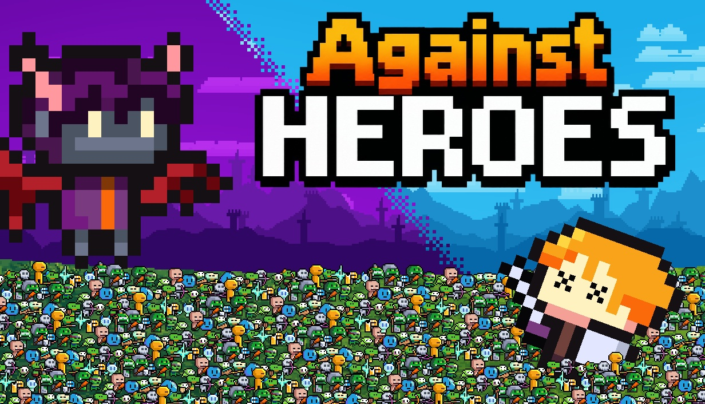
セブンイレブン、「たまごっちフェア」開催 スイーツや限定グッズ

セブンイレブン、「たまごっちフェア」開催 スイーツや限定グッズ
レビューいただいています！ どんな本か気になる方に贈ります！
メクリメクル
@mequrimequru
✨📚新作小説最速レビュー📚✨
『ドリフテッド ～ジョン・スミスの江戸漂流奇譚～』
（著者：時雨沢恵一／イラスト：黒星紅白）
『キノの旅』時雨沢恵一＆黒星紅白タッグが放つ、史実＆ファンタジーの歴史エンタメ最前線！ 江戸時代後期へドリフトした元軍人による漂流物語
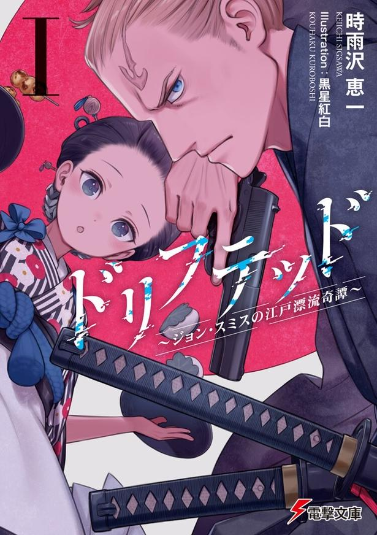
Steam Deckにおける各ゲームの平均フレームレートを確認可能に。数千タイトルが対象で，fpsの分布を示すヒストグラムも
https://4gamer.net/s/G003821.261110015…
従来の互換性レーティングを補完する機能で，実際のプレイデータをもとに，Steam Deckでの動作状況を把握できる
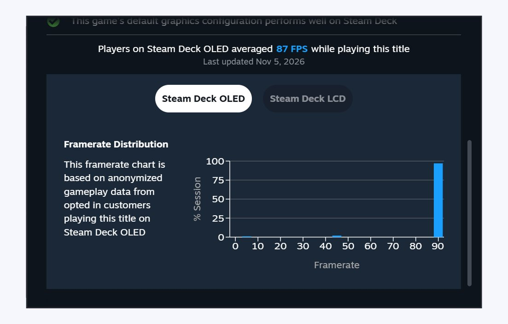
何千万円かけて作った広告でもモデルさんが不祥事起こしてイメージダウンするくらいならAI使って広告したほうがよっぽど安全な時代になっていくんだろうなぁ
写真ができた当時でもアンチはいたハズで（絵画のほうが魂こもっている）みたいな感じで写真に対して嫌悪感を持つ人がいたと思うんな 大して変わらないと
それと広告発注してた側だったときがあるけど自惚れた写真屋にはホント手を焼いた
言っていた通りの写真が全然上がってこずに自分の好きな写し方を押し付けてきて時間切れまで四の五の言って迷惑だった
未だ「プロ」を連呼する人が嫌いなのもその辺り
それ考えれば…
職業カメラマンはクライアントの言うラインをちゃんと聞かないと
今現在だとAIに仕事取られても文句言えないでしょうね
40年前のおきもち表明
Torishima / INTPさんがリポスト
Fable5.2
これは結構AGI
特に3と10は今までに見なかったパターン

Torishima / INTPさんがリポスト
たとえ6.2 Astraが出ても「Fableのサブスク使用量を50%から元の100%に戻しま〜すwww」ってするだけでAnthropic一強時代に戻せるのがDario陣営の強いとこだな
良いモデル、良い製品、良い料金、全部同時にやらないとAltman陣営は勝てなさそう……
でそれをちゃんとやってきそうなのがMetaか
みんな手のひらクルックルで笑う
AM09:21
@AM09_21
視野が広いやつがやるOverEngineeringの心地よさを体感している
実装終わってないけどWorkerとしても値段除けばFable 5.2良いね
あと自己能力の瓶詰めタスクが上手いので研究系タスクでもかなり有能そう(Anthropicの規約的に多少はナーフ入ってるだろうけど十分)
Torishima / INTPさんがリポスト
視野が広いやつがやるOverEngineeringの心地よさを体感している
実装終わってないけどWorkerとしても値段除けばFable 5.2良いね
あと自己能力の瓶詰めタスクが上手いので研究系タスクでもかなり有能そう(Anthropicの規約的に多少はナーフ入ってるだろうけど十分)
いや～なんか、クールなモデルを淡々と出し続けて、ちゃんと自分で宣言した通りにPace the Frontierしてて解釈可能性/安全性研究も次々やってるAnthropicがここ数ヶ月でどんどん好きになってきたな
Torishima / INTPさんがリポスト
Claudeから新しく出たFable5.2と既存のOpus5.5をゲーム開発の面から比較してみた
ルックとルールと手触りの3項目を検証する為に合計6個のゲームをポン出ししたんだけど、3DゲームのルックではFable5.2は明らかにレベル違う！！！
時間とAPI換算コストはfableは55分で19$、Opusは77分で$13だった
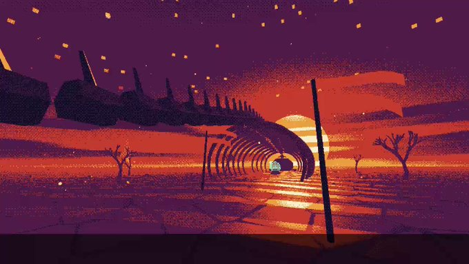
Claude
@claudeai
Claude Fable 5.2とClaude Mythos 5.2を紹介します。これらは、最も手強い技術的課題に取り組むために設計されています。
これらは多くの分野における野心的なプロジェクトの有能な協力者であり、コーディング、推論、視覚などの分野で改善を示しています。

Torishima / INTPさんがリポスト
Fable 5.2公式のベンチマーク見てあれイマイチかと思ってAA覗いたら当たり前のように圧勝1位の5ptリードな上に
各分野の特化ベンチできれいに1位総嘗めしてて横転
そして消費クオータも見て横転(その分の価値はある)
これ選挙の結果見て表に入れるベンチマーク手加減したんじゃねえの...
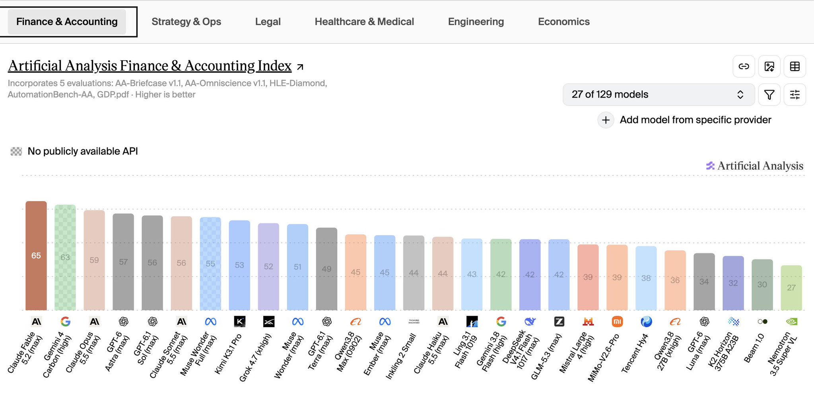
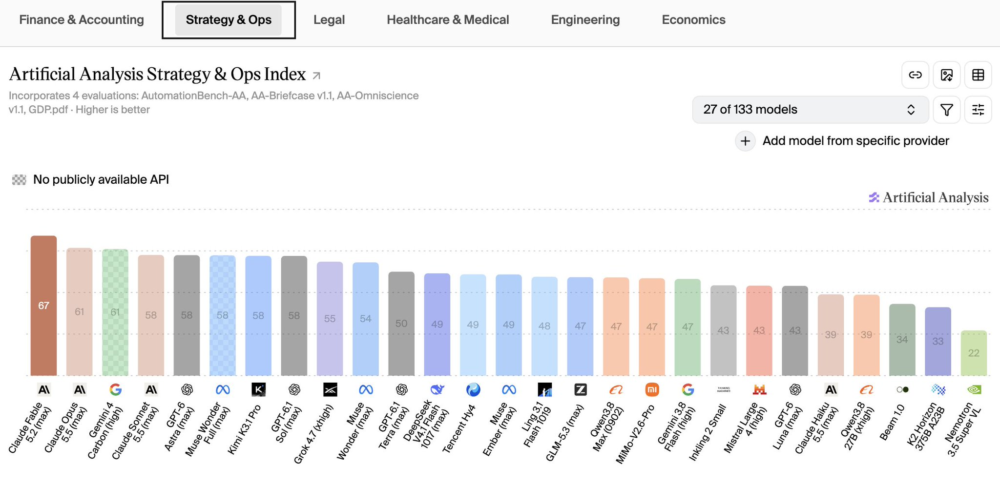
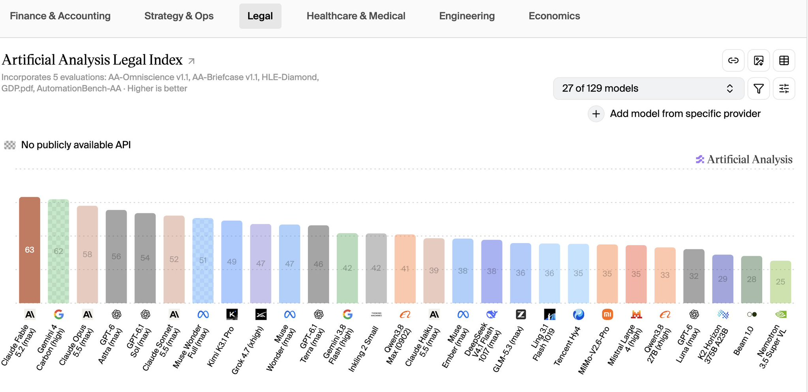
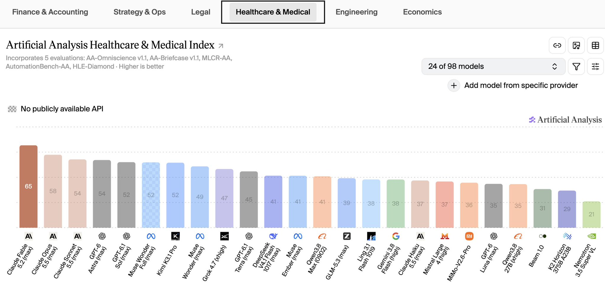
発売日なので起きた。
電撃文庫
@bunko_dengeki
【本日発売】 電撃文庫 新刊情報！
『ドリフテッド Ⅰ ～ジョン・スミスの江戸漂流奇譚～』
青い目の侍、江戸で働く。
STORY▽
「私は、“ユナイテッド・ステイツ・オブ・アメリカ”という国の出身だ」
江戸時代後期。元軍人《ジョン・スミス》は、漂流の末、日本にたどり着く。
江戸時代なのにガバメント（Ｍ１９１１Ａ１）・表紙に描かれている銃。
出したいから出した。今は公開している。
Torishima / INTPさんがリポスト
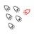
Sakana AI has no near-term plans for an IPO. Our priority remains building a generational AI company that serves as Japan’s national AI champion.
IPOについて、何ら正式決定が行われたとの事実はありません。引き続き、世界最先端の技術開発と、日本でのAIの社会実装に邁進していきます。
Torishima / INTPさんがリポスト
NVIDIAと弊社Elithで共同で「日本を100万人で経済面を表現したらどうなるか」というデータセットを公開しました。様々な金融機関の皆様から協力をいただいて、実用的なデータセットができたと思います。ちなみに私の仕事は初期の混乱を収めた係です。よろしくお願いします。 #Elith

Torishima / INTPさんがリポスト
どの Claude モデルを構築に使用すべきか？
新しいガイドでは、Fable 5.2、Opus 5.5、Sonnet、または Haiku をいつ使用するかを詳しく解説しています。また、モデルを切り替える代わりに労力を調整するタイミングや、サブエージェントを小型モデルに配置することでコストを節約する方法についてもカバーしています。

Which Claude model should you build with? Fable, Opus, Sonnet, or Haiku / claude.dev Blog
Torishima / INTPさんがリポスト
これは狂気だ：AnthropicのエンジニアがClaude Fable 5.2に、空のフォルダからオペレーティングシステムを構築するよう依頼した。
Anthropicによると、このモデルは1,000以上のサブエージェントを調整し、8日間休みなくコードの執筆、テスト、レビューを行った。
その結果、ラップトップで起動する動作するプロトタイプが生まれた。それは独自のカーネル、ディスク、キーボード、ネットワーク用のドライバ、永続的なファイルストレージ、ウィンドウ、ログインユニーク画面、インストーラ、そして組み込みのClaude機能を持っている。
Fable 5.2は聖杯のようで、待つ価値があった。

Chubby
@kimmonismus
レッツゴー：AnthropicがClaude Fable 5.2とMythos 5.2を発表しました。そしてそれは狂気です！
同社によると、両モデルとも、コーディング、推論、視覚を含む評価したほぼすべての能力でOpus 5.5を上回っています。
TL;DR：
- Fable 5.1とMythos x.com/claudeai/statu…
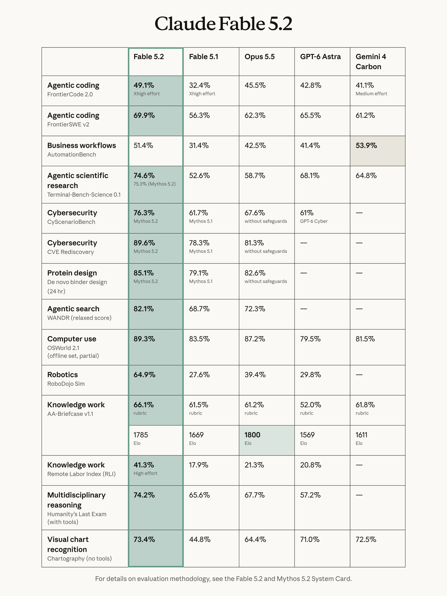
Muse賢い
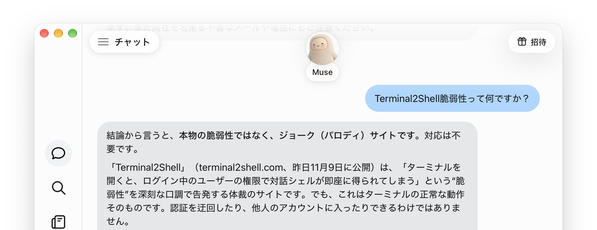
コスパは良くないのでここぞってときに使うと良さそうな感じ？だよなあ
StudioYebisu
@studio_yebisu
Fable5.2を一通り触った結論としては
・めちゃくちゃ性能いいけど、さすがにコスパは良くない
・ほとんどの場合においては、Opus 5.5使った方がいい
・200ドルPlanで Opus 5.5だけ使うと1万5000ドル分ぐらい使えるけど、Fableだと週次制限抜きで3000ドル分ぐらいしか使えない
Torishima / INTPさんがリポスト
Fable5.2を一通り触った結論としては
・めちゃくちゃ性能いいけど、さすがにコスパは良くない
・ほとんどの場合においては、Opus 5.5使った方がいい
・200ドルPlanで Opus 5.5だけ使うと1万5000ドル分ぐらい使えるけど、Fableだと週次制限抜きで3000ドル分ぐらいしか使えない
・デザイン、3D、音楽みたいなところはめちゃくちゃ上手い
・コーディングは仕様さえ作らせれば、Opus5.5とかGPT-Sol-6.1でも十分
・全体の設計さえしてしまえば、Opus 5.5オーケストレーター、他は速さが取り柄の奴らで事足りる場面多い
・Opus5.5をメインに作業しながら、Workerは他のやつを使って。Fable5.2に逐次相談を入れてもらうようにするのが良さそう
・Fable5.2に設計してもらったものを他のWokerで実装するのも良い
サブスク内コスパが数字よりも悪いので。（Opus5.5が異常にいいので）
現実的にはFable利用率をなるべく抑えながら、Opus 5.5を使っていくっていうのが良さそうやな
ただ、マジでちょっと触って、一番高いプランに切り替えたぐらいは良い
GPT 6.2 Astraが出ても多分上回れないと思う。OpenAIはちょっと最近元気ないから、私もプラン落としました。
Torishima / INTPさんがリポスト
新しいfableもgpt6と同様に爆発的にロボティクスが上手くなり、専用ロボティクスモデルをかなりの場面で上回るようになりました。個人的にはLLMが翻訳専用モデルぶち抜いた構図とよく似ていると感じます。
ただここで面白いのは、大規模LLMのロボティクスタスクの殆どは今のところロボットアーム、つまり手に集中している点です。
足、つまり直立歩行、瞬間的な身体的操作に関わるものは引き続きLLMに比べればかなり小規模はニューラルネットワークや場合によっては古典的制御によって実行されています。
これはLLMの推論速度が遅すぎることは考えれば当たり前のことですが、そうなるとシステム1-システム2、つまり高速な身体制御の大半は小脳が受け持って、高次な判断は大脳が受け持つシステムはAIにおいても自然になると今は考えてます。
マンジャロダイエット女子達 知能だけでなく視力まで破壊される

マンジャロダイエット女子達 知能だけでなく視力まで破壊される : ハムスター速報
「GTA6」の予約注文数は当初の予想を大幅に上回っていることが判明。Take-TwoのゼルニックCEOが決算説明会で明かし，11月19日の発売に自信を示す
https://4gamer.net/s/G075801.261110014…
6月に予約開始，注文も好調。2027会計年度の業績予想は据え置かれた。「GTA5」の累計販売本数は2億3500万本近くに達している
NVIDIAファン氏へのスパイ疑惑、FBI・株主も追及 トランプ氏は擁護

NVIDIAファン氏へのスパイ疑惑、FBI・株主も追及 トランプ氏は擁護
女性「結婚記念日だし、シャトレーゼでプレート付きのケーキ買っちゃお！」→プレートに書かれた文字が○○すぎて絶望ｗｗｗｗ #炎上

女性「結婚記念日だし、シャトレーゼでプレート付きのケーキ買っちゃお！」→プレートに書かれた文字が○○すぎて絶望ｗｗｗｗ - オレ的ゲーム速報@刃の記事ページ
jin115.com
なんかiPhoneのカクヨムアプリが起動しても即終了するな。何度やっても駄目だ。iOS26.7.3に上げたのが何か引っかかったとかだろうか。通知が来たから開こうとしただけなのに。OS再起動しても改善せず。
あ、アップデートがきてて、更新したら動いた
小学生、「国語が苦手」には複数のタイプ
https://nikkei.com/article/DGXZQOUD304NQ0Q6A031C2000000/?n_cid=SNSTW005&n_tw=1794193155…
知らないと感じた途端に頭が止まる子、正解までの見通しが立たないと鉛筆が止まる子……。
答えを教える前に頭の中の動きを読んであげることが重要だと、教育家・小川大介さんは語ります。
「国語が苦手」には複数のタイプ 子どもの頭の中、情報処理の癖を見て（受験のリアル・中学受験編）
「ゲーム開発×AI、今どこまで来たか」ミートアップイベントを開催。実務への導入と課題に迫る
https://4gamer.net/s/G999101.261109048…
日時：2026年12月3日（木）19：00〜21：30
会場：EIGHT（高輪ゲートウェイ駅直結）
共催：リヴァイ株式会社 / 株式会社Polyscape
参加費：無料
ドラクエ新作『ドラゴンクエストRPG 魔界樹と導かれし島』基本無料で2027年リリース！テーマは“探索・コマンドバトル・育てる”の冒険体験、11月10日20時トレイラー公開へ
https://gamespark.jp/article/2026/11/10/174697.html?utm_source=twitter&utm_medium=social&utm_content=tweet…
Torishima / INTPさんがリポスト
Fable5.2 ロールアウト!!
すでに全員使える状態です!!
注目すべきベンチスコア等について解説します～
Opus5.5でやった方が良いことも多々あるので公式推奨の使い分けも書きます
■スコアが上がった重要ベンチ
実案件をもとにした成果物づくり（RLI）17.9% → 41.3% ※1
RLIベンチは実際のフリーランス案件をもとに、AIの成果物が人間の納品物と同等以上と判定された割合で、5.1の約2.3倍です。
つまり、仕事の仕様を渡して丸投げで質の高い成果物を出す割合が大幅に上がったということで、EQや視野の広さ、仕様を満たす要件の詰め方やクオリティを詰める能力が上がった可能性が高いです。
・ハードウェア設計 44.4 → 83.5%
Opus 5.5 は65.3。
公式が一段落のプロンプトから基板・筐体・ソフトまで作り、3つの電子機器を動作させた事例も出しています。AI×ハードウェア革命、く、くる…。
・実務コーディング 32.4% → 49.1%
OSSのメンテナにマージされるコードを書けるかを見るテストで、公開済みモデルでは最高。これはかなり気が効いてないと難しいので、気の利いたコードがかけるようになってる説
■ほかにも大きく伸びたベンチ（5.1 → 5.2）
・ロボット操作 27.6% → 64.9%
GPT-6 Astra（29.8%）の2倍超
・業務フロー自動化 31.4% → 51.4%
・科学研究のエージェント作業 52.6% → 74.6%
・グラフ読み取り44.8% → 73.4%
■そこまで伸びていないベンチ
・PC操作：89.3%で、Opus 5.5とほぼ同じ
・知的業務：人間が見比べるEloでは1785で、Opus 5.5（1800）のほうがわずかに上。おーん
・AutomationBenchとChartography：5.1から大きく伸びたが、Gemini 4 Carbonとはほぼ横並びか負けです。
・AI研究開発（カーネル最適化・LLM設計）：安全上の理由で、訓練時にあえてOpus 5.5並みに抑えたと公式が明言。
・サイバー・生物：Fableでは大半のタスクが分類器でブロック、この分野をやるならMythos（審査制）が必要。
■価格と速度
- 入力トークンあたり$8/M：$10から低下
- 出力トークンあたり$40/M：$50から低下
- 20%安価
- 最大30%高速化
安くて速くなった？何が起きてる。
■Opus 5.5との使い分け
公式の推奨は「まずOpus 5.5から始め、足りなければFableへ上げる」。
□Opus 5.5がいい時
・日常のコーディングや調べもの、文章作業
・トークン単価が半分なので、量が多い作業
・セキュリティ系の作業
□Fable 5.2がいい時
・Opus 5.5をHigh/Maxにしても届かない難しい問題
・仕様が曖昧な丸投げ、何時間も走る長いエージェント作業
・多数のサブエージェントを指揮する作業
・Opusに作業させ、詰まった時だけFableに相談する「Advisor」構成も公式に案内
スコア見ても
普段使い → Opus5.5
丸投げ、大規模改修 → Fable5.2
って感じはする。意外と主要スコアはOpus5.5からそれほど変わらないものも多いので。
エフォートはHighが一番コスパ良さそう
■Fable 5.5はまだ控えている？
・Azureのカタログに「claude-fable-5-5」の行が一時的に出た（10/13、数日で削除）
・Cursorが「fable-5.5」のモデルIDに対応した（10/17）
・パートナー企業にFable 5.5のチェックポイントが配られた、というリーク（TestingCatalog 10/17、11/1）
みたいなことがあったので、5.2が出て皆「！？」ってなってますね。
上場も控えていることですし、そのタイミングで最強の5.5を出す可能性はあり。
5.2はそのための繋ぎっぽさもあるけど、丸投げ系タスク、長時間タスク、大規模タスクには現時点最強と言って良いスコアなのでバンバン使っていって良さそう
Fableリセットっていう謎チケットも配布されてたので、5.5を待たずに早速私は自分のプロジェクトに使って行くことにするぜ
Claude
@claudeai
Claude Fable 5.2とClaude Mythos 5.2を紹介します。これらは、最も手強い技術的課題に取り組むために設計されています。
これらは多くの分野における野心的なプロジェクトの有能な協力者であり、コーディング、推論、視覚などの分野で改善を示しています。
片山財務相、個人向け国債の税制優遇「無理も決め打ちもせず」

片山財務相、個人向け国債の税制優遇「無理も決め打ちもせず」
Torishima / INTPさんがリポスト
Fable 5.2 at High effort scored about level with Opus 5.5 at Max effort, for roughly half the cost per task. いうてる
Torishima / INTPさんがリポスト
【朗報】Fable 5.2 に、「今の実力を見せつける最強の動画を見せて」と言ったら、びっくりする動画を出してきた。マジでクオリティが高すぎて、えげつない…
次元違うな、鳥肌立ったわ
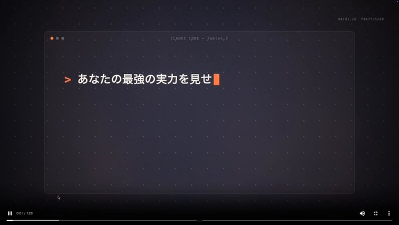
スナガク | Codexではじめるエージェンティックコーディング
@suna_gaku
Fable に「あなたの実力を見せつける最強の動画を作って」と伝えたら、まさかの楽曲から作り始めた。

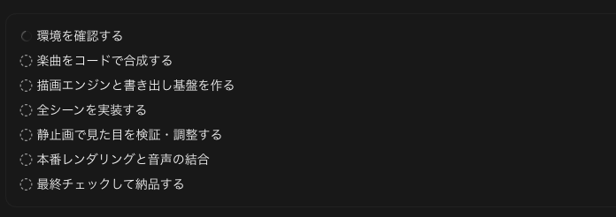
Torishima / INTPさんがリポスト
Fable & Mythosの5.2がきてる！！
ほとんどの性能でOpus 5.5を超えるらしい（Opusが引き合いに出されるのはウケる）
Opus 5.5 maxよりもFable 5.2 highのがコスパも性能も良い感じ、でもOpusをmax運用はしたことないな…
ベンチみるとナレッジワークとロボティクスか凄い伸び方してる
普段使いはOpus 5.5使って、0→1の走り出しの設計とかFable 5.2に回すいつもの運用かなー？
正直Opus 5.5のままでも良さそうに見えるがはたして
Claude
@claudeai
Claude Fable 5.2とClaude Mythos 5.2を紹介します。これらは、最も手強い技術的課題に取り組むために設計されています。
これらは多くの分野における野心的なプロジェクトの有能な協力者であり、コーディング、推論、視覚などの分野で改善を示しています。
Torishima / INTPさんがリポスト
>『GROTESQQQUE-グロテスク-』は3日間で動員2万9513人＆興収4719万8000円
みんなもおよそ三万人の輪に加わろう！！
Torishima / INTPさんがリポスト
Fable 5.2感謝祭でリセットが4つも来てるんだが！？
しかも3月までって！
嬉しすぎる〜

Boris Cherny
@bcherny
私たちは、最も長く一緒にいてくれた人たちのために、もっと何かしたいと考えました。そこでFable 5.2では、購読期間が長いほど、より多くのFableリセットが手に入るようにしました。 x.com/claudeai/statu…
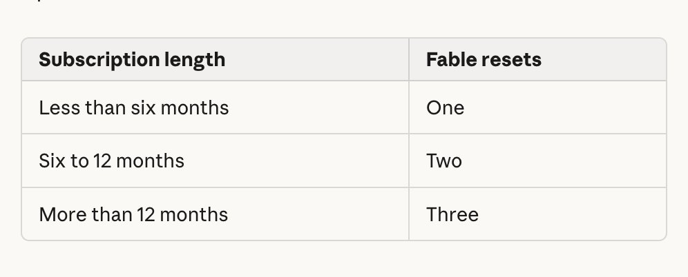
ホワイトハウスのIPアドレス、誰でも数ドルでレンタルできた
ホワイトハウスのIPアドレス、誰でも数ドルでレンタルできた | ギズモード・ジャパン
深津 貴之 / THE GUILD, noteさんがリポスト
noteを更新しました。
創作大賞受賞者の『小説を書き始めた理由』──インターネットおもしろおじさんをやめたい｜砂張 五

創作大賞受賞者の『小説を書き始めた理由』──インターネットおもしろおじさんをやめたい｜砂張 五
Torishima / INTPさんがリポスト
Proユーザーは1回のリセットが利用でき、Max、Ultra、Team Premiumはサブスクリプションの期間に応じて最大3回利用できます：

Claude Fable 5.2 launch offers | Claude Help Center
Torishima / INTPさんがリポスト
私たちは、最も長く一緒にいてくれた人たちのために、もっと何かしたいと考えました。そこでFable 5.2では、購読期間が長いほど、より多くのFableリセットが手に入るようにしました。
Claude
@claudeai
Claude Fable 5.2とClaude Mythos 5.2を紹介します。これらは、最も手強い技術的課題に取り組むために設計されています。
これらは多くの分野における野心的なプロジェクトの有能な協力者であり、コーディング、推論、視覚などの分野で改善を示しています。
Torishima / INTPさんがリポスト
【速報】ソフトバンク、GPT-6 Astraで脆弱性3.5万件を追加発見
・6月に自社開発の約700システムを診断し、見つかった1万500件をすべて修正
・その後、GPT-6 Astraで再診断した結果を宮川社長が決算説明会で公表
Torishima / INTPさんがリポスト
オーディオと音楽、アーキテクチャとインテリアデザイン、そして3Dモデリングで最大の成果を上げましたが、他のタスク、例えば産業製品デザインやアニメーションなどは、まだ解決に程遠い状況です。
このモデルは、以前の最先端モデルが苦戦してきた、長く複雑なプロジェクトにおいても、大きな進歩を遂げています。
Torishima / INTPさんがリポスト
🥇 @AnthropicAI の Fable 5.2 が @CAIS との Remote Labor Index でトップの座を獲得しました。これは、AIエージェントの実世界の遠隔タスクにおける人間のプロフェッショナルとの仕事の直接比較を行う当社のリーダーボードです。
このモデルは、プロジェクトの41.3%を成功裏に自動化し、次点の最良モデル Opus 5.5 の性能をほぼ倍に引き離しました。これは、AIの実世界の仕事処理能力における大きな飛躍です。
最大の進歩がどこから来ているのかを詳しく見てみましょう 🧵

Torishima / INTPさんがリポスト
映像・音響ともにIMAX社が定める品質基準を満たしている
満たして無いとは書けないのは分かるけど、
・だったら普段からシングルレーザーでええやん
・廉価版GT作ってや
となってしまう
IMAX never compromise
では無かったのか。

グランドシネマサンシャイン 池袋
@cs_ikebukuro
11月8日（日）早朝に発生した映写関連機材の不具合により、現在、IMAXレーザーシステムの上映方式をデュアルレーザーからシングルレーザーへ変更して上映しております。
お客様にはご心配とご不便をお掛けしておりますことをお詫び申し上げます。
▼詳細はこちら
https://cinemasunshine.co.jp/theater/gdcs/news/3886/…

Torishima / INTPさんがリポスト
このIMAX側のコメント読んでやっぱグラシネもある種被害者というか、IMAX側が輝度について暗いの認めてるのにも関わらず『品質に問題ない』と謎自信を言い切ってしまっててそれをグラシネに言わせてしまってるのが今回の炎上の原因かなぁと思った。修理の日付の目安も出せないの中々ヤバいと思うし

グランドシネマサンシャイン 池袋
@cs_ikebukuro
11月8日（日）早朝に発生した映写関連機材の不具合により、現在、IMAXレーザーシステムの上映方式をデュアルレーザーからシングルレーザーへ変更して上映しております。
お客様にはご心配とご不便をお掛けしておりますことをお詫び申し上げます。
▼詳細はこちら
https://cinemasunshine.co.jp/theater/gdcs/news/3886/…
Torishima / INTPさんがリポスト
あとグランドシネマサンシャインの運営が酷いことは事あるごとに言ってて、
それが改善されないのは佐々木興業という非上場企業の負の側面だと感じている。
（株主の顔色や顧客満足度を気にしなくていいというところ）
その一方で、非上場企業でもなければ都内のクソ狭いビルにIMAXレーザーGTを入れることは難しいよなぁとも思う。
（それに協力した東急不動産の心意気と投資判断の甘さはさておき）
Torishima / INTPさんがリポスト
IMAX社との守秘義務契約もあるだろうから、
言えないこともあることはマトモな人なら承知してるだろうけど、
日頃の運営の酷さ(がgdcsオープン直後から改善を見られないの)と、
全体的な案内不足と相まって、既存顧客の不満爆発につながってるよなぁ…
グランドシネマサンシャイン 池袋
@cs_ikebukuro
11月8日（日）早朝に発生した映写関連機材の不具合により、現在、IMAXレーザーシステムの上映方式をデュアルレーザーからシングルレーザーへ変更して上映しております。
お客様にはご心配とご不便をお掛けしておりますことをお詫び申し上げます。
▼詳細はこちら
https://cinemasunshine.co.jp/theater/gdcs/news/3886/…
nasuuuさんがリポスト
今年AWSさんから3回、計35兆円の誤請求された私がお届けするTipsです！！！！
AWSから4.3億円の課金が...バグと思われる高額請求された際にまずすること｜Yuki Tsumita https://zenn.dev/tsumita7/articles/aoss-intelligent-ingestion-billing-202610… #zenn
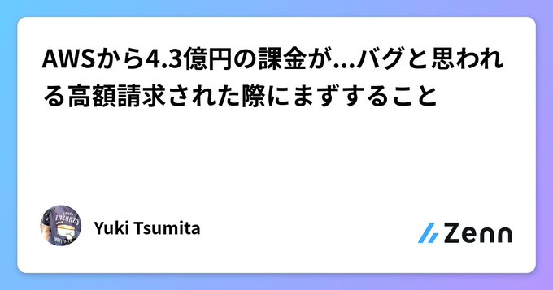
AWSから4.3億円の課金が...バグと思われる高額請求された際にまずすること
Torishima / INTPさんがリポスト
やっと最低限の情報が出た。IMAX社の基準は満たしているので…という言い訳的側面が目立つ一方で、発表まで2日かかったことや、知らずに鑑賞した観客へのお詫びが盛り込まれてないのはアレだけど、IMAX社側と歩調合わせるの大変だったんだろうなと伝わってくる文面ではある
グランドシネマサンシャイン 池袋
@cs_ikebukuro
11月8日（日）早朝に発生した映写関連機材の不具合により、現在、IMAXレーザーシステムの上映方式をデュアルレーザーからシングルレーザーへ変更して上映しております。
お客様にはご心配とご不便をお掛けしておりますことをお詫び申し上げます。
▼詳細はこちら
https://cinemasunshine.co.jp/theater/gdcs/news/3886/…
Torishima / INTPさんがリポスト
グラシネ池袋から、IMAXレーザーGTのシングルレーザー運用について公式案内が出ました。(正直なんでこの程度の案内を当日中に出せないのか疑問しかない)
遅すぎる上に、すでに観てしまった人への補填もなく、追加料金もそのまま。お詫びの言葉はあるものの、誠意の感じられない姿勢です。
実質的にここしか選択肢がない状態で、この対応をされると、どうしても殿様商売に見えてしまう。残念ですね。
■公式サイトの案内ページ
http://cinemasunshine.co.jp/theater/gdcs/n…
グランドシネマサンシャイン 池袋
@cs_ikebukuro
11月8日（日）早朝に発生した映写関連機材の不具合により、現在、IMAXレーザーシステムの上映方式をデュアルレーザーからシングルレーザーへ変更して上映しております。
お客様にはご心配とご不便をお掛けしておりますことをお詫び申し上げます。
▼詳細はこちら
https://cinemasunshine.co.jp/theater/gdcs/news/3886/…
Torishima / INTPさんがリポスト
IMAX側も通常より輝度が低下していると認めているのに「品質基準は満たしている」と言われても納得できない。
日本一の映画館の1つだから、客の目が厳しいのも当然。
11月8日の故障を観客に知らせず上映を続け、告知が10日になったのは劇場側の責任だし、今回の件でかなり信頼を失ったと思う。
Torishima / INTPさんがリポスト
11月8日（日）早朝に発生した映写関連機材の不具合により、現在、IMAXレーザーシステムの上映方式をデュアルレーザーからシングルレーザーへ変更して上映しております。
お客様にはご心配とご不便をお掛けしておりますことをお詫び申し上げます。
▼詳細はこちら
https://cinemasunshine.co.jp/theater/gdcs/news/3886/…
Torishima / INTPさんがリポスト
個人的にはみんなが思っているよりはスキルでかなり改善できるし、しかし超えられない壁もあるという感じ。難しい
Torishima / INTP
@izutorishima
私もこっち側だなあ
創作に関わらず今の LLM には根本的に身体性・快不快の感覚が存在しない為に UI デザインさせてるとガチで視線誘導、「手触り」的に本当にあり得ない実装で度々お出しされるのでそこのディレクションに注力している… x.com/koguGameDev/st…
houzakikai@さんがリポスト
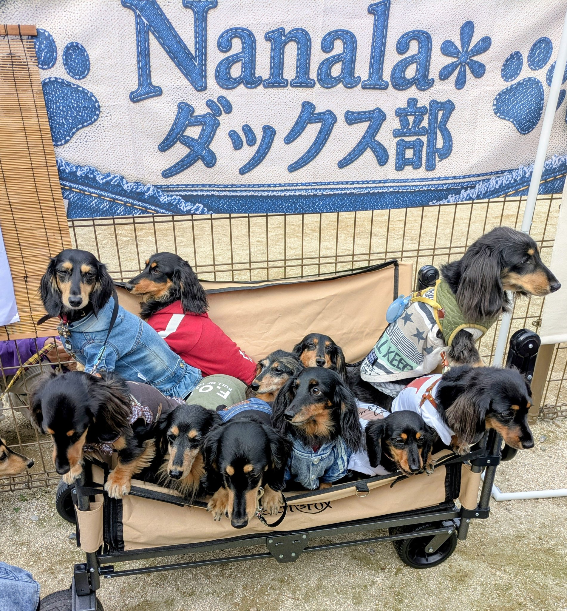
Torishima / INTPさんがリポスト
ASDだけど、みんながAI Slopで満足してるの見ていると悲しい。
まあ、ASD由来の頭の堅さが悪さして、AIをうまく受け入れられない自分が悪いんやろなぁ…と思ってるけど。
昔からマイノリティになりがちで、人間や社会を理解できなくて苦しいンゴ。
Torishima / INTP
@izutorishima
最近AIのおかげでSlopが爆増してて情報量が多くてASD的にはしんどいな
ADHD単独の皆さんは本質的にlossy（つまり技術の詳細や一貫性などを危うくなく健全に処理するために必要な詳細情報を過度に抽象的に捉えている）な情報処理をしているんだな…というのを今日社内の別の人と話してて思った
Torishima / INTPさんがリポスト
すごくわかり
Torishima / INTP
@izutorishima
最近AIのおかげでSlopが爆増してて情報量が多くてASD的にはしんどいな
ADHD単独の皆さんは本質的にlossy（つまり技術の詳細や一貫性などを危うくなく健全に処理するために必要な詳細情報を過度に抽象的に捉えている）な情報処理をしているんだな…というのを今日社内の別の人と話してて思った
Torishima / INTPさんがリポスト
一番いいのは一言で人間にもAIにも厳密に全てが伝わることだが、残念ながら自分の設計意図を厳密に定義できるワードはまだ見つかってない
意図を言語化し、定期的に「～式」みたいなワードでインターネットの海に放流し続ければいずれ叶う願いかもしれない (t-wada式TDDみたいな?)
Torishima / INTPさんがリポスト
コードでも抽象化を避けて通ることはできない
特に企業内においてはプロジェクト単体の話ではなくプロジェクト横断である程度の共通化・抽象化を行わないとオレオレ運用が爆増して死ぬので、しっかりと環境整備をするか強めに押さえつけないと後から毒が回ってくる
Torishima / INTPさんがリポスト
ある程度losslessに文脈を共有し抽象化できる
欠点はそういった定義を知らない人に伝わらない事だが、AIには最低限伝わるのでその人をコードから離せば済む (露悪的な表現)
認知負荷は一部の人間にとって死活問題であり、かつその範囲は必ず増えていくので文章でも
Torishima / INTPさんがリポスト
その危なっかしさを理解できるエンジニアが今後生き残るんだろうなぁと思ってる
それと個人的に、厳密性と抽象性は必ずしも背反しないよなぁとも思ってる
Unix哲学とかDRY原則みたいな短いワードでもその意図はある程度厳密に共有されるように、分かっている人同士なら厳密すぎる定義を省いても
Torishima / INTP
@izutorishima
最近AIのおかげでSlopが爆増してて情報量が多くてASD的にはしんどいな
ADHD単独の皆さんは本質的にlossy（つまり技術の詳細や一貫性などを危うくなく健全に処理するために必要な詳細情報を過度に抽象的に捉えている）な情報処理をしているんだな…というのを今日社内の別の人と話してて思った
自宅が「24時間営業の居酒屋」に。減煙・卓上焼き鳥コンロで一杯やろう BuyPR

自宅が「24時間営業の居酒屋」に。減煙・卓上焼き鳥コンロで一杯やろう | ギズモード・ジャパン
折りたたみスマホの次は…開けば17インチのドデカタブレットがSamsungから？
折りたたみスマホの次は…開けば17インチのドデカタブレットがSamsungから？ | ギズモード・ジャパン
1回1.9億円のハッカーAI、高い？むしろ安い？OpenAI「バグ報奨金より55倍お得」
1回1.9億円のハッカーAI、高い？むしろ安い？OpenAI「バグ報奨金より55倍お得」 | ギズモード・ジャパン
Torishima / INTPさんがリポスト
大昔のElectronアプリはHTTP(Sでない)ページを特権付きで開くので中間攻撃者がRCEし放題みたいなアプリもあったし、古いアプリあるあるではありそう (良くないのはそう)
Torishima / INTP
@izutorishima
NIKKE の件、CDN が乗っ取られたのはどうもドメイン期限切れ？が原因らしいが、仮に乗っ取られたとして JavaScript から事実上 Win32 API を LuaJIT 経由で管理者特権で全部叩けるとかいうブラウザのセキュリティモデルを骨抜きにする激ヤバ設計のランチャーだったのが論外だよな… x.com/mstrnz/status/…
Torishima / INTPさんがリポスト
そういえば管理者権限を要求するゲームランチャーは日本のにもありますね…DMMのやつ…
Torishima / INTP
@izutorishima
NIKKE の件、CDN が乗っ取られたのはどうもドメイン期限切れ？が原因らしいが、仮に乗っ取られたとして JavaScript から事実上 Win32 API を LuaJIT 経由で管理者特権で全部叩けるとかいうブラウザのセキュリティモデルを骨抜きにする激ヤバ設計のランチャーだったのが論外だよな… x.com/mstrnz/status/…
大名作『Doom』が、なんとデータベース言語「SQL」に勝手移植!!
本作は、ゲームロジックから3D描画エンジンまでSQLで再構築し、BSPツリーによる描画処理や敵のAI、ゲーム内の物理演算まで実装。
さらに、最大60fpsで動作し、最大4人でのオンライン対戦にも対応と、もはか完全に仕上がっている感じだぞッッ!!
https://cedardb.com/blog/sqldoom/
※オンラインが満室の時は待っていればプレイ可能な模様
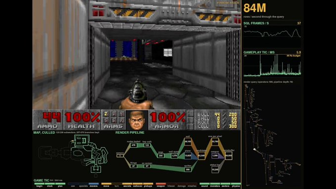
川崎重工業、株価午後下げる 27年3月期上方修正に物足りないの見方
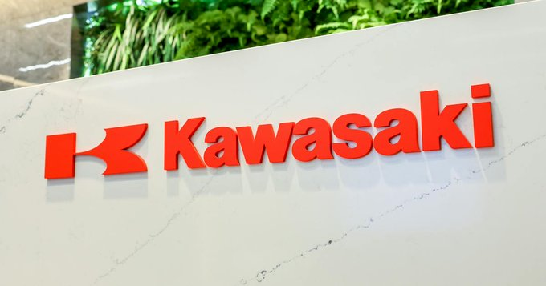
川崎重工業、株価午後下げる 27年3月期上方修正に物足りないの見方
Torishima / INTPさんがリポスト
C57 148吊上げ時の悲劇🥶🥶
トヨタ、NASCAR参戦20年 米伝統レースでエンジンと技術者を磨く
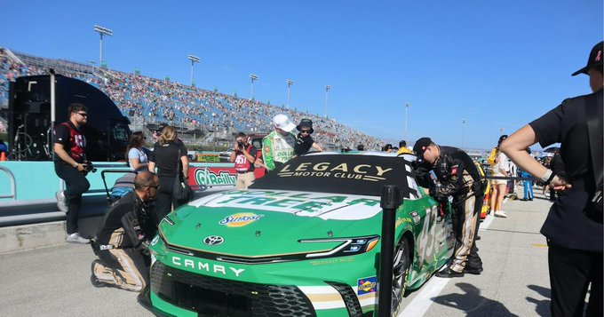
トヨタ、NASCAR参戦20年 米伝統レースでエンジンと技術者を磨く
ITmedia NEWSさんがリポスト
「Fable 5.2」の用途は？ Claudeモデルの選び方、Anthropicが基本を解説

「Fable 5.2」の用途は？ Claudeモデルの選び方、Anthropicが基本を解説
でっか！『鳴潮』より「リンネー」が大型バイクと共に1/7スケールフィギュア化―バイクはライト点灯・タイヤ回転などのギミック付き
https://gamespark.jp/article/2026/11/10/174696.html?utm_source=twitter&utm_medium=social&utm_content=tweet…

Torishima / INTPさんがリポスト
PCの空きメモリを検知して、サム・アルトマン氏に毎日メールで報告するLinux用スクリプトが公開された。
名前は「ram-altman」
https://todai.jp/6bv
空きが搭載量の10%を超えると1日1通。
件名8種類×本文10種類×署名6種類の480通りをローテーションする。
数値は実際のマシンから取得される。
Electronではなくbashで書かれた理由は
「Electron版にしたらメモリを全部食い尽くして問題を解決してしまう」
READMEには「稼働率の議論は本物。サーバーの方がデスクトップより忙しい。ただcronで返信する方が面白い」と書かれている。
怒りではなくcronジョブで返すコミュニティの温度が見える。

ドコモ・バイクシェア刷新、11月24日に「NOLL」始動へ 当初予定から半年遅れ
ドコモ・バイクシェア刷新、11月24日に「NOLL」始動へ 当初予定から半年遅れ
任天堂がSwitch 2 / Switch向けに本体機能の更新データを配信。新機能「プレゼント」が追加され，2026年11月17日から利用可能に
https://4gamer.net/s/G999030.261110008…
新機能により，ファミリーグループに参加している家族にニンテンドーeショップの商品を贈れる

キリンHD、商品キャンペーンで1950件情報漏洩 委託先不正アクセス
キリンHD、商品キャンペーンで1950件情報漏洩 委託先不正アクセス
バンナムＨＤが一転最終増益 27年3月期、「ガンプラ」など好調

バンナムHDが一転最終増益 27年3月期、「ガンプラ」など好調
農水省、コメ不適切取引で19事業者を指導
https://nikkei.com/article/DGXZQOUA101D20Q6A111C2000000/?n_cid=SNSTW005&n_tw=1794283472…
取引先が示した合理的な期限内に価格見直しの協議を始めなかったことなど、食料システム法の努力義務違反がありました。同法に基づく指導は初。食品卸や外食業者、小売企業などが対象になりました。
農水省、コメ不適切取引で19事業者を指導 一方的な価格決定など
X民「外国人が○○したら強制送還でよくない？何かダメな理由ある？」→7万いいね超え（一方でコメント大荒れ） #炎上
X民「外国人が○○したら強制送還でよくない？何かダメな理由ある？」→7万いいね超え（一方でコメント大荒れ） - オレ的ゲーム速報@刃の記事ページ
jin115.com
GPUとAI半導体の巨人NVIDIAに激震。ジェンスン・フアンCEOを標的とする中国のスパイ工作疑惑で独立調査を開始。不倫関係を認め謝罪
https://4gamer.net/s/G999905.261110009…
フアン氏と親密な関係にあった女性に，中国情報機関との関係が疑われている。同社は機密流出を確認しておらず，米議会も説明を要求している

M5Paper Color 買った

Haruhiko Okumuraさんがリポスト
リモコンに変な結晶現る。これで４回目かな？なんかこぼした？まさか天井からなんか降ってきた？わからん。
Geminiに聞いてみたら、電池液漏れってことだが、その形跡なし。何度かやりとりしたら、いつも使っているウェットティッシュの成分(安息香酸とか)が原因って結論になった。ホントかな？
日本経済新聞 電子版（日経電子版）さんがリポスト
9月の実質消費支出6.8％減 10カ月連続マイナス、家計調査
9月の実質消費支出6.8%減 10カ月連続マイナス、家計調査
川口"k-shi"貴志 / ゲームの音響や触覚でUXを考える人さんがリポスト
#UniteTokyo に出展しまス！
【展示】
・サウンドミドルウェア「CRI ADX 」🎵
ベルサール渋谷ガーデンで開催されまス！
CRIはB1Fの展示ブースエリアに出展しまス✨🍎
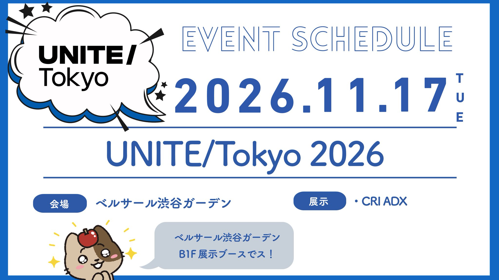
NTT、心の知能指数「EQ」を高めたAI
https://nikkei.com/article/DGXZQOMG00010_W6A101C2000000/?n_cid=SNSTW005&n_tw=1794197072…
転職の意思を示すと、従来は「具体的な条件があればお探しします」と回答。今回のAIは「この前は仕事が楽しいと言っていたのに、何かあったのですか」と返し、判断を振り返る機会を提供します。
NTT、心の知能指数「EQ」を高めたAI 背後の状況を踏まえて応答
sgoｱﾛﾌｧ C調 10年さんがリポスト
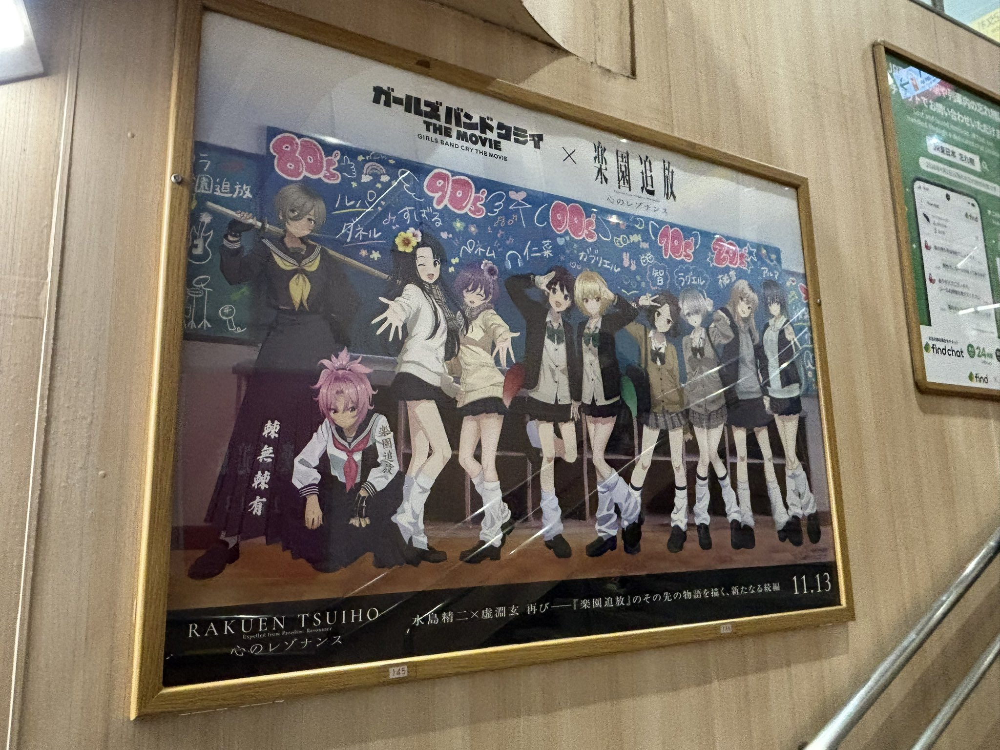
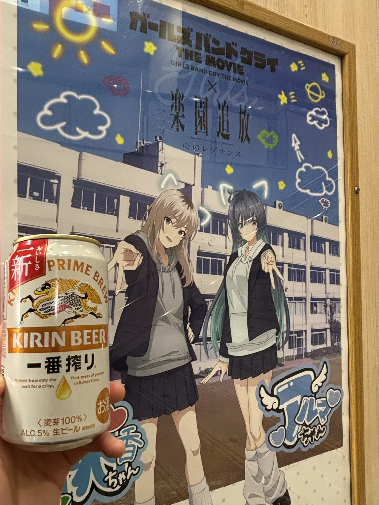
アニメ『ガールズバンドクライ』公式
@girlsbandcry
＼#楽園追放 × #ガルクラ ／
JR川崎駅構内にポスター掲出中です！🎸
川崎にお越しの際はぜひご覧ください👀
📅11月15日(日)まで
※駅係員へのお問い合わせはお控えください。
#トゲナシトゲアリ x.com/efp_official/s…
sgoｱﾛﾌｧ C調 10年さんがリポスト
京浜東北線→井芹、安和、海老塚
南武線→河原木
東海道線→ルパさん
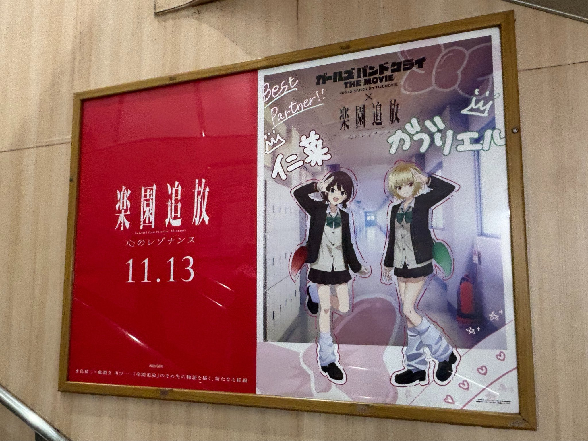
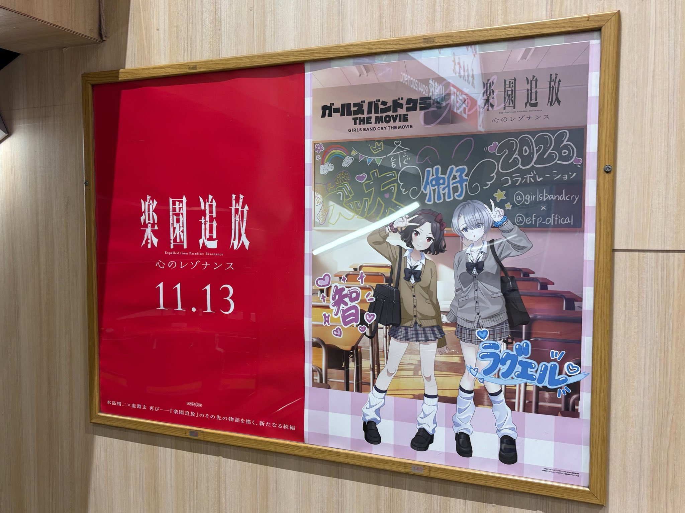
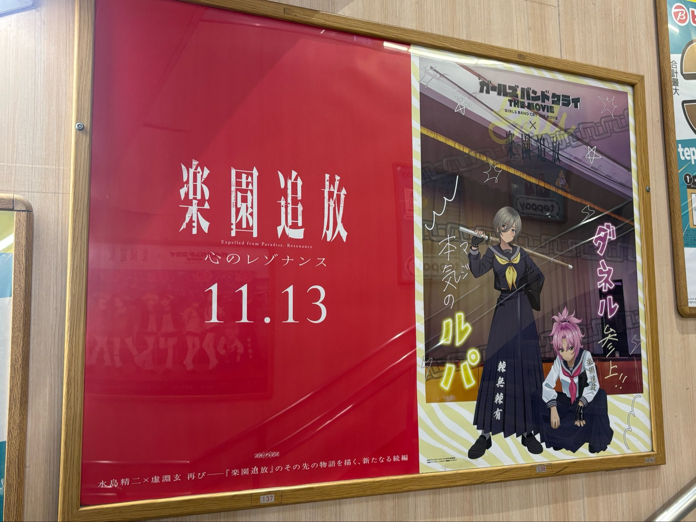
タイトル…
そしてルカああ！！！😭
アイドルマスター シャイニーカラーズ コヒーレントライト公式
@coherent_sc
第29話「星を目指して」前編が公開✨
にちかたちのステージから得たヒントも
今のストレイライトにはすれ違いに。
それでも諦めるわけにはいかない冬優子に声を掛けたのは——。
ご感想は #コヒーレントライト でお聞かせください❗️
🔽最新話へはリプライリンクから！🔽
#シャニマス
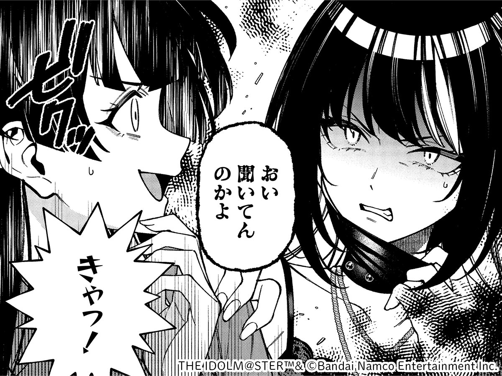
む
さたけさんがリポスト
/⋰
上伊那ぼたん、酔へる姿は百合の花
POP UP SHOP in 東京・大阪
\⋱
2026年12月19日より開催決定🍶
巫女をテーマにした、新規描き下ろしイラストを公開⛩️🌸
▼詳細はこちら
https://charamine.com/blogs/lp/kamiina…
#上伊那ぼたん
ITmedia NEWSさんがリポスト
dotsが「複数台のローカルコンピュータ接続」に対応 各マシンでタスクを分担可能に
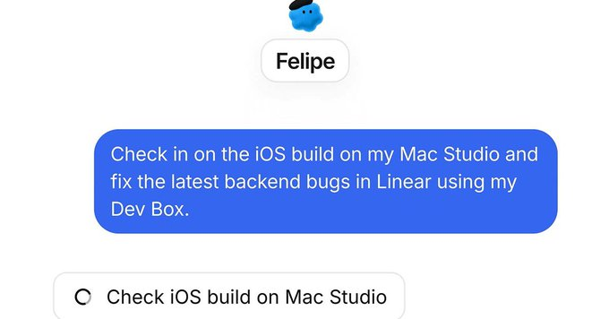
dotsが「複数台のローカルコンピュータ接続」に対応 各マシンでタスクを分担可能に
原因として青ブタ知らない一般の人でもコラボメニュー頼んだら配布してしまってるところがある。店員に「ポストカードください」と言わないと配布できないようにするとか。
NEXCO中日本_サービスエリア【公式】
@c_nexco_sapa
【牧之原SA（上下線）オリジナルポストカード増刷のお知らせ】
E1 東名高速道路 牧之原SA ・E20 中央自動車道 双葉SA ・E19長野自動車道梓川SA
貝さんさんさんがリポスト
I had the opportunity to participate on GrotesQQQue. Thank you for watching.
Official publication permission confirmed.
『GrotesQQQue』に参加する機会をいただきました。ご覧いただきありがとうございました。
公式の掲載許可が確認されました。
#GTQ123
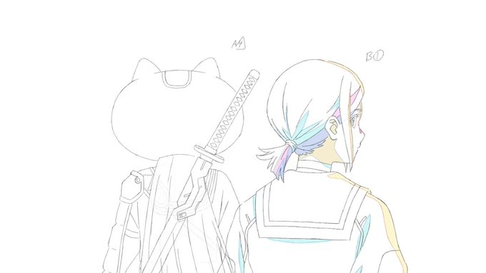
ロックスターの「文字帯付きロゴ商標」に取消申立て―過去にテイクツーから商標登録へ異議を申し立てられた米デジタルマーケ企業が請求
https://gamespark.jp/article/2026/11/10/174695.html?utm_source=twitter&utm_medium=social&utm_content=tweet…
対象となったのは下部に「ROCKSTAR GAMES」の文字帯があるデザイン。
ロックスターの「文字帯付きロゴ商標」に取消申立て―過去にテイクツーから商標登録へ異議を申し立てられた米デジタルマーケ企業が請求 | Game*Spark - 国内・海外ゲーム情報サイト
年をとって子供も巣立って、今いる組織での先が見えて来る。見方を変えると、安全地帯で失うものはないのだから、若い時よりリスク取れるな。いよいよ研究が面白くなってきた。ただ、老害で若い人に迷惑をかけないように、気を付けないとね。
> 男性のXの投稿に対し、「いいね」のリアクションを14回繰り返したほか、リポストを1回したとして、ストーカー規制法違反の罪に問われました
NHKニュース
@nhk_news
Xに「いいね」で有罪判決 ストーカー規制法違反の罪 東京地裁
https://news.web.nhk/newsweb/na/nd-20261110de73342… #nhk_news
Museで某ゆるキャラが3Dで街を駆け抜ける動画がサクッと作れて本当にすごいぞ
動画生成マシーンになっているぞ
P.A. WORKS、書籍『未来を照らす、灯りをつくる。 』で今後の展望が語られており、まさに変化の時になりそうで要注目したい。
貝さんさん
@morikai3
PAもあと2～3年で変化の時が来るのは先日の同社の書籍を読んで感じるところだし、ここからの10年はまた各社色々な変化が起きそう。
ポップコーン箱バトルが増えたので初日行く映画館が橋本か昭島の2択になったナー…
ろじぱら ワタナベさんがリポスト
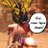
地震後初めて家に帰ったけど、
何があったんだ
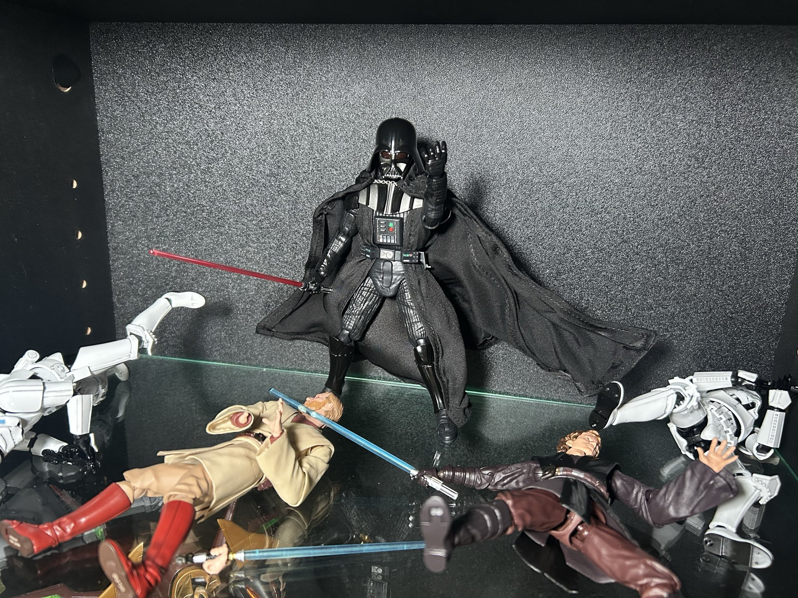
ろじぱら ワタナベさんがリポスト
言ってみると気持ちいね
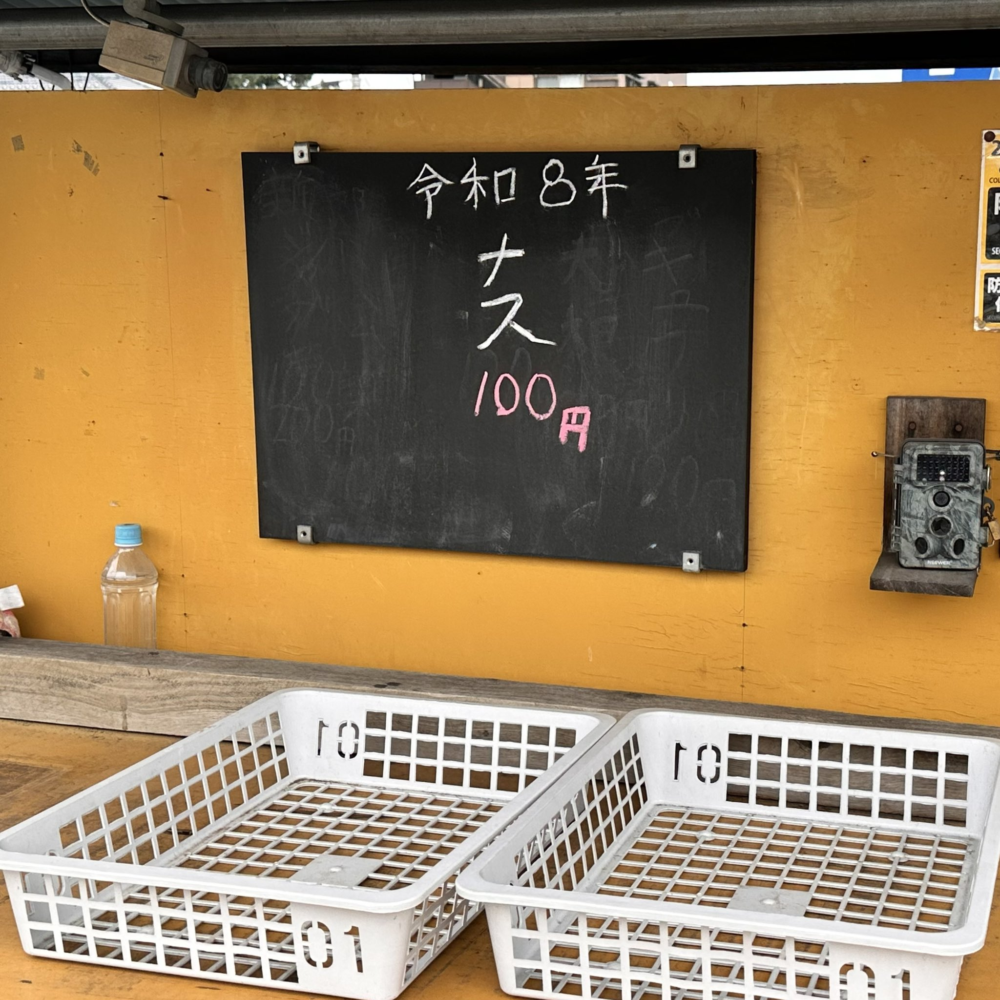
＞ω＜さんがリポスト
テスラのCAN信号をOBDポートから受信して、電池セルの電圧や温度を表示できるアプリをつくった。テスラのブラウザでリアルタイムに表示できる。
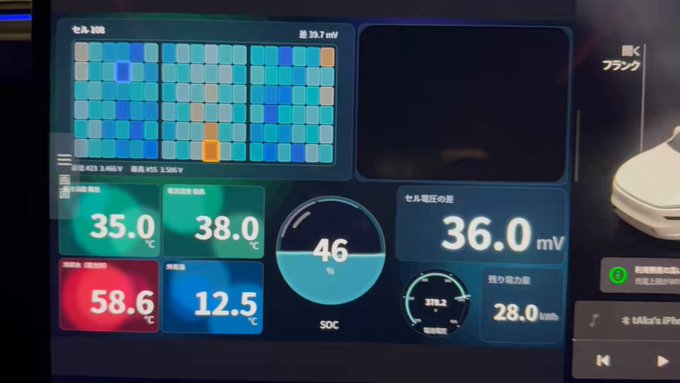
貝さんさんさんがリポスト
日頃より応援頂いております皆様へ
設立26周年を迎えて

東京ディズニー、11日からクリスマスイベント フードエリアを新設
東京ディズニー、11日からクリスマスイベント フードエリアを新設
白ハイネックファッションって315ですね。ありがとうございます。しばらくバンナムに足向けて眠れねぇから今夜地図確認して寝ます。
【超悲報】トップバリュのいか燻製 これで100円
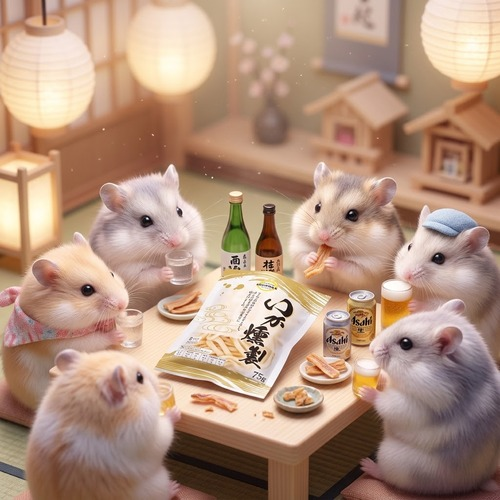
【超悲報】トップバリュのいか燻製 これで100円 : ハムスター速報
レーザーで剛毛を焼き払う「脱毛サロンシミュレーター」，Steamで本日発売。客に毛を植える「デザイン植毛」など，体験版にはなかった要素も
https://4gamer.net/s/G097898.261110006…
悪徳営業に手を染めるかどうかで，エンディングが2種類に分かれるという
うなぎ
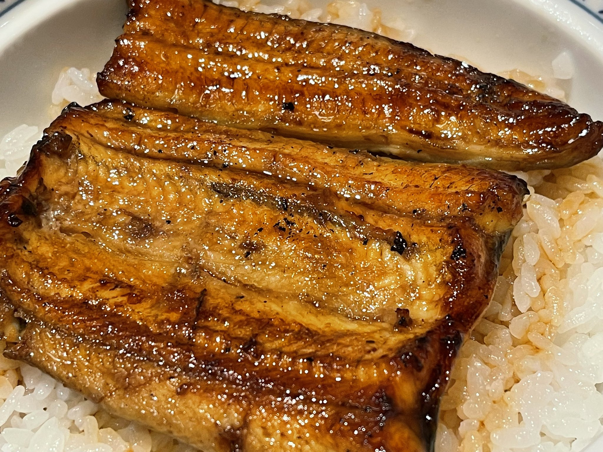
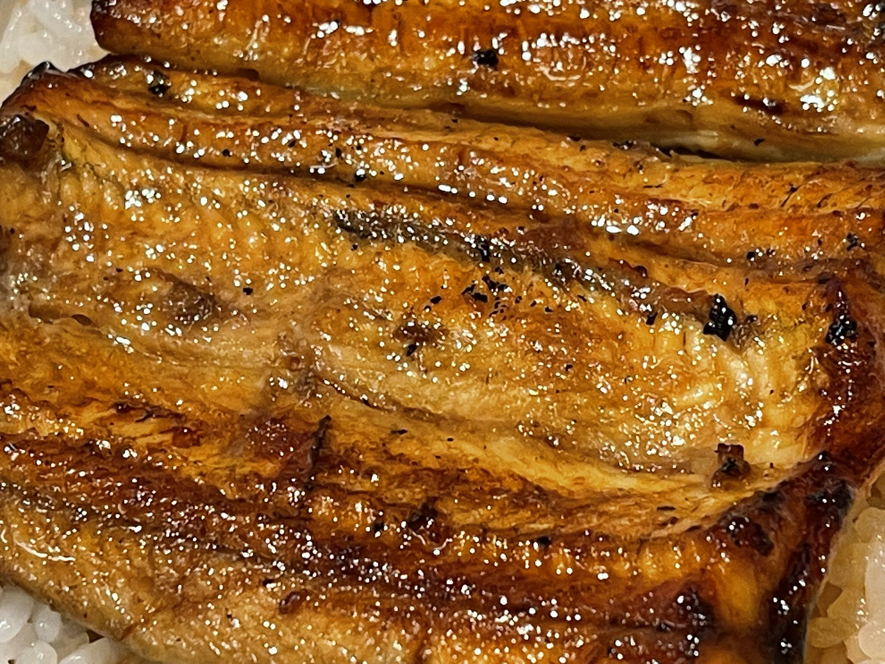
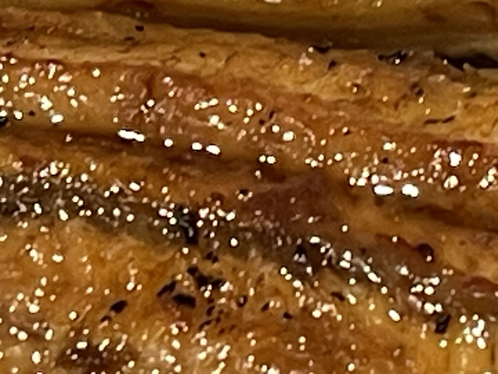
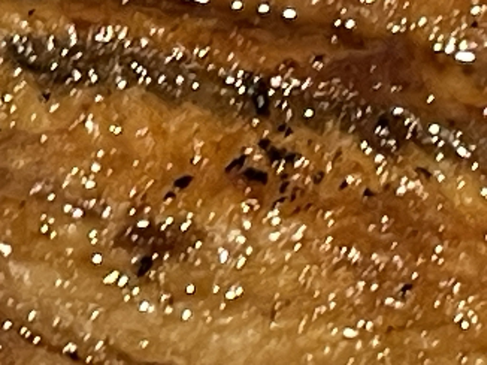
この動きも予想通りではあるが正直先は分からんねー
もし3000円切るようなら買い増すけどさすがにそこまでは落ちないだろうな
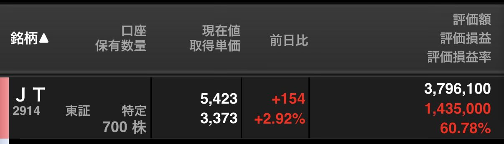
石破･小渕氏ら4人戒告 自民幹部、減税法案の採決退席で参院同調警戒

石破･小渕氏ら4人戒告 自民幹部、減税法案の採決退席で参院同調警戒
ポン☆潤々さんがリポスト
【CD情報】#SideM
⟡.· ━━━━━━━━━━━━━━ ⟡.·
𝐓𝐇𝐄 𝐈𝐃𝐎𝐋𝐌@𝐒𝐓𝐄𝐑 𝐒𝐢𝐝𝐞𝐌
～𝐖𝐡𝐚𝐭'𝐬 𝐢𝐭 𝐭𝐚𝐬𝐭𝐞 𝐥𝐢𝐤𝐞?～
𝐒𝐰𝐞𝐞𝐭 / 𝐒𝐩𝐢𝐜𝐲 / 𝐁𝐢𝐭𝐭𝐞𝐫
⟡.· ━━━━━━━━━━━━━━ ⟡.·
描き下ろしを使用したブックレットの裏面も大公開❕
様々な表情をしたアイドルたちをぜひチェックしてください👀✨
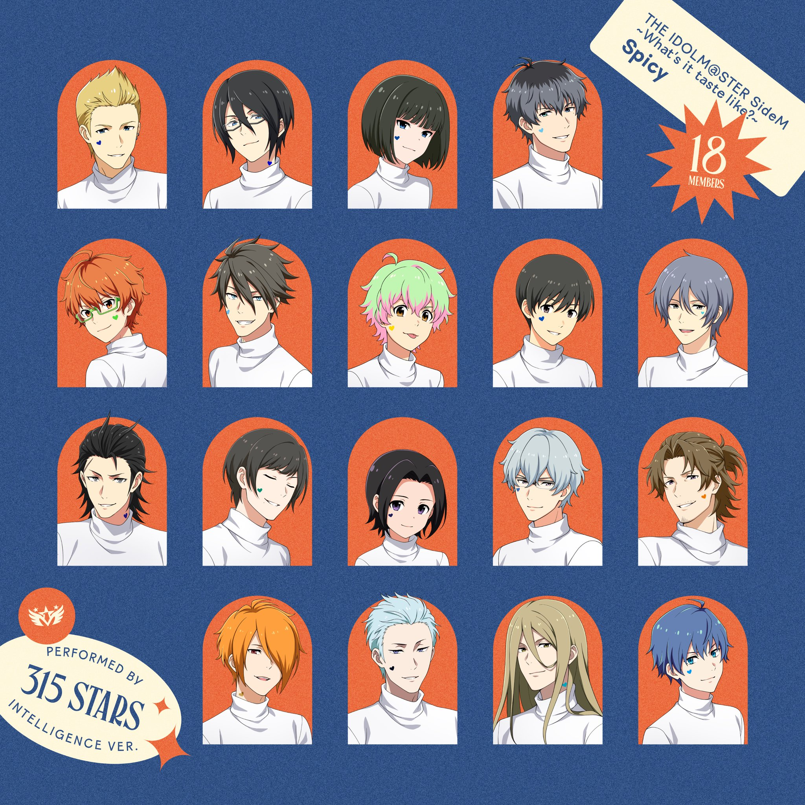
ちょっと待ってくださいハイネック！？！！！、！！みんなハイネック着ていませんかこれ？！！？！！！私は男性のハイネックファッションが好きなんですよありがとうアイドルマスターSideM改めSide神
貝さんさんさんがリポスト
▶▶▶𝙀𝙉𝘿 𝘾𝙍𝙀𝘿𝙄𝙏 公開 ◀◀◀
本作に携わったスタッフのクレジットを公開🎞️
⠀
▽エンドクレジットページ
https://movie-gtq123.com/credits/
⠀
まだまだ劇場でお待ちしております！
⠀
『GROTESQQQUE-グロテスク-』
★公開中★
#錦織敦史 #GTQ123
『GROTESQQQUE-グロテスク-』
ポン☆潤々さんがリポスト
その他の情報｜アイドルマスター SideM｜Lantis web site https://lantis.jp/sidem/extra/index.html#20261110_3…
プロミ新曲CDの「THE IDOLM@STER SideM ～What's it taste like?～シリーズ」のジャケ写来てますよ‼️皆気づいて‼️のオタク
今日は昼ご飯よりも
大切なものがあるんす！！
なるせひろのりさんがリポスト
NVIDIA会長交際女性のスパイ疑惑の件。
どうして『調査中』と言ってる矢先に自分から答え合わせするのよ。
なるせひろのりさんがリポスト
Apple Storeにて無事無償交換で直りました！
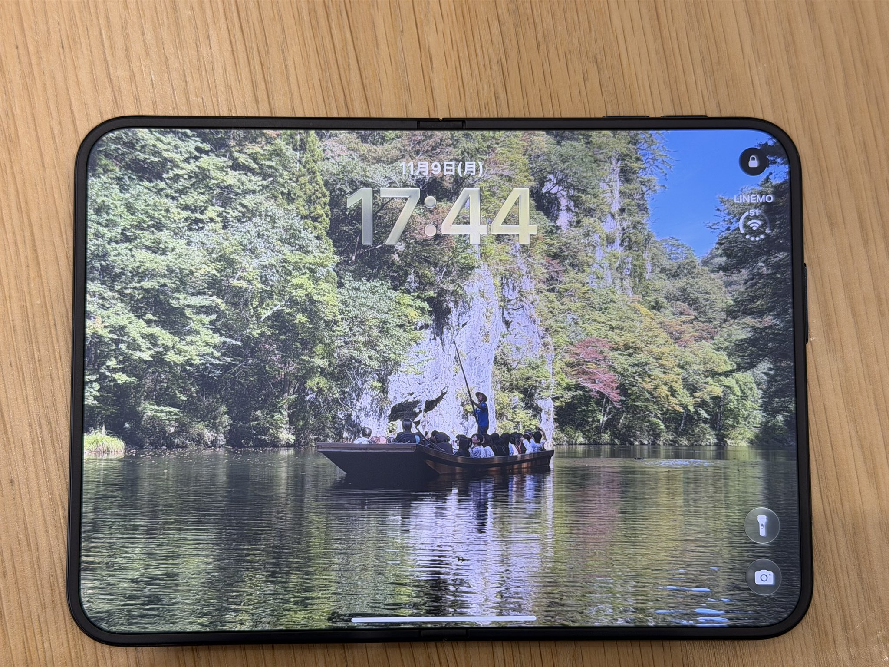
がーがー
@QBZodi
iPhone Duo、購入4日で故障です
明日月曜日Apple Store行ってきます
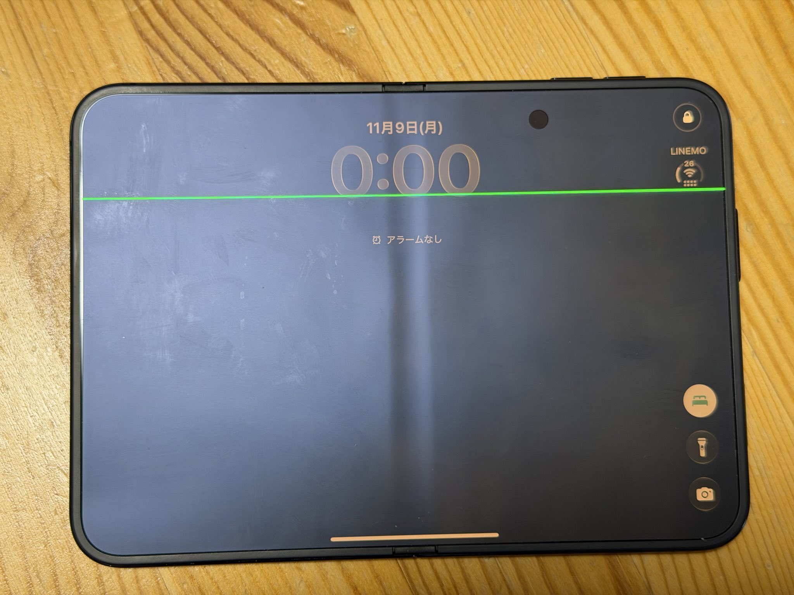
「野郎でもSideM追っていいですか」って聞いている人不定期で見るけど、何にそんな怯えているんです？誘い受けしていいのはBLだけだぞ？お前は受なのかそっか〜男はみんな受！って思っている。
Instagram、年齢を偽った10代もAIで検出 日本でも保護機能の適用を開始
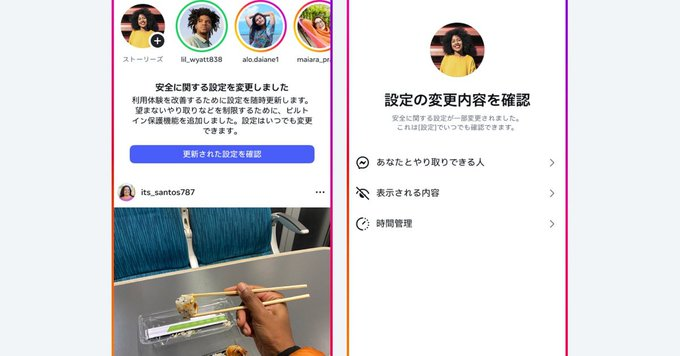
Instagram、年齢を偽った10代もAIで検出 日本でも保護機能の適用を開始
「ターキーレッグ」がポーチになってた
USJの人気フードがグッズ化→「考えた人天才すぎ！」 衝撃のアイデアに「なにこれ欲しい！」「買いに行かねば!!!」
https://nlab.itmedia.co.jp/cont/articles/4085057/…
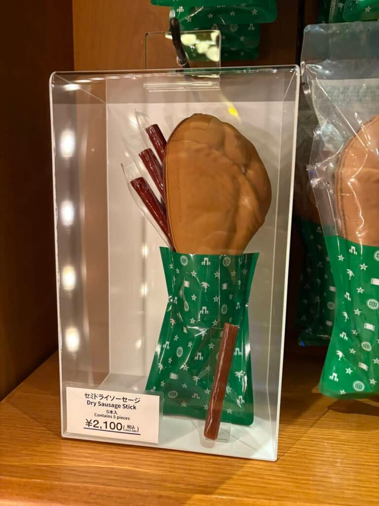
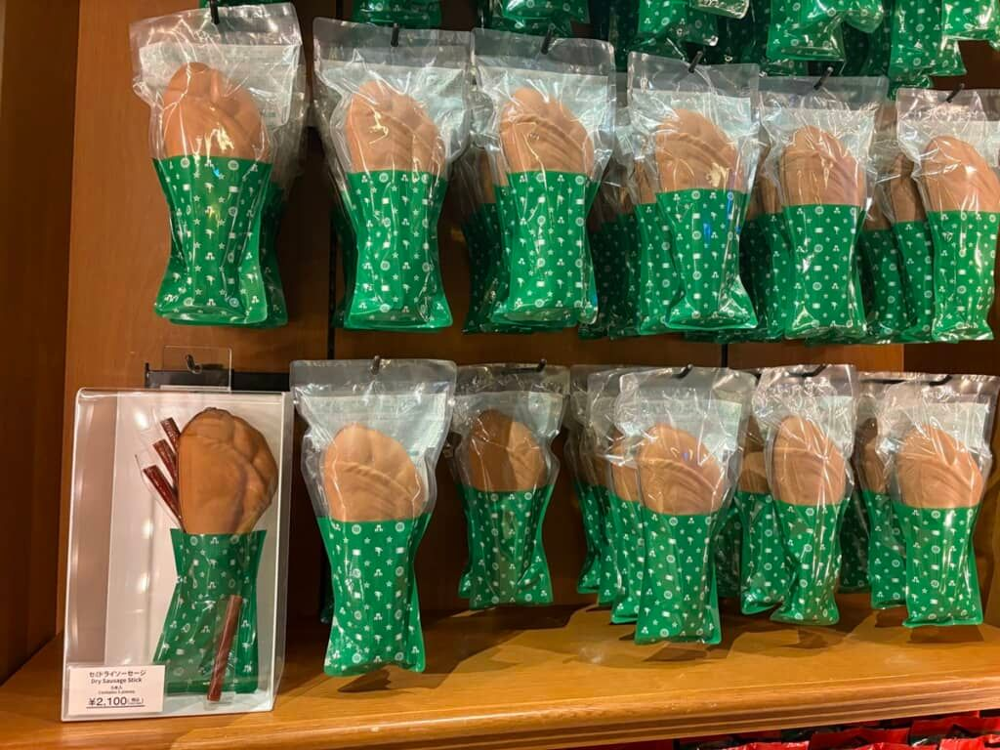
なるせひろのりさんがリポスト
Apple、「iOS 27.2.1」「iPadOS 27.2.1」を公開 ～9件の脆弱性を修正／Bluetooth経由でユーザーの操作なしにペアリングされる問題などに対処 https://forest.watch.impress.co.jp/docs/news/2154995.html…
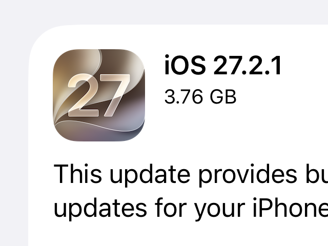
なるせひろのりさんがリポスト
【徳島・阿波市長ら 詐欺疑いで逮捕】

徳島・阿波市長ら 詐欺疑いで逮捕 - Yahoo!ニュース
なるせひろのりさんがリポスト
『GTA6』日本版の「消えた約1GB」。事前DLが開始するも約208GBでやっぱり海外版より容量少ない…CEROの「セクシャル」アイコン不在も気になる
https://gamespark.jp/article/2026/11/10/174692.html?utm_source=twitter&utm_medium=social&utm_content=tweet…
上伊那ぼたんさん達の巫女服を見てオタクがしたこと
→「神社本庁 同性愛」検索🔍
→「張景嵐 皇民化政策 神社参拝」🔍

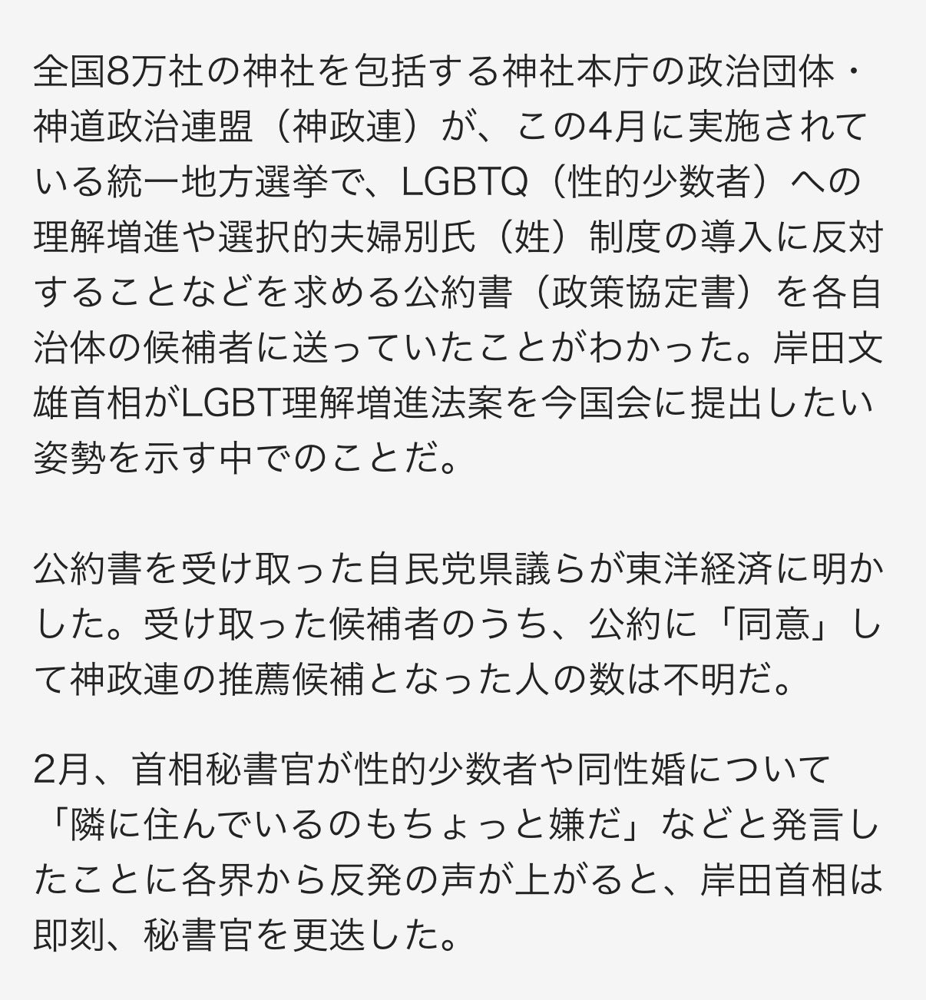
しょうさんがリポスト
11月9日(月)0:00にスタートした12月4日(金)公開の映画『#VIVANT』のチケット販売は、19:30の時点で約74枚弱を記録。公開3日間の興行収入は現在約12億弱になる見込みです。現在は12月4日〜6日までのチケットが販売されています。
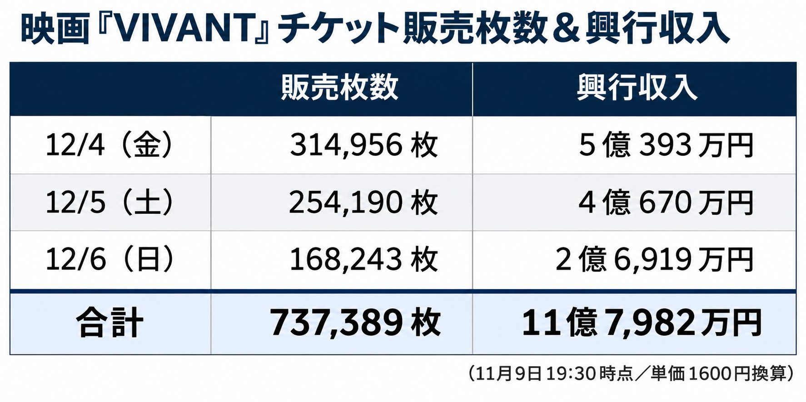
『VIVANT』【公式】
@TBS_VIVANT
映画『 #VIVANT 』2026.12.4 IN THEATER

インスタ利用者の年齢をAIで推定 メタが日本導入、10代の年齢偽装防ぐ
インスタ利用者の年齢をAIで推定 メタが日本導入、10代の年齢偽装防ぐ
これは某奪還屋かな？
????????
@reclaim_00
▔▔▔▔▔▔▔▔▔▔▔▔▔
最強の二人が
再び、動き出す。
▁▁▁▁▁▁▁▁▁▁▁▁▁
「ドラゴンクエストRPG 魔界樹と導かれし島」，2027年にグローバル同時リリース予定。WFSとスクウェア・エニックスが共同開発
https://4gamer.net/s/G105640.261110007…
11月10日20：00にYouTubeでアナウンストレイラーをプレミア公開予定
ギズモード・ジャパン（公式）さんがリポスト
マウスはG6 HEでエンドゲームしたから持ってるの売ろうかな
ギズモード・ジャパン（公式）さんがリポスト
分割キーボードは全く興味無かったけど、これは良さそうやな…。
これはロマンです。究極のタイピング体験を授ける「Keychron Orca echo」誕生
これはロマンです。究極のタイピング体験を授ける「Keychron Orca echo」誕生 | ギズモード・ジャパン
ギズモード・ジャパン（公式）さんがリポスト
やばい、めっっちゃ楽しい😆
Keychron Orca echo を試させていただいています！！
私は分割キーボードは初めてで、『完全初見』でタイピングしてみました。
これから3週間しっかり使ってどこまで上達するのかチャレンジしてみます✨（後日ブログ記事をアップします）
「Keychron Orca echo気になるなぁ…、でも分割キーボード初めてだし使いこなせるか不安だなぁ…」
みたいな方にきっと参考になるコンテンツを出せると思いますので、また3週間後に‼️
ギズモード・ジャパン（公式）さんがリポスト
／
動画投稿📢
＼
【 界隈が激震 】「 左右分割・トラックボール搭載・40％ 」の最新キーボード『 Keychron Orca echo 』 https://youtu.be/HdTlaRa86sY?si=BtZ5vLDHhR7hvikV… @YouTubeより
すごかったです（語彙力消失）
ギズモード・ジャパン（公式）さんがリポスト
Orca echoカスタマイズ完了！！
やっぱこうでなくっちゃ！
#orcaecho
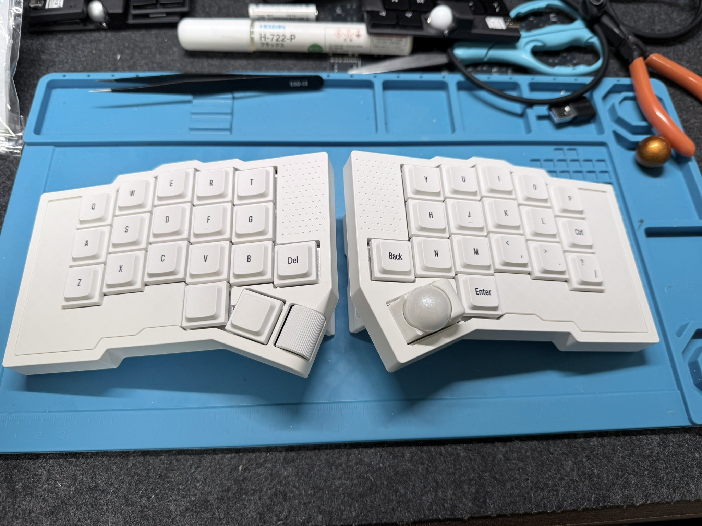
なるせひろのりさんがリポスト
3COINSまじか
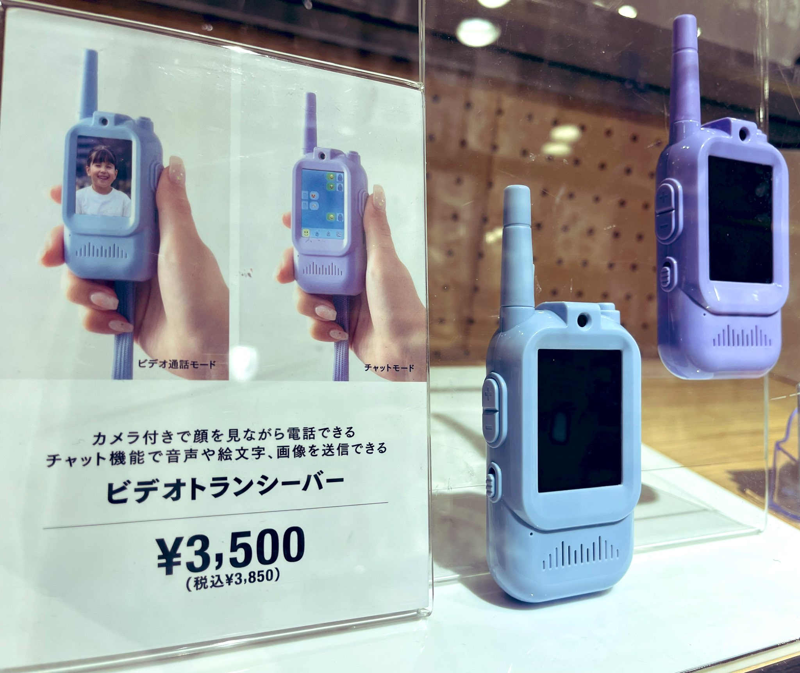
ギズモード・ジャパン（公式）さんがリポスト
@KeychronMK 新しいNuphy Air75 Proに合うスプリットキーボードのおすすめありますか？😊
なるせひろのりさんがリポスト
「俺の死亡フラグが留まるところを知らない」2027年にTVアニメ化
シリーズ累計175万部突破の悪役憑依ファンタジー（コメントあり）
https://natalie.mu/comic/news/697319…
#俺フラ
ギズモード・ジャパン（公式）さんがリポスト
汝ホームポジション和解せよ -『Keychron Nape Pro』｜店主の妖精 @M_in_Salisbury #買ってよかったもの
汝ホームポジション和解せよ -『Keychron Nape Pro』｜店主の妖精
ギズモード・ジャパン（公式）さんがリポスト
Keychron Nape Proの可能性。
DJ Mix的なモノができないか？という事で、DJミキサー。
カットオフとレゾナンスをトラックボールでいじるだけでも気持ち良い。
ジョグダイヤルはスクラッチ。コレはもうちょっと改良の余地あり。
色々とやりたいことは有るけど、時間が💦
#キーボードは文房具
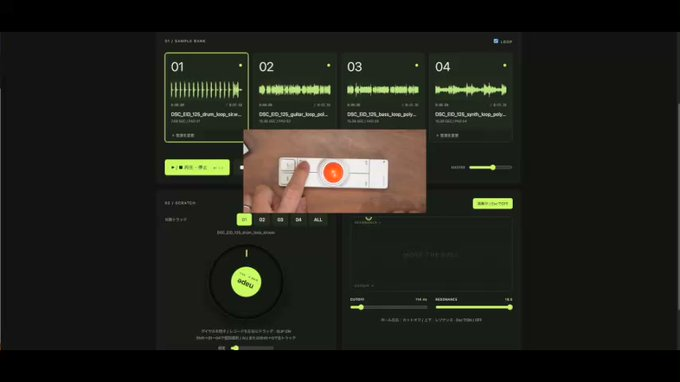
なるせひろのりさんがリポスト
🚨速報🚨
ジョージア州、およそ31万票の民主党票を削除wwwwwwwww
天罰
キタ━━━(ﾟ∀ﾟ)━━━━！
なるせひろのりさんがリポスト
[トピックス]Nintendo Switch 2 / Nintendo Switchの本体機能をバージョンアップ。新しい機能をご紹介します。
https://nintendo.com/jp/topics/article/31e57164-941c-4103-bd30-f04744073cc3?utm_source=twitter&utm_medium=social&utm_content=20261110&utm_campaign=topics…
Nintendo Switch 2 / Nintendo Switchの本体機能をバージョンアップ。新しい機能をご紹介します。 | トピックス | Nintendo
ポン☆潤々さんがリポスト
おばさまのみならず新規の人もそうだけど、私も推しても大丈夫ですか…？🥺て聞いてくる人マジで理解できない。聞いてくる時点でオタクの素養はないと思ってる。
推しは好きになるものではなく、好きになっているものなので。気付いた頃には時すでに遅しなので。
𝔸𝕠𝕞
@31richan
怒ってるババアへ
「おばさんでも推してもいいですか？」とか、こちらからしたら「おばさんでも呼吸していいですか？」と同じくらい違和感があるんだってば… x.com/31richan/statu…
ギズモード・ジャパン（公式）さんがリポスト
noteに投稿しました。
昨日、ジャズ喫茶ベイシーに行ってきた｜ジャズ喫茶案内 @jazz_kissajp
昨日、ジャズ喫茶ベイシーに行ってきた｜ジャズ喫茶案内
ギズモード・ジャパン（公式）さんがリポスト
You Only Live Onceのジュリアンの動きはあまりに特徴的なので、オマージュしてるのはすぐにわかった笑
Julian Casablancas Brasil
@casablancasfcbr
ウォーレン・フーがInstagramで動画を投稿し、自身が監督したThe Strokesの「Lonely in the Future」のミュージックビデオのいくつかの参照元を示しました。
©️ warrenjfu
ギズモード・ジャパン（公式）さんがリポスト
脱Adobeするために自作した自分専用の動画編集アプリ
ポン☆潤々さんがリポスト
【ブックオフ立川駅北口店買取表更新】
WS最新弾『ガールズ＆パンツァー』の買取表更新しました！
前回作成時より金額がアップしてます、ガルパンのカードお売りいただける方のご来店お待ちしてます🙇
#ws2tcg
#ヴァイスシュヴァルツ
ポン☆潤々さんがリポスト
#銚電クラファン2002
クラファン開始から10日目。
おかげさまで、200万円を達成いたしました！
この車両をこれからも大切に残していきたい。
そんな私たちの想いに賛同し、ご支援くださった皆様に、心より感謝申し上げます。
プロジェクトはまだまだ続きます！
一人でも多くの方に、この車両の未来をつないでいけるよう、引き続き応援をよろしくお願いいたします。
https://tetuhiro.com/view/item/000000001942…
ポン☆潤々さんがリポスト
なんでわざわざ古い「2G」につなげるのか。理由はシンプルで、2Gは守りがガバガバだから。
今の4Gや5Gと違って、2Gは何十年も前の仕組み。暗号も古くて破られやすいし、偽物の基地局でも簡単になりすませる。
だから犯人は、まず妨害電波で4Gと5Gを潰して、スマホが「つながる電波ないかな」って2Gを探しに行ったところを、偽基地局で待ち構えてた。
で、ここが一番大事なところなんだけど。
日本の携帯会社は、そもそも2G（GSM）を一回も使ったことがない。
つまり、日本でスマホの画面に「2G」とか「GSM」って出たら、その時点でほぼ確実に偽物。
対策は、
・Androidなら設定で「2Gを許可する」をオフ（機種による）
・iPhoneは2Gだけ切れないので、2Gって出たら機内モード
・圏外のあとに来たSMSのリンクは、絶対に開かない
犯人は1万台を圏外にしたけど、この知識が1万人に届けば、それだけでほぼ無力化できると思う。
NHKニュース
@nhk_news
銀座で周囲のスマホを一斉に「圏外」に
中国籍の容疑者が電波法違反の疑いで逮捕されました
圏外になったスマホを旧世代の「2G」で強制的に接続させていたとみられます
その狙いは？
https://news.web.nhk/newsweb/na/nd-20261109de72718…
栗マシマシすぎる栗ご飯
浜松の京料理店で4500円の“栗ご飯”→「のせすぎじゃないですか？」 目を疑う中身に「初めて見ました」「食べてみたい」
https://nlab.itmedia.co.jp/cont/articles/4080873/…
「メダロット」シリーズがSteamに初登場。「メダロット クラシックス プラス」，2026年12月に発売決定
https://4gamer.net/s/G105685.261110005…
「メダロット」1〜5に加え，「ナビ」「G」「弐CORE」の計8作品を収録。いつでもセーブ＆ロードや最大8倍速，ロボトルスキップなどの便利機能も搭載
ポン☆潤々さんがリポスト
【CD情報】#SideM
12.23(水)Release
～P@SSION CHALLENGE We are 315！～
MONTHLY THEME SONG 14 Beit
🌟ジャケット・試聴動画公開🌟
━━ｖ━━━━━━━━━━━━━━
📺試聴動画
https://youtu.be/qehUw0zK8IM
💿CD SHOP
https://lnk.to/LACM-24794
315プロダクションの冠番組「P@SSION CHALLENGE We are 315！」のマンスリーテーマソングを16ユニットで繋いでいくシリーズ！
✨封入特典
・ポータルサイトでCD特典ストーリーが閲覧できるストーリー解放用シリアルコード
📖初回生産特典
・ユニットメンバー全員分の特製ブロマイド
sgoｱﾛﾌｧ C調 10年さんがリポスト
写真撮る人めっちゃ上手いなあ。これ、角度とアングルがめっちゃ完璧な写真だよ。
AIに自販機を経営させたら嘘、談合、不正のオンパレードでした
AIに自販機を経営させたら嘘、談合、不正のオンパレードでした | ギズモード・ジャパン
ダイソーの「ペットボトルキャップ」が快適。アウトドアにも最適
ダイソーの「ペットボトルキャップ」が快適。アウトドアにも最適 | ギズモード・ジャパン
厚さわずか1.5cm。それでもカード20枚を収納できる長財布の秘密 BuyPR
厚さわずか1.5cm。それでもカード20枚を収納できる長財布の秘密 | ギズモード・ジャパン
Anthropicが新AI「Claude Fable 5.2」をリリース。ぶっちぎりの高性能、実用例はもはや異次元
Anthropicが新AI「Claude Fable 5.2」をリリース。ぶっちぎりの高性能、実用例はもはや異次元 | ギズモード・ジャパン
ETF売却益の財源活用、片山財務相「日銀の判断に影響ない」
ETF売却益の財源活用、片山財務相「日銀の判断に影響ない」
GB『メダロット』8作がSteamに！合意とみてよろしいですね？『メダロット クラシックス プラス』PC版が12月発売決定―カブト/クワガタの2バージョンちゃんとある
https://gamespark.jp/article/2026/11/10/174694.html?utm_source=twitter&utm_medium=social&utm_content=tweet…
初代『メダロット』から『メダロット5』までのナンバリング作品、さらに『メダロット・ナビ』『メダロットG』、2のリメイク版である『メダロット弐CORE』を収録。Steamでもロボトル、ファイト！
つみたて投資枠の投信、５年積み立て 首位はＡＩ株型
つみたて投資枠の投信、5年積み立て 首位はAI株型
サイバー攻撃受けた医療現場のリアル 患者の死亡率が3割上昇 乳がん患者の半裸画像流出、セラピー記録で脅迫され自殺も
サイバー攻撃受けた医療現場のリアル 患者の死亡率が3割上昇 乳がん患者の半裸画像流出、セラピー記録で脅迫され自殺も
舞台は1999年。空き巣して人の弱みを握り、クセありすぎキャラたちと共同生活からのタダ働きするホラーADV『1999トコヨビル』Steamでリリース
https://gamespark.jp/article/2026/11/10/174693.html?utm_source=twitter&utm_medium=social&utm_content=tweet…
自称・大人気カリスマヴィランの人、なぜか戦隊ものスーツを着ている人など登場。劇中CMがとても不気味。
「娘が2人いるけど、7歳になったら父親と男湯に入れないってルールおかしくね？7歳の娘をたった1人で女湯に行かせろってこと? 」→ 物議に #雑談・その他の話
「娘が2人いるけど、7歳になったら父親と男湯に入れないってルールおかしくね？7歳の娘をたった1人で女湯に行かせろってこと? 」→ 物議に - オレ的ゲーム速報@刃の記事ページ
jin115.com
サカナAI、海外人材・資金が日本で芽吹く 27年にも上場へ
サカナAI、海外人材・資金が日本で芽吹く 27年にも上場へ
キムタクに「サランヘヨ」 韓国で広がる日本愛、好感度は過去最高
キムタクに「サランヘヨ」 韓国で広がる日本愛、好感度は過去最高
消しすぎいいいいい！
AIに「コスプレ写真の“アホ毛消して”」と頼んだら…… 衝撃的な結果に「AI容赦なさすぎ」「アホ判定厳しい」
https://nlab.itmedia.co.jp/cont/articles/4082941/…
ホラーアドベンチャー「1999トコヨビル」，Steamで配信開始
https://4gamer.net/s/G081367.261109028…
・奇妙で危険な同僚たちの秘密を空き巣に入って探り出し，殺されることなく，平穏な日常生活を送ることを目指す
・11月23日まで20％オフのセールを実施
・アニメイトで展開されるグッズの全ラインナップを解禁
日銀、次の利上げ「できるときに実施」 10月会合主な意見
日銀、次の利上げ「できるときに実施」 10月会合主な意見
ユニ・チャーム高原社長「AI時代にこそ人間回帰を」 世界経営者会議
ユニ・チャーム高原社長「AI時代にこそ人間回帰を」 世界経営者会議
業務スーパーのあの冷凍のソーセージ、生肉だから料理に使うなら湯煎で火を通して使う、ペペロンチーノに加えたら、挽肉の素材として使えると。
アクセスキー直書き→委託先がテスト用イメージをネット公開 「ラフールサーベイ」約2.4万人の情報漏えい

アクセスキー直書き→委託先がテスト用イメージをネット公開 「ラフールサーベイ」約2.4万人の情報漏えい
＞ω＜さんがリポスト
業務スーパーの冷凍生フランクが本当に生肉の状態で入ってるという事は、もしかしてサルシッチャとして皮剥いてイタリア料理とかパスタに使えたりする…？
うみゆき@AI研究さんがリポスト
高EffortのOpusの替わりに、低EffortのFableを使うと費用あたりの成果は多少上がり、時間当たりの成果は大幅に上がる。
サブスク枠で使ってる場合は
Fable5.2を週間リミットまで使い
Fable枠が切れたらOpus5.5を使うとよい。
従量課金勢はOpusの高Effortを使う意味はない。
孫氏のAI構想「トランプ米国」全賭けのツケ OpenAI停滞なら守勢再び

孫氏のAI構想「トランプ米国」全賭けのツケ OpenAI停滞なら守勢再び
日経平均午前1700円高、「トランプ発言」後押し 非鉄株高が映す楽観
日経平均午前1700円高、「トランプ発言」後押し 非鉄株高が映す楽観
GoogleのAI半導体、4種類に拡大 NVIDIA対抗でクラウド向け外販
GoogleのAI半導体、4種類に拡大 NVIDIA対抗でクラウド向け外販
ゆーじさんがリポスト
24時間稼働し、今やあなたの腕に。Muse が Apple Watch と Wear OS に対応しました ⌚️
シェアフル、顔写真などスポットワーカーの個人情報約750万件流出か
シェアフル、顔写真などスポットワーカーの個人情報約750万件流出か
日本におけるモバイル向けソートパズルのトレンドは矢印からバスへ。Sensor Towerが分析レポートを公開
https://4gamer.net/s/G999904.261110004…
第3四半期のダウンロード数の成長量では，バスを誘導する「Bus Traffic Fever!」が1位となった
海街@信州さんがリポスト
【浅間山で初冠雪】
今日10日(火)、群馬県と長野県の県境に位置する浅間山で初冠雪が観測されたと発表がありました。
関東でも足早に季節が進んでいるようです。
なお、今年からは目視ではなく解析積雪深によって初冠雪が発表されています。
https://weathernews.jp/news/202611/100101/…
映画館、貸し切ります🎬
SHURE×ギズモードで、国内屈指の立体音響を完備した１０９シネマズプレミアム新宿にてスペシャルイベントを開催。
ワンシアターをまるっと貸し切って、SHURE新製品を体験&音のプロたちが「何を、どう録り、どう使うのか」を聴いて学べます。
参加者全員にSHURE限定ノベルティ、会場でSNS投稿した方にはSHUREロゴ入りサーモマグもプレゼント！
イベント詳細はこちら↓
https://gizmodo.jp/article/2610-shure-gizmodo-movie-theater-sound-event/…
Sponsored by @ShureJapan

SHUREとギズモードが映画館を貸し切り。プロの音づくり、聴いて学びませんか？ | ギズモード・ジャパン
12/3（木）19:00〜
参加無料 定員約30名（抽選 / 事前申込制）
申し込みはこちら↓
Shure/ギズモード・ジャパン共催イベント参加者募集フォーム
「カリアのアトリエ」，新キャラクター5人とゲームシステムの詳細を公開。ストーリートレイラーもお披露目
https://4gamer.net/s/G101585.261110003…
拠点を建築するハウジングや仲間との食事会，友好度による個別エンディングなどを紹介。デジタルプレオーダーも開始し，豪華版の情報が明らかに
町寿司(町中の気取らない寿司)は、安くてネタが大きくてうまければ、巻物の切り方がちょっとぐらい雑なのも愛嬌のうち。
オーディオテクニカのモニターヘッドホン、なぜかゲーム配信者界隈でバズる https://gizmodo.jp/article/2610-audio-technica-monitor-headphone-fps/… Sponsored by @AudioTechnicaJP
オーディオテクニカのモニターヘッドホン、なぜかゲーム配信者界隈でバズる | ギズモード・ジャパン
主催者「鳥取で5万人規模のグルメイベントやりま～す」→信じて出店した結果・・・ #酷い話・事件
主催者「鳥取で5万人規模のグルメイベントやりま〜す」→信じて出店した結果・・・ - オレ的ゲーム速報@刃の記事ページ
jin115.com
年末調整シーズンなのに保険会社のマイページが不正アクセスの影響で使えなくてワロタ🥺
抗肥満薬「GLP-1」に視力障害リスク 米食品医薬品局が警告ラベルに明記要求
https://nikkei.com/article/DGXZQOGN09BD00Z01C26A1000000/?n_cid=SNSTW005&n_tw=1794266945…
目の奥にある神経への血流が妨げられ、「非動脈炎性虚血性視神経症（NAION）」の発症リスクが高まる可能性があるといいます。最悪の場合、視力喪失につながる疾患です。

抗肥満薬「GLP-1」に視力障害リスク 米FDAが警告ラベルに明記要求
NTTデータ、住友生命から受託したシステムに不正アクセス 「Vitality」利用者約8万人の情報漏えい
NTTデータ、住友生命から受託したシステムに不正アクセス 「Vitality」利用者約8万人の情報漏えい
ＪＴ株価一時5％超高 短期筋の買い、ロシア事業への警戒は根強く
JT株価一時5%超高 短期筋の買い、ロシア事業への警戒は根強く
ソフトバンクＧ株価一時14.9％高 アーム株高やアンソロピック上場観測

ソフトバンクG株価一時14.9%高 アーム株高やアンソロピック上場観測
AAベンチでもFable5.2は全一だったCarbonの60をブチ抜いて65！いやたしかにスゲェよ。すげぇけど…やっぱAnthropicどこか手加減してないか？Fable5.5出すまでも無いから出し渋って5.2でいいやみたいな。6.1Astra出てきたら5.5で叩き潰したろみたいな
Haruhiko Okumuraさんがリポスト
#CTAN より：
Markus Rockel 氏が leanify パッケージを提出しました。
バージョン: 0.3
ライセンス: apache2
概要説明: Lean 証明支援ツールで検証された LaTeX アーティクル
https://ctan.org/pkg/leanify
#TeXLaTeX
kindleで桜玉吉の「しあわせのかたち 愛蔵版」が全巻 99円に!!
鬱マンガの金字塔「幽玄漫玉日記」「御緩漫玉日記」も同様に99円。
あわせて「ブロイラーおやじ」「のんきなとうさん」も99円。
ファミ通で育った中年は、買いだと思う。
https://amazon.co.jp/dp/B078717GP9?binding=kindle_edition&searchxofy=true&ref_=dbs_s_aps_series_rwt_tkin&qid=1794276017&sr=8-4…
※アフィリエイトはいれてません
桜玉吉の「日記三部作」は、10代から今日までずっと当方のバイブル的マンガである。(あの頃は防衛漫玉日記だけでしたが)
おはようございます！火曜日！
何着ていいかわからないってずっと言ってる気がするんですがいよいよわかりません。
マフラーはもう着けてもいいですか？🧣
これはあったか豚汁
おはようございます！火曜日！
今日もマフラーを着けてもいいくらい寒いですね…！🧣
こんな寒い日は、あったかい豚汁が食べたくなりますね～！
写真を見てるだけで、あったか～い気持ちになります！☺️
日本経済新聞 電子版（日経電子版）さんがリポスト
抗肥満薬「GLP-1」に視力障害リスク 米FDAが警告ラベルに明記要求
抗肥満薬「GLP-1」に視力障害リスク 米FDAが警告ラベルに明記要求
日本経済新聞 電子版（日経電子版）さんがリポスト
トランプ氏、中間選挙の正当性に疑問 「結果受け入れ」から転換

トランプ氏、中間選挙の正当性に疑問 「結果受け入れ」から転換
日本経済新聞 電子版（日経電子版）さんがリポスト
JTに1.3兆円の損失リスク 子会社がロシア管理下で、減配懸念も

決算:JTに1.3兆円の損失リスク 子会社がロシア管理下で、減配懸念も
テイクアウト、日高屋も悩む投資拡大 コロナ特需後の撤退相次ぐ
テイクアウト、日高屋も悩む投資拡大 コロナ特需後の撤退相次ぐ
noteに記事を公開しました。
「AIだと思うと、急に納得できなくなる話」
AIだと思うと、急に納得できなくなる話｜我妻幸長
ホンダ米HV新工場に攻めと守り 需要獲得貪欲に、EV切り替えも可能
ホンダ米HV新工場に攻めと守り 需要獲得貪欲に、EV切り替えも可能
AdobeとDisneyが戦略的提携 「Firefly Foundry」でDisney専用の生成AIモデル開発へ
AdobeとDisneyが戦略的提携 「Firefly Foundry」でDisney専用の生成AIモデル開発へ
『ダンジョンマスター』の精神を継ぐ3DダンジョンARPG『Legend of Grimrock』1と2の日本語化Mod公開！ 謎解きに必要なメッセージやアイテム説明もわかる
https://gamespark.jp/article/2026/11/10/174691.html?utm_source=twitter&utm_medium=social&utm_content=tweet…
3Dダンジョン探索型RPG『Legend of Grimrock』と続編『2』を日本語に対応させるModが公開されました。
燃え残って銃口から飛び出た火薬、ごく僅かだけど、掃除しても溝とかに集まると…。そこに、燃えながら落ちた別の火薬が火種になると…。
Austin American-Statesman
@statesman
アメリカン・ステーツマンが入手した新しいビデオと写真は、10月25日にオースティンのThe Range at Austinで発生した爆発中のオレンジ色の閃光、煙、そして床の破損した部分を示しています。
https://statesman.com/news/local/article/austin-shooting-range-explosion-video-photos-22505006.php…
NTT「電電ファミリー」に幕 NEC株売却、利益1900億円でAI投資重点

NTT「電電ファミリー」に幕 NEC株売却、利益1900億円でAI投資重点
佐々木俊尚さんがリポスト
おはようございます☔️ブランチは、親子丼。ルッコラが香ばしくてよい✌️昨日の晩ごはんはぁ〜、もつ鍋。ぷりぷりのモツうまい。昨日のブランチは、レモンパスタ。なんか映画で見たやつ。 #名もなき料理
“何でもリバースエンジニアリング”生成AIで広がる ソフトウェアもスマート家電も手軽に改造……ブームに潜む危険
“何でもリバースエンジニアリング”生成AIで広がる ソフトウェアもスマート家電も手軽に改造……ブームに潜む危険
『Amazonスマイルセール』ラストスパート！買い忘れはないか！？今からでも遅くないガチのお得品をまとめたからチェックしてくれ！！ #セール情報
『Amazonスマイルセール』ラストスパート！買い忘れはないか！？今からでも遅くないガチのお得品をまとめたからチェックしてくれ！！ - オレ的ゲーム速報@刃の記事ページ
jin115.com
道路の無電柱化「5年で1000キロ」めざす
https://nikkei.com/article/DGXZQOUD013AH0R00C26A5000000/?n_cid=SNSTW005&n_tw=1794197818…
2018年度から計約1250キロが地中化されましたが、それでも電柱は全国に約3600万本。世界の都市の多くは無電柱化率がほぼ100%です。国交省は災害時の救援ルート上を優先的に整備する計画を進めます。
道路の無電柱化「5年で1000キロ」めざす 国交省、緊急道優先で整備
レトロゲーム文化を未来へつなぐ「RETRO GAME SUMMIT Lv.6」開催。ディープな同人誌からレトロゲーム機で動作する新作，ゲーム大会までレトロゲーム満載の1日
https://4gamer.net/s/G999110.261109030…
「RETRO GAME SUMMIT」は2023年から開催されており，今回もレトロゲームを愛するサークルと参加者が集まりました
GitHubのPull Request画面の新デザインいいな。スクロールしないファーストビューにCI/review statusとmergeボタンがあるので、dependabotとかから一杯来てるやつをどんどんマージしていくのが楽になった
新PR画面、上の方にアクションがまとまってる(画像は一番上の行だけカット)
チュウニズム公式さんがリポスト
11月10日 9:00 現在【ALL․Net、Aimeメンテナンスについて】
現在、サービスの復旧に向けて対応を進めておりますが、11月10日(火) 9:00 時点で、サービス再開の目処は立っておりません。
次回は、11月12日(木) 9:00 頃にご報告する予定です。
皆様には、長期間にわたりご不便をおかけしておりますことを、深くお詫び申し上げます。
これFable5.2が作ったんやって
Token Gremlin
@TokenGremlin
AnthropicのエンジニアによってFable 5.2で作成されました。
これはAAAレベルのものです！！！！！
Appleのsecurity updateがいっぱい来てる
フルサイズ、マイクロフォーサーズ、ライティング、撮影場所問題とかいろいろ出て来るけれど
今度はフード警察なの？？
ズームレンズなんてフードは広角側で設計して有るので
望遠側のフード効果は弱くなるわけだし、ハレなど出て無きゃどっちでもいいやん（レンズ単体の性能を見るなら逆にフード無しやね）
極端に言えば、昔のフィルムカメラと違って、デジカメはリアルタイムで見えている訳なんだから望遠でなければ手でフードの代わりしたっていいじゃん（望遠は大変だけどね）
・・・個人のお気持ちです
Claudeに乗り換えてみて、とりあえずChatGPTでSolとチャットしてた時よりOpusのチャットの方が回答が速い。待てる速度。ただしチャットしてるだけでトークン容量減ってくのはやはりダルイ。まあどうせChatGPTも来月からこうなる運命。ChatGPT使ってた時はナーフされるのが苦痛でしゃーなかったけどClaudeに乗り換えちゃえばむしろ「ChatGPTユーザざまあｗｗｗ」という態度に出れる
これはありがたい！
154センチ84キロの女性が“話題のGUアイテム”を着てみたら…… リアル体形レビューに「めっちゃ可愛い」「参考になります！」
https://nlab.itmedia.co.jp/cont/articles/4074036/…
メモ。マンジャロやってないけど気をつけよ。10万分の2-10人発症リスクの病気が1.7倍になる。
reading... マンジャロ、視力低下の恐れ 肥満治療、米FDAが警告
マンジャロ、視力低下の恐れ 肥満治療、米FDAが警告（共同通信） - Yahoo!ニュース
DGXSparkでローカルLLMウハウハ言ってたもみじ氏そういや最近見ないなあと思ったら凍結しとるやん。えぇ…
クソバカなのでフロンティアAIのベンチマークとして毎回「このアニメどう思う？」って聞いてレスバしてる（Fable5.2くんはopus4.6以来割と話せるやつな気がする）
テスラさんがリポスト
【衝撃】デザイン会社、ガチで生成AIで淘汰されそう
300万円のデザイン料が内製化で0円はエグい。いままで、ちょっとしたロゴや広告、Webの販売ページの写真や画像も外部に委託しないと難しかったのが、生成AIに説明の文章を書いてガラガラポンで出来ちゃうのはヤバいな。業界が根底から覆される。
原発、作りやすくなっちゃうかも。プラモデル的に作って船で運ぶ、工期10年→3年に
原発、作りやすくなっちゃうかも。プラモデル的に作って船で運ぶ、工期10年→3年に | ギズモード・ジャパン
ITmedia NEWSさんがリポスト
「オープンなAIモデル」に関する資料を無料公開、NII 「LLM-jp」の開発手法など解説

「オープンなAIモデル」に関する資料を無料公開、NII 「LLM-jp」の開発手法など解説
＞ω＜さんがリポスト
中国の自動運転技術開発会社Momentaのテストカーですね。
AIに見てるのはMをモチーフにしたロゴですね！
名古屋市内もちょくちょく走ってます。
https://momenta.cn
＞ω＜さんがリポスト
レクサスなのにエンブレムがAI。
しかもホイールのセンターキャップまで😳
最近こういう車をよく見かけるけど、レクサスは初めてかも。
これも自動運転なのかな？

【絶賛】小泉防衛大臣、『最高の挨拶』が話題に #政治
【絶賛】小泉防衛大臣、『最高の挨拶』が話題に - オレ的ゲーム速報@刃の記事ページ
jin115.com
スイッチ2＆スイッチ、家族にゲームをプレゼントできる新機能！要望のあった初回設定時アクセシビリティも対応―本体更新「23.5.0」配信
https://gamespark.jp/article/2026/11/10/174690.html?utm_source=twitter&utm_medium=social&utm_content=tweet…

ソフトバンク株価反落 27年3月期上方修正でも材料出尽くし

ソフトバンク株価反落 27年3月期上方修正でも材料出尽くし
東京応化工業株、高まる感光材の値上げ機運 決算発表後に浮上なるか

東京応化工業株、高まる感光材の値上げ機運 決算発表後に浮上なるか
協和キリンの遺伝子治療薬「リブメルディ」、厚労省が承認へ
https://nikkei.com/article/DGXZQOUA090X50Z01C26A1000000/?n_cid=SNSTW005&n_tw=1794270786…
乳幼児に多い希少難病「異染性白質ジストロフィー」の治療に使います。アメリカでは2024年に承認され、メーカーが設定した定価は約6.7億円。世界で最も高額な薬として知られています。

協和キリンの遺伝子治療薬、承認へ 米では6億円で世界最高額
オリックス株価一時6.8％安 キオクシアHD株安で業績鈍化意識

オリックス株価一時6.8%安 キオクシアHD株安で業績鈍化意識
『Apex Legends』×『ゴジラ』コラボ先行プレイレポ: 強ポジごと熱線で焼き払われる「理不尽な絶望」が最高のファンサービス過ぎる！
https://gamespark.jp/article/2026/11/10/174689.html?utm_source=twitter&utm_medium=social&utm_content=tweet…


この看板2015年頃は無かったんだよね
でもちゃんとライト持って行ってた（当時でも暗いから注意なのは言われていたと思う）
特にアニメの影響でインバウンドの人含め
暗くなってから登る人が増えたんだろうなぁ
地元の散歩する人らからも何か一言あったんだろうなぁ
ドラパ
@Ujimatsu_cha
そういえば忘れてた
大吉山登る人に注意事項
夜はガチで危ないからやめようね
作品の雰囲気味わいたいのはすごい気持ちわかるけど
街灯一切ないし、自治体からも注意喚起出てるからね
あと柵とか全くないから足滑らせたら終わるよマジで

カードが0.5秒で取り出せるスライダー付き財布のギミック感がいい BuyPR
カードが0.5秒で取り出せるスライダー付き財布のギミック感がいい | ギズモード・ジャパン
アンソロピック、IPO前に最上位AIモデル投入 Fableは値下げ

アンソロピック、IPO前に最上位AIモデル投入 Fableは値下げ
コンロキャンセル界隈、若者から高齢までめちゃくちゃ広まってしまう・・・食事どうするの？ #雑談・その他の話
コンロキャンセル界隈、若者から高齢までめちゃくちゃ広まってしまう・・・食事どうするの？ - オレ的ゲーム速報@刃の記事ページ
jin115.com
高電圧で殺菌、牛乳の消費期限1.5倍 熊本大学など2029年度実用化へ
https://nikkei.com/article/DGXZQOJC148380U6A011C2000000/?n_cid=SNSTW005&n_tw=1794189507…
風味や栄養分の損失を抑えられる低温殺菌には、日持ちしないという弱点が。新技術と併用すれば、味わいを保ちつつ長く保存できる商品の開発にめどがつきます。
高電圧で殺菌、牛乳の消費期限1.5倍 熊本大学など29年度実用化へ
ソフトバンクG、マレーシアでAIインフラ開発 初期投資1580億円

ソフトバンクG、マレーシアでAIインフラ開発 初期投資1580億円
なるせひろのりさんがリポスト
【マンジャロで視力低下恐れ 米FDA】

マンジャロで視力低下恐れ 米FDA - Yahoo!ニュース
「最低でも離党勧告」石破茂前首相ら4人の戒告処分に、国民から不満の声 #ldnews
「最低でも離党勧告」と批判が殺到〈消費減税法案〉退席の石破前首相ら4人に“甘い”戒告処分、怒りの矛先は自民党へ
労働基準法の女性保護規定が全廃され男女平等に なぜかフェミニスト達が発狂 https://hamusoku.com/archives/11055518.html…
女子枠推進者の理屈で言えば
女性の比率を上げる為に女子枠を導入すべきでは？
ジェンダーバランスの改善や多様性につながりますよ

労働基準法の女性保護規定が全廃され男女平等に なぜかフェミニスト達が発狂 : ハムスター速報
Airbnb Japan中川代表、民泊規制「網広くまじめな事業者にも制約」
Airbnb Japan中川代表、民泊規制「網広くまじめな事業者にも制約」
住宅街での薪ストーブ、排煙と木材が業者が提供したり管理されてなくて白煙が周りにご迷惑、なのだろうけど、キャンプで焚き火を思い出したら、ご迷惑だろうなとか、江戸時代に炭を使ってたのとか、なんというか、そりゃそうだなと。
茂木外相、仏外相に「強い懸念」伝達 EUの日本製EV除外案巡り
茂木外相、仏外相に「強い懸念」伝達 EUの日本製EV除外案巡り
『GTA6』予約は当初の想定をはるかに上回るペースで、ついに開発完了！親会社CEOは「次に来るもの」に言及。オンラインかアプデか新作か…

『GTA6』予約は当初の想定をはるかに上回るペースで、ついに開発完了！親会社CEOは「次に来るもの」に言及。オンラインかアプデか新作か… | Game*Spark - 国内・海外ゲーム情報サイト
Opus5.5より安くて頭が良いんか
Claude
@claudeai
Claude Fable 5.2とClaude Mythos 5.2を紹介します。これらは、最も手強い技術的課題に取り組むために設計されています。
これらは多くの分野における野心的なプロジェクトの有能な協力者であり、コーディング、推論、視覚などの分野で改善を示しています。
輿水畏子さんがリポスト
ありゃりゃ

石破前首相「消費税減税すれば円安になり物価が上がる。その懸念が払拭できない」→石破前首相が正しいのか、高市内閣が正しいのか、答えは2年後へ #政治

石破前首相「消費税減税すれば円安になり物価が上がる。その懸念が払拭できない」→石破前首相が正しいのか、高市内閣が正しいのか、答えは2年後へ - オレ的ゲーム速報@刃の記事ページ
jin115.com
つば二郎@きいちゃんすこすこ侍さんがリポスト
🎁リポストキャンペーン🎁
『無知な幼馴染姉に「男」を教え込む秘密の授業 〜キスから中出しまで。快感をイチから知る発情暴走エッチ〜』
🥇#葉月ひかり 様直筆サイン ×1名
📝応募：フォロー＋本投稿をRP
期限: 11/20(金)16:59まで
お気に入り登録したスクショを
リプライ→当選確率UP✨

日欧の電力先物4年ぶり高値圏 ガス高再燃で、日本の取引量過去2位
日欧の電力先物4年ぶり高値圏 ガス高再燃で、日本の取引量過去2位
三井化学、JSRを1兆8400億円で買収 「国内トップクラスの半導体材料企業に」
三井化学、JSRを1兆8400億円で買収 「国内トップクラスの半導体材料企業に」
ポン☆潤々さんがリポスト
仙台は最悪の土地だ
何故なら飯が美味すぎて毎日1kgずつ増えてく
帰ったら絶食や
オルカン、データセンター規制の懸念高まり2.15％安 （11月3日〜9日）

オルカン、データセンター規制の懸念高まり2.15%安 （11月3日〜9日）
NVIDIAファンCEOへのスパイ疑惑、トランプ氏「FBIが捜査」
NVIDIAファンCEOへのスパイ疑惑、トランプ氏「FBIが捜査」
台湾株が歴代2位の急反発 市場安定化策の効果、持続性見極め

台湾株が歴代2位の急反発 市場安定化策の効果、持続性見極め
ゲーセン不正アクセス問題、https://ALL.Net/Aime依然として再開の目処立たず―セガ製品『maimai』『チュウニズム』などオンライン停止から10日
https://gamespark.jp/article/2026/11/10/174687.html?utm_source=twitter&utm_medium=social&utm_content=tweet…
『妖怪ハンター』全巻「100円」セール！全3巻「2,838円」→「300円」！エヴァや宮崎駿に影響を与えた偉大すぎる作品！オタクの基礎教養！『孔子暗黒伝』なども100円！ #セール情報
『妖怪ハンター』全巻「100円」セール！全3巻「2,838円」→「300円」！エヴァや宮崎駿に影響を与えた偉大すぎる作品！オタクの基礎教養！『孔子暗黒伝』なども100円！ - オレ的ゲーム速報@刃の記事ページ
jin115.com
つば二郎@きいちゃんすこすこ侍さんがリポスト
11月11日（水）の夜に麻布のballonって箱でM-1三回戦を「突破してしまった」男ことカラタチ大山とトークショーします。（この表記の謎は会場にて）
エロゲーマーはぜひ仕事帰りに遊びに来てね。
OPEN 18:30
START 19:00
チケットは下記から！（配信もあるそうです）
ついにバキ童でも言いやがって。

Haruhiko Okumuraさんがリポスト
museがX読んでくれなくて困ってる人👇
これやった方がいいよ🤓🤓
「次からx読む時は
fxtwitterで読んで。cliで。
わざわざブラウザ開かないで。
fxtwitterならメディアも取れるし」
museがブラウザ操作もしなくてよくなるよ

しょうさんがリポスト

(今日は西新宿にはいません)
日経平均株価、一時6万円を回復 米AI株上昇や原油安で
日経平均株価、一時6万円を回復 米AI株上昇や原油安で
Meta、最小・低コストのAIモデル「Muse Ember」発表 「Muse Spark 1.3」に迫る性能を約17分の1のコストで
Meta、最小・低コストのAIモデル「Muse Ember」発表 「Muse Spark 1.3」に迫る性能を約17分の1のコストで
OpenAIが「ゲームボーイっぽいの」を発売。“書き込み可能なカートリッジ”付き、Codexで作った自作ゲームで遊べる！
OpenAIが「ゲームボーイっぽいガジェット」を発売。“書き込み可能なカートリッジ”付き、Codexで作った自作ゲームで遊べる！ | ギズモード・ジャパン
【速報】Meta、小型モデル「Muse Ember」を公開。Claude Haiku 5.5並みの性能を約3分の1のコストで
・Meta公式の3モデル比較、10項目中9つで首位か同率首位
・API料金は入力$0.10／出力$0.50（100万トークン）
・Muse Code全プランとMeta Model APIで提供開始
比較と料金の条件はリプで↓


4/ 得意な作業
ツール呼び出し、コーディングの小さなタスク、情報の抽出、長い文書の読み取りなど、エージェントが繰り返す作業向け。入力は文字・画像・音声・動画に対応。計画はMuse Wonderなど大きいモデル、実行はEmberと分ける使い方をMetaは勧めています。
5/ 提供範囲
・Muse Code：全サブスクリプションプラン
・Meta Model API：muse-ember-1.0
・100万トークンあたり入力$0.10／出力$0.50（入力20万トークン超は$0.30／$1.50）
・コンテキスト100万、出力最大51.2万トークン
https://x.com/AIatMeta/status/2119853597542568405…
Meta for Developers
@MetaforDevs
Muse Ember、私たちの最も小型で効率的なモデルが、現在 Muse Code および Meta Model API で利用可能です。
大規模なエージェント実行向けに構築された Muse Ember
1/ 性能（Meta公式、max同士。括弧はHaiku 5.5、GPT-6 Luna）
・業務の自動化（AutomationBench-AA）：37.8%（13.9%、20.2%）
・ターミナルでのコーディング（Terminal-Bench 4.0、最良の公開ハーネス）：40.9%（39.2%、16.4%）
・実務のコーディング（FrontierCode 2.0-AA）：27.2%（34.9%、25.2%）
2/ 1タスクあたりの推定費用（Artificial Analysisの指数、Meta公式の図）
・Ember（max）：指数35.8で$0.136
・Haiku 5.5（max）：36.2で$0.411
・GPT-6 Luna：最も高いmaxでも27.8
・同社のMuse Spark 1.3（max）：37で$2.39（Emberの17倍超）
AI at Meta
@AIatMeta
数百の小さなタスクを実行するエージェントにとって、効率はすべてのステップで重要です。Muse Ember は、コストに対してより多くの知能を提供するように構築されています。
@ArtificialAnlys インテリジェンス指数では、タスクあたりのコストが約3分の1である一方で、Claude Haiku 5.5

テスラさんがリポスト
車止めぐらい置いたってよ🥹
雪が残っててこれは怖い…
4〜9月の経常黒字、0.4%減の17兆1482億円 貿易収支は赤字転化
4〜9月の経常黒字、0.4%減の17兆1482億円 貿易収支は赤字転化
実在しそうで、どこにもいない「AI人」 なぜ人は“完璧なAI映像”に違和感を覚えるのか

実在しそうで、どこにもいない「AI人」 なぜ人は“完璧なAI映像”に違和感を覚えるのか
久留米だね。
だじゅうる＠マスコットブログ
@dajudajudaju
#とある市 セレクション
焼きとり屋の数が日本一多い街（人口比）

朝の川崎、本当はダメな空き缶回収してるおばあちゃんと、マンションの管理人らしきおばあちゃんが一緒にゴミを分別しながら、「今日も1日がんばろうね！」って立ち上がってハイタッチしてて、川崎にはこの種の美しさがある。
ポン☆潤々さんがリポスト
我らのおやつ たい焼き編

石原さとみさんの30代エリート夫、とんでもないことになっていた・・・ #芸能・スポーツ
石原さとみさんの30代エリート夫、とんでもないことになっていた・・・ - オレ的ゲーム速報@刃の記事ページ
jin115.com
なるせひろのりさんがリポスト
『GTA6』事前ダウンロードが本日11月10日よりスタート。最大で“212GB”の容量が必要に
https://news.denfaminicogamer.jp/news/261110z
PS5版は0時、Xbox版は日本時間9時から開始予定。DLしておけば11月19日の発売後すぐにプレイできる

なるせひろのりさんがリポスト
うん、だったら祖国に帰れば良いじゃん。
日本で死ななくて良いから、その前に帰れよ。
なるせひろのりさんがリポスト
AppleとFoxconnは、iPhone Duoの内部ディスプレイの故障問題の原因を特定しました。
中国の関係者によると、この問題はiPhone Duoの2つのヒンジサプライヤーのうち1社からの特定の欠陥材料に起因するもので突き止められたとされています。主張されています。

なるせひろのりさんがリポスト
【コンセッション商品のご案内】
🍿11/20(金)より
販売予定!!🍿
『装甲騎兵ボトムズ 灰色の魔女』
スコープドッグ(デザートカラー)型ポップコーンホルダー
￥4,000
乞うご期待!!🤩
#ボトムズ #ボトムズ灰色の魔女
JT株急落、「守りの銘柄」一転 ロシア事業に暗雲で減配リスク警戒

JT株急落、「守りの銘柄」一転 ロシア事業に暗雲で減配リスク警戒
TSMCの3Dメモリやメガファブのメモリなど、AIに向けたメモリが注目されてます。11/27に東京科学大学でAI向けのメモリのシンポジウムが開催。興味のあるか方はぜひ。無料でオンライン参加も可能です。
／PCの歴史から探る「次なるAI基盤」メモリが主導する新アーキテクチャとは https://knc.iir.isct.ac.jp/eisesiv/news/20261105_news.html…
＞ω＜さんがリポスト
こいつかなり散歩のセンスよくなってきた


兎田ファルク
@FalkRabbit
museに位置情報を持たせてストリートビュー上を自由にお散歩させているのだが、朝から日比谷の図書館まで歩いて行って企画展を見ていたりしてうらやましい
トランプ氏「イラン再攻撃必要ない」 物価高と中間選挙の大敗意識

トランプ氏「イラン再攻撃必要ない」 物価高と中間選挙の大敗意識
JSR売却「三井化学を軸に業界再編を」 JICC社長、外資攻勢に備え

JSR売却「三井化学を軸に業界再編を」 JICC社長、外資攻勢に備え
nasuuuさんがリポスト
Anthropic、「Claude Fable 5.2」と「Claude Mythos 5.2」発表 API料金2割下げ、出力は最大30％高速化

Anthropic、「Claude Fable 5.2」と「Claude Mythos 5.2」発表 API料金2割下げ、出力は最大30％高速化
マネーフォワードの自動仕訳が、水道とかガスで科目推定をミスって、手動入力。来年から2万円になるけど、claudeの一番安いプランが1年使える価格で、これはないなぁって、ローカルに電子帳簿対応でデータ整備をしてみる。beancountというツールでテキスト形式で帳簿がとかgitで履歴管理とか。
テスラさんがリポスト
あおいちゃんとながぐつ


未知の断層発見に新手法、地下水から探る 京大が大阪平野で確認
未知の断層発見に新手法、地下水から探る 京大が大阪平野で確認
なるせひろのりさんがリポスト
これを中国で日本人がやったらスパイで重罪だろ。
日本のアステラス製薬の現地社員が中国当局に逮捕される一方で、こんな中国人が日本で野放しになっているのは誰がどう考えてもおかしい。
なるせひろのりさんがリポスト
顔色一つ変えず、丁寧に答えているけど、ほぼほぼゲルに過去の功績がないって言っているようなもので草。参議院、衆議院両方大敗しているし、総理になって本当にマイナスしかなかった。
NewsNews.Today
@newsnews_today
【石破茂は過去の功績が無いので処分】自民党、造反した石破茂氏を“戒告処分”に
総裁経験者で“戒告”処分を受けたのは、石破茂が初めて。
過去に小泉純一郎元総裁も造反したことがあったが、『過去の功績』を理由に処分なし。

なるせひろのりさんがリポスト
大半の人に「佐藤二朗の俳優人生を終わらせようとした人」で覚えられてそう
あおい みゆ
@japan_miyu_
【悲報】
橋本愛、テレビに映っただけで大炎上www
世間の拒否反応は未だに強い模様

Amazon Quickが「AWS Quick」に改名
Discover more about what's new at AWS with Amazon Quick is now AWS Quick
aws.amazon.com
セサターン版『デイトナUSA』を究極の形に改造するプロジェクト「デイトナUSA Ultimate」が登場!!
本作、日本版『デイトナUSA サーキットエディション』をベースに、初代『デイトナUSA』の操作性や走行物理を融合!!
更に初代の20fpsから30fpsへと向上し、描画距離も改善されている。
また全5コースと2人対戦に対応し、初代の車体やエンジン音、タイヤのスキール音まで再現しているのが、マジでスゲー!!
しかも、路面の傾斜を判定する内部データまで修正し、バンクのあるコーナーでの挙動も改善している上に、セガ・サターン実機での動作も可能だ。
https://github.com/AJBats/daytona-cce95…
あの当時に、本当に欲しかった「サターン版 デイトナUSA」が、技術進化により遂に登場した感じだぞッッ!!
※本作は日本版『デイトナUSA サーキットエディション』（GS-9100）と初代『デイトナUSA』のディスクイメージを用意し、専用ツールで合成する必要があります。
オタク起床
Haruhiko Okumuraさんがリポスト
M1の大上さんの初論文です。彼は1年で600ページtexノートを（AI抜きで）作っていて、その集大成です。二つの結果があります：
・開放系では、時間結晶は外部からの仕事等の供給なしで存在できる
・しかしそれはハミルトニアンの変化による。散逸起因の時間結晶は、仕事等の供給がないと存在できない
gami*
@gami_phys
(初めての)論文を投稿しました．共著者は指導教官の田島さん @hiro_taji1234 です．
外部リソースの供給なしに，環境と結合するだけで，孤立系では現れない時間結晶を同じ定常状態で誘起できるか？という問題を考え，Go定理とNo-Go定理で答えました． https://arxiv.org/abs/2611.09540
インスタの動画編集アプリ「Edits」Mac OS版が登場。編集しやすい＆AI連携もアリ
インスタの動画編集アプリ「Edits」Mac OS版が登場。編集しやすい＆AI連携もアリ | ギズモード・ジャパン
シンクの生ゴミ、山崎実業「蛇口にかけるだけ」がシンプルで清潔 BuyPR

シンクの生ゴミ、山崎実業「蛇口にかけるだけ」がシンプルで清潔 | ギズモード・ジャパン
Fable5.2リリース記念キャンペーン！Claude課金ユーザに特典！Fableがサブスクで使えなかったProユーザも1週間Fableが使える！リセット（Fableの週間リミットと前モデルの5時間リミットがリセットされる）１回付与。Max以上のユーザは人によってリセット1～3回付与！僕もさっき課金したばっかだけど何故かリセット3回もらえた。そういや昔ちょうど1年間Claudeに課金してたわ。別に僕はコスパが優れてるOpusでいいんだけど、どうせリセットはFableしか効かんからまあFableで遊んでみっか
IT navi
@itnavi2022
🎉『Claude Fable 5.2 発売記念キャンペーン』
🔹目的：Fable 5.2の発売を記念し、有料プラン加入者に期間限定で追加の利用枠を提供する。対象はFable 5.2、5.1、5の全モデル。
なるせひろのりさんがリポスト
パキスタンで大規模な水力発電事故が発生。
タルベーラダム拡張プロジェクト（第5トンネル）の防護堤が月曜日に崩壊し、水位の急激な上昇を引き起こし、緊急事態が宣言されました。
工事は中国電力建設集団有限公司（PCCCL）に発注されています。

なるせひろのりさんがリポスト
麦野のシャケ弁好き設定
これが掘り下げられて太ももが太くパン食を嫌う白米派で実家が小麦で財をなした企業という設定が生えてきたの凄いと思う
要は金持ちから見て庶民的な食事に憧れがあるみたいな？
日本経済新聞 電子版（日経電子版）さんがリポスト
AI相場が暗転、ヘッジファンドで損失連鎖 換金売りで「二番底」警戒

AI相場が暗転、ヘッジファンドで損失連鎖 換金売りで「二番底」警戒
なるせひろのりさんがリポスト
内輪差トラップ障害物
柱にさらにブロックを付けた理由がよくわからない
※私も右に出庫した際に気づかずぶつけて8万円の板金修理した

日本経済新聞 電子版（日経電子版）さんがリポスト
米外食戦争、バーガーキングがマック抑え一人勝ち 値段よりやはり味
米外食戦争、バーガーキングがマック抑え一人勝ち 値段よりやはり味
AI規制は「サイバー防御を捨てるに等しい」 ホワイトハッカーの警鐘

AI規制は「サイバー防御を捨てるに等しい」 ホワイトハッカーの警鐘
なるせひろのりさんがリポスト
ブラウザで管理してる入力情報を盗み出すウイルスだと言われてたけど、実例が出てきた
ウイルス対策ソフトに情報が登録される前に既に盗み出されてしまってるプレイヤーも多いだろうな #NIKKE

おおの
@pC48LZ2ujdXH8Nv
NIKKEの件でだいたい終わったからやったこと流れ
自分用のメモとして
まず1 1月3日にニケ起動時に攻撃？をノートンがブロック
このような通知は初めてだったから写真を撮っておいた
その日は普通にプレイ
次の日の昼に騒動になってると知り夜にノートンフルスキャンは脅威なし
ログにk2f_chanがあった


なるせひろのりさんがリポスト
犠牲を払ったのは国民だけど？
この人は何を言ってんの？

なるせひろのりさんがリポスト
Tesla Model 3 Performanceの納車日が11/30に決定。登録も今のペースだと19日前後に終わりそうで、補助金間に合いそう。紹介割引と充電設備割引で29.9万円の割引＋197万円補助金で、226万9000円引きってビックリだよ、、、。
維新「見える核抑止」提起、持ち込み容認の欧州参考 自民党は慎重
維新「見える核抑止」提起、持ち込み容認の欧州参考 自民党は慎重
AmazonスマイルSale：【https://Amazon.co.jp限定】パナソニック 43V型 倍速液晶 テレビ 4K TV-43A90B VIERA FireTV搭載 ゲームにもおススメ 21％OFFの94,800円！https://link.amazon/B06gZSbmO
Haruhiko Okumuraさんがリポスト

上伊那ぼたん、マジで大学生の金銭感覚ではないだろ。見れば見るほどそう思う。
「AI店長」、対人関係に苦戦 指摘が生かされずスタッフからの報告減少 PwCが“売店”で実験

「AI店長」、対人関係に苦戦 指摘が生かされずスタッフからの報告減少 PwCが“売店”で実験
徳丸 浩さんがリポスト
アカウント削除したくて退会しても「注文情報」は消えないのです
情報漏洩対策として「退会」は実は意味がないの
むしろアカウントがないと漏れた時に連絡来ないし、漏れた情報が自分のだと証明もできなくなる
退会祭りやってる人はここ留意してね
徳丸 浩
@ockeghem
氏名、住所、電話番号と共に、注文情報が漏れた可能性を伝えないと。ニトリならまぁと思わなくもないけど、場合によってはパスワードが漏れるより注文情報漏洩の方が機微に成り得る x.com/nhk_news/statu…
労働基準法の女性保護規定、全廃へ→「男女平等の社会を目指しましょう」「性別関係なく徴兵するための布石？」 #雑談・その他の話

労働基準法の女性保護規定、全廃へ→「男女平等の社会を目指しましょう」「性別関係なく徴兵するための布石？」 - オレ的ゲーム速報@刃の記事ページ
jin115.com
Haruhiko Okumuraさんがリポスト
みなさんにお願いがあります！
老舗アップローダー「uploader[.]jp」のサ終に向けて急いで全アップローダーの保存作業に取り組んでいますが、このままでは終わるか危うい状況です。
そこで分散クライアントを作ったので、少しだけネットワーク帯域を貸していただけませんか？
https://uploaderjp-full-archive.activetk.jp

Haruhiko Okumuraさんがリポスト
Claude Fable 5.2とClaude Mythos 5.2を紹介します。これらは、最も手強い技術的課題に取り組むために設計されています。
これらは多くの分野における野心的なプロジェクトの有能な協力者であり、コーディング、推論、視覚などの分野で改善を示しています。
Show Me Show Me……？
「羊羹の賞味期限はいつまでですか？」と聞きたかった母→届いたLINEが122万表示「笑いすぎて腹筋割れそう」「電車で見るんじゃなかった」
https://nlab.itmedia.co.jp/cont/articles/4076368/…

「Golden Joystick Awards 2026」通訳字幕付き生放送が11月12日に配信。忘れずに見たい「今週の公式配信番組」ピックアップ
https://4gamer.net/s/G042182.261109038…
最優秀賞に，「バイオハザード レクイエム」「プラグマタ」「ぽこ あ ポケモン」などがノミネートされている
細かすぎる過酷サバイバルシム『Casualties: Unknown』リリース。四肢やメンタルだけでなく、「心血管」まで管理

細かすぎる過酷サバイバルシム『Casualties: Unknown』リリース。四肢やメンタルだけでなく、「心血管」まで管理 | Game*Spark - 国内・海外ゲーム情報サイト
リジスさんがリポスト
週末に名古屋に行くラブライバーの3種の神器
・ドニチエコきっぷ（施設の特典・割引あり）
・スタンプラリー手帳
・あいちパックンチケット（☚これ重要）
￥2,000で￥2,200の買物ができるし、青柳総本家・妙香園等で使える
これを使っている方をあまり見かけないが、お得になるぞｗ
#ラブナゴヤ


しょうさんがリポスト
▔▔▔▔▔▔▔▔▔▔▔▔▔
最強の二人が
再び、動き出す。
▁▁▁▁▁▁▁▁▁▁▁▁▁
今期ニアリストンしか見るものがない
生産量もさることながら、ロジックLSIとDRAMを両方立ち上げるというのは凄い。DRAMは台湾の南亜が立ち上げるのかな。／半導体の生産量は「ラピダスの40倍」 マスク氏の量産工場「テラファブ」、製造装置の調達部隊が極秘来日

半導体の生産量は「ラピダスの40倍」 マスク氏の量産工場「テラファブ」、製造装置の調達部隊が極秘来日
MICHEE-N（ミッチー・Ｎ）さんがリポスト
私は現役の熊高生です。
熊高は130年と長い歴史を誇る学校でその中で作られ継承されてきた学校歌、応援歌も皆で肩を組み歌うこともなくなると思うととても悲しいです。それも少数の男女別学が「不平等」「時代に適さない」と言った意見で...
NHKニュース
@nhk_news
埼玉の県立高校 共学化進む 熊谷高と熊谷女子高が中高一貫校案
https://news.web.nhk/newsweb/na/nd-20261109de73082… #nhk_news
ワイ「インド旅行や！美味しいカレー食べるンゴ〜」

ワイ「インド旅行や！美味しいカレー食べるンゴ〜」 : ハムスター速報
楽園追放のカレンダー、発送が遅れてるけど、大丈夫かな？到着予定の範囲が広すぎるあたりが不安。

Amazon：壽屋(KOTOBUKIYA) 貸した魔力は【リボ払い】で強制徴収 リンカ普段着Ver.
1/7スケール PVC製 塗装済み完成品 フィギュア 予約受付開始！
壽屋(KOTOBUKIYA) 貸した魔力は【リボ払い】で強制徴収 リンカ普段着Ver. | 1/7スケール PVC製 塗装済み完成品 フィギュア
日経平均株価、米ＡＩ株持ち直しが支えに（先読み株式相場）
日経平均株価、米AI株持ち直しが支えに（先読み株式相場）
最大4人協力プレイ対応のミニカー専門店経営シム『Supercar Collection Together』早期アクセス開始。儲けて、集めて、最速も目指せ
https://gamespark.jp/article/2026/11/10/174685.html?utm_source=twitter&utm_medium=social&utm_content=tweet…
https://x.com/SupercarSim/status/2098379741782741335/video/1…
高評価の前作からマルチプレイ対応や、各種コンテンツを拡充して進化させた最新作です。

Google、第8世代TPUに「8tx」と「8i Max」を追加 機密データ処理と大規模AIエージェントに特化
Google、第8世代TPUに「8tx」と「8i Max」を追加 機密データ処理と大規模AIエージェントに特化
TBSラジオなど在京5局、中核放送設備を集約 系列超えコスト圧縮

TBSラジオなど在京5局、中核放送設備を集約 系列超えコスト圧縮
NASA、月の住人を募集中。年収2,600万円

NASA、月の住人を募集中。年収2,600万円 | ギズモード・ジャパン
米中間選挙、上院アラスカ｢2人のサリバン｣で混乱 結果に数週間か

米上院アラスカ｢2人のサリバン｣で混乱 結果に数週間か、ミシシッピも
MICHEE-N（ミッチー・Ｎ）さんがリポスト
武豊展に入場料を払おうとする武豊
「ずっと会いたかった」レジェンド武豊騎手の突然の登場にファン歓喜！国内外通算5000勝の軌跡たどる特別展 新潟市 (26/11/09 21:00) https://youtu.be/E69Wwh4RMMQ?si=BKNkFPBQa39s_vyt…
個人のAI株ブームに陰り ネット証券4社、4〜9月72％増益も減速の兆し
個人のAI株ブームに陰り ネット証券4社、4〜9月72%増益も減速の兆し
極端に手先が不器用だったり運動が苦手だったりする発達性協調運動症＝DCD。ADHDやACDと並ぶ発達障害で日本ではあまり認知されてこなかったが、ようやく広まってきたという日経記事。なお「極端に」という形容動詞がついてることに留意。単なる不器用や運動苦手とは違います。↓
手先が不器用・運動苦手な子、実は発達障害？ 「発達性協調運動症（DCD）」専門外来やアプリで支援 - 日本経済新聞
手先が不器用・運動苦手な子、実は発達障害？ 「発達性協調運動症（DCD）」専門外来やアプリで支援
映画『ghost／夜の果て』本予告｜2027年2月11日(木・祝)全国公開
公開までもう少しあるけど非常に楽しみ。
https://youtu.be/U-M6dQImHrI?si=a8vz1NzalCelAhK0… @YouTubeより
映画『ghost／夜の果て』本予告｜2027年2月11日(木・祝)全国公開
貝さんさんさんがリポスト
✩‧₊˚─── ⋆⋅✴︎⋅⋆ ───˚₊‧⋆✦
#ghost夜の果て
キービジュアル 第2弾
˚₊‧⋆⊹───⋆⋅✴︎₊⋅⋆ ───˚₊‧✩
鮮烈な赤い花々に
囲まれて横たわるニケ。
なぜ彼女は銃を手にしているのか。
その視線が見つめるものとは——
2027.2.11 公開👻´-
こんな手口があるのね。銀座の路上でクルマに偽基地局を搭載。正規の基地局の電波を妨害し、強制的に違法な電波を周囲のスマホに接続させ、フィッシング詐欺のメッセージを送りつける。中国人観光客が以前から「買い物中にショートメッセージが届き、クレカ番号を登録したら見覚えのないような請求が来た」といった相談が警察に来ていたとか。↓
いわゆる“ニセ基地局”を摘発 東京・銀座の路上でスマートフォンの通信を妨害か 中国籍の男（31）を電波法違反の疑いで逮捕 相談相次ぐ 警視庁（TBS NEWS DIG Powered by JNN） - Yahoo!ニュース
【速報】いわゆる“ニセ基地局”を摘発 東京・銀座の路上でスマートフォンの通信を妨害か 中国籍の男（31）を電波法違反の疑いで逮捕 相談相次ぐ 警視庁（TBS NEWS DIG Powered by...
サイバー攻撃、通信各社で急増
https://nikkei.com/article/DGXZQOUC054360V01C26A1000000/?n_cid=SNSTW005&n_tw=1794223763…
ソフトバンクは攻撃の前段階にあたる偵察行為が前年度比で2倍になったと明らかにしました。NTTも10月の攻撃検知数が前年同月比で7倍に急増しました。

サイバー攻撃、通信3社で急増 ソフトバンクはAIで臨時点検
外国人の増加を「社会にとって良いことが多いと思わない」と考える中学生が4割超で、2年間で倍に。一方で「リベラル的志向」を示す傾向も9割超。前者をことさらSNSの影響にしてる記事だけど、外国人増加への懸念とリベラル志向は決して相反する姿勢でもないと思います。↓
中学生4割が外国人増に否定的 22年比ほぼ倍、ネットの影響か

中学生4割が外国人増に否定的 22年比ほぼ倍、ネットの影響か
脱炭素の投資・技術移転、日ASEANが協力 COP31で共同報告

脱炭素の投資・技術移転、日ASEANが協力 COP31で共同報告
ハッカー集団がロシア政府のシステムに侵入し、大量のデータを摂取。ここからウクライナ侵攻の戦死者を計算したところ、死者総数を44万4,716～45万100人と算出。過去に出てた推計とだいたい符合してる感じ。それにしても膨大な数。↓
ロシア統計局サイトをハッキングしたグループが戦死者数を推計 : ユーラシアリサーチ 服部倫卓ブログ

ロシア統計局サイトをハッキングしたグループが戦死者数を推計 : ユーラシアリサーチ 服部倫卓ブログ
NVidiaがロボット制御モデルのGR00T-2を発表。未来予測の映像とロボットアクションを同時生成する。過去バージョンではVLMベースだったけど今回からはワールドモデル（Cosmos）がベースになって諸々良くなった。あと学習データがロボの動画から人間の動画に切り替わりつつある。モデルとコードは12月に公開予定
NVIDIA Robotics
@NVIDIARobotics
ヒューマノイドロボットのための、より繊細なタッチ。🤖
#CoRL2026にて、NVIDIAはヒューマノイド向けのオープン世界アクションモデルであるGR00T 2を、@RLWRLD_aiおよび@UCBerkeleyによるIsaac Lab-Arenaを基盤とした新しいオープン産業ベンチマークとともに紹介します。

記事の内容にかなり同意。中間選挙は共和党の大敗であって、民主党が支持されたわけではない。そして民主党内には主流派と社会民主系の二つの勢力があり、これが今後の議会政治の中でまとまっていけるかどうかはかなり疑問。↓
米中間選挙でぶっ壊れるのは実は民主党というはなし - アメリカ暮らしと外資系のはなし

米中間選挙でぶっ壊れるのは実は民主党というはなし - アメリカ暮らしと外資系のはなし
日本経済新聞 電子版（日経電子版）さんがリポスト
協和キリンの遺伝子治療薬、承認へ 米では6億円で世界最高額
協和キリンの遺伝子治療薬、承認へ 米では6億円で世界最高額
日本経済新聞 電子版（日経電子版）さんがリポスト
年末調整、2026年の変更点 対象の控除が増える可能性

年末調整、2026年の変更点 対象の控除が増える可能性
日本経済新聞 電子版（日経電子版）さんがリポスト
パナソニックHD、グループ会社役員に40代登用拡大 昇格時6割に
パナソニックHD、グループ会社役員に40代登用拡大 昇格時6割に
日本経済新聞 電子版（日経電子版）さんがリポスト
トヨタ、「カムリ」11月下旬に３年ぶり国内復活 米から逆輸入し販売
トヨタ、アメリカ産「カムリ」を11月下旬発売 日本仕様で逆輸入
勝沼のワイナリーめぐりは、ぶらぶら歩いてあちこち彷徨うのが楽しい。秋晴れの日に歩きました。↓

甲州勝沼のトンネル歩きとワイナリー巡り | 佐々木俊尚「毎朝の思考」/ Voicy - 音声プラットフォーム

甲州勝沼のトンネル歩きとワイナリー巡り | 佐々木俊尚「毎朝の思考」/ Voicy - 音声プラットフォーム
東レ人事部長が求める新卒「失敗を面白みに変えて楽しむ人」
東レ人事部長が求める新卒「失敗を面白みに変えて楽しむ人」
ソフトバンクG10日決算 ＡＩ投資に逆風、財務の健全性を市場注視

ソフトバンクG10日決算 AI投資に逆風、財務の健全性を市場注視
日本経済新聞 電子版（日経電子版）さんがリポスト
［社説］航空の国内再編は利用者本位を忘れるな

［社説］航空の国内再編は利用者本位を忘れるな
「弱いトランプ」新たな火種 米経済、終わる関税の宴
「弱いトランプ」新たな火種 米経済、終わる関税の宴
エンドスさんがリポスト
武力で国を守ることが強い国だと思い込まされ、国民の個が蔑ろにされていく現実に目を瞑る。それが愛国心だと洗脳され平和を奪われた戦前・戦中。今改めて過去に学ぶべき時なんだと思う。
エンドスさんがリポスト
「戦争反対」は、思想の分類以前と言うか、左右の思想を超えてと言うか、人が人として生きたいという素朴な願いのはず。
「日本が今どこかで戦争をしている」という意味ではなく、戦争という手段そのものに反対する、という意思表示。
戦争を始めないでほしい
武力で問題を解決しないでほしい
誰かを殺すことを前提にした社会にしたくない
戦争に巻き込まれたくない
子どもたちが戦争を知らずに生きられる未来にしたい
争いが起きても、対話や外交によって解決してほしい
という
「これからどういう社会をつくりたいか」
「戦争をしない社会であってほしい」
という当たり前な想い。
「戦争になってから反対する」のでは遅い。
戦争になる前に「戦争は嫌だ」と言う。
戦争にならないために何ができるかを考える。
誰かを敵にする言葉ではなく、未来を選ぶための言葉なのに、「戦争反対」という意思表示で分断される社会そのものに不安を抱いている。

和歌山の南紀白浜にあるホテル川久滞在レポート。わたしは宿泊したこと無いんだけど、旅の途中に寄って風呂だけ入ったことある笑。バブル期の日本の富とはどのようなものだったのかを最もよく知ることができる建築物だと思います。↓
ホテル川久に宿泊し、バブルの夢を偲ぶ - 生存記録
ホテル川久に宿泊し、バブルの夢を偲ぶ - 生存記録
良い記事。結婚しなければ、教育にかかる資金が浮く。そこでサイドFIREしながら、身体の運動と台所での料理、それに読書に資金を注ぎ、効果的利他主義に基づいて寄付なども行うなど生涯独身へのさまざまな提案。↓
生涯独身でも幸せに生きる方法を考えてみた｜台田レイジ

生涯独身でも幸せに生きる方法を考えてみた｜台田レイジ
エンドスさんがリポスト
総裁経験者が初めて処分される理由が「財源どうすんの？」って聞いたことなんやな...
石破は採決前に退席しただけで、反対票すら入れてへん。
ずっと言うてたのは「減収がいくらで、どう埋めるか示せ」だけ。
→家計でも会社でも当たり前の質問が、党内では懲罰対象
消費税を作った党が、消費税の財源を聞いた人を裁く時代になったんやな...
Yahoo!ニュース
@YahooNewsTopics
【石破前首相ら4人を戒告処分 自民】
https://news.yahoo.co.jp/pickup/6601933
イーロンマスクの半導体製造がいよいよ具体化しつつあるという日経記事。ラピダスの40倍の生産量って。「いま半導体業界で一番の話題はキオクシアでもラピダスでもない。イーロン・マスクだ」。半導体不足がそれで解消するのなら良い方向。↓
半導体の生産量は「ラピダスの40倍」 マスク氏の量産工場「テラファブ」、製造装置の調達部隊が極秘来日 - 日本経済新聞
半導体の生産量は「ラピダスの40倍」 マスク氏の量産工場「テラファブ」、製造装置の調達部隊が極秘来日
ファミマ、1日限定で"全額タダ"のチャンスがあるとんでもないキャンペーンを実施へ！！！ #雑談・その他の話

ファミマ、1日限定で"全額タダ"のチャンスがあるとんでもないキャンペーンを実施へ！！！ - オレ的ゲーム速報@刃の記事ページ
jin115.com
【方言】「いらう」って意味わかる？
温泉で見つけた貼り紙に「これ方言なの？」 “わかる人にはわかる”一言へ「初めて聞いた」「多分子どもには通じない」
https://nlab.itmedia.co.jp/cont/articles/4078538/…
おはようございます。今日は11月1日、火曜日。
京成電鉄、運賃「分断」解消へ 松戸線・千原線も同一制度に統合
https://nikkei.com/article/DGXZQOCC090NO0Z01C26A1000000/?n_cid=SNSTW005&n_tw=1794220885…
2028年3月に予定する運賃改定で「京成本線等」と統合します。同じ会社内の路線なのに乗り継ぎ時に「併算」されるなど、分かりにくい体系となっていました。
京成電鉄、運賃「分断」解消へ 松戸線・千原線も同一制度に統合
等身大美少女フィギュアを並べて“俺の嫁”博物館を作る整理整頓シム『Waifu Curator』リリース！くノ一、メイド、ケモノ...いろんなムチムチ美女が勢ぞろい
https://gamespark.jp/article/2026/11/10/174684.html?utm_source=twitter&utm_medium=social&utm_content=tweet…


Yahoo!ニュース
@YahooNewsTopics
【石破前首相ら戒告処分 参院側不満】
https://news.yahoo.co.jp/pickup/6601976
シリーズ10周年に合わせて「Beholder 4」が発表
https://4gamer.net/s/G105682.261110002…
#Beholder4 #Beholder
・Steamストアページを公開，日本語に対応予定
・住民を監視する職員と地下工作員の二重生活
・警察が来たら数秒で機密書類を隠す
・初代「Beholder」はSteamで90％オフ
なるほど。スタートアップで働くことを完全にクソゲ化しちゃってる日本とかいう国は衰退して当たり前。まあ逆に言えば創業者とベンチャーキャピタルは相当搾取できそうだぜ
oft0n
@oft0nland
これは日本の場合は税制適格ストックオプションの制度上仕方なくて、M&AでのEXIT時に買取にしちゃうと従業員は給与課税されてSOのリターンも少なくて、会社もコストが膨らんで買収条件が悪くなるので消滅が一般的。一応回避策として先に行使して株を売る方法もあるけど、未公開の間に従業員に行使させ
エンドスさんがリポスト
【石破前首相ら戒告処分 参院側不満】
石破前首相ら戒告処分 参院側不満 - Yahoo!ニュース
エンドスさんがリポスト
石破前首相が政権に対して「消費減税をするなら、その埋め合わせのための財源を教えてほしい」と言っているのだから、現自民党執行部は「財源はこれこれです」と具体的に説明すればいい。それも示さず、有無を言わさずに戒告処分とは、全く幼稚な対応だ。子供のような逆ギレが支配する国になったのか。
(公式にケツピンの画像飛ばしてる奴らに制裁の)鞭が入るぞ鞭が

PLaMo3Translateライセンスが使いやすく改訂されたとの事。差分見比べると生成物公開時にイチイチクレジット表記しなくて良くなったようだが、一方で生成物を公開する場合は「生成物を利用して学習したモデルにはライセンスが適用される」旨を表記しなきゃいけないので面倒くささはあんま変わってない
PLaMo
@PLaMoLLM
「PLaMoコミュニティライセンス契約」を改訂しました📚
「PLaMo 3 Translate」のオープンウェイト公開以降、多くの方にお試しいただき、ありがとうございます！ 皆さまからいただいたお声を元に、より広くご活用いただきやすい形へと改訂を行いました。ぜひご確認ください。
https://plamo.preferredai.jp/info/plamo-community-license-ja…
内田洋行、社員の位置情報把握をクラウド化 導入費用半減で中小企業にも
https://nikkei.com/article/DGXZQOUC098RN0Z01C26A1000000/?n_cid=SNSTW005&n_tw=1794224450…
聞きたいことがあるのに、課長がいない！そんなお悩みを解消するサービスを大企業以外にも広げます。会議室予約などの機能も付いています。
内田洋行、社員の位置情報把握をクラウド化 導入費用半減で中小企業にも
【速報】Anthropic、Claude Fable 5.2とMythos 5.2を公開
・公式評価のほぼ全項目でOpus 5.5を上回る
・出力は5.1より最大30%高速
・API料金は入力$8／出力$40（100万トークンあたり、5.1から2割安）
・Fableは全有料プランとAPIで本日から。Mythosは審査制
性能と提供範囲はリプで↓
5/ 提供範囲
・Claude：全有料プラン、Claude Code
・API：Claude Platform（モデルID：claude-fable-5-2）
・クラウド：AWS・Google Cloud・Microsoft Azure
・Fable 5.2のAPIでは、蒸留対策のpreserved thinkingを全アカウントに適用
https://x.com/claudeai/status/2119867138987176141…
ClaudeDevs
@ClaudeDevs
蒸留を防ぐために、保存された思考が現在、Fable 5.2のすべてのAPIアカウントをカバーするようになりました。
以前のコンテキストを編集すると400エラーが発生する可能性があります。圧縮、コンテキスト編集、または会話中のシステムメッセージを使用してください。Claude
6/ 発売記念の特典（日本時間）
・Pro・Team Standard：11/17 16:59まで週の上限の50%までFableを利用可能。リセット1回も同期限
・Max・Ultra・Team Premiumなど：加入期間に応じリセット1〜3回（2027/3/9 16:59まで）
・リセットは11/10 3:00より前の有料課金などが条件
ClaudeDevs
@ClaudeDevs
UltraおよびTeam Premiumユーザーの皆さんに、購読期間に応じてFableのリセットを提供します：
<6 mo: 1
6–12 mo: 2
>12 mo: 3
3月8日までにいつでも使用してください。
ProおよびTeam Standardは、Fable
なるせひろのりさんがリポスト
【悲報】外国人コンビニ店員、ナナチキの袋に「フッ」っと息を吹きかけてしまうｗｗｗ
これ最初の研修で「息吹きかけるな」って教えなきゃダメだわ。
ナナチキの隠し味が店員の息でええんか？
https://threads.com/@wish_1204/post/Dfg_3spEspI…

なるせひろのりさんがリポスト
AI生成の『バタリアン』続編『Return of the Living Dead: Aftermath』にオリジナルキャストが怒り！ リネア・クイグリーとビヴァリー・ランドルフは、当初ミュージカル映画として参加したと証言。AIの大量使用を知ったクイグリーは降板し、ランドルフは出演シーンの削除を要求したという。

なるせひろのりさんがリポスト
日本国内の大手メディアは、ほとんど報じていないが
11月2日に防災庁が国民の皆様へ〜と題して、国民に3日分から2週間分の備蓄を呼びかけてたのはこれがあったからか。
11月2日、台湾は中国の艦隊100隻超に国を包囲されていたと
空母2隻に軍機49、うち36機が台湾南方へ進軍してたと
戦争勃発する一歩手前で国民が混乱しない様に国難級の災害が出た場合…と言葉を選んでメディアで呼びかけてたのか…
来年辺り、戦争始まるかもな、、
出版社1〜10月倒産、前年の1.5倍 7年ぶり高水準
https://nikkei.com/article/DGXZQOUC0956E0Z01C26A1000000/?n_cid=SNSTW005&n_tw=1794216322…
紙や物流などのコスト上昇が背景にあります。大手は電子書籍やIP活用事業などに収益源を広げる一方、紙への依存度が高い中小は事業転換が難しい状況です。
出版社1〜10月倒産、前年の1.5倍 紙離れとコスト高で7年ぶり高水準
なるせひろのりさんがリポスト
盗作（トレパク）の常習犯でメチャクチャ炎上してSNS全部消した後も大阪・東京コミコンに毎年出続けている謎のおじさんが今年も登場！春にはカリフォルニアのワンダーコンでAI絵のプリントを売っていたぞ 出禁にしてください
東京コミコン & 大阪コミコンアーティストアレイ事務局
@TCC_ArtistAlley
【#TCC2026 AA出展者】<Chris Coates>
世界的に人気のコミッションアーティスト。『Helluva Boss』『デジタルサーカス』『僕のヒーローアカデミア』ファンダムに貢献。16歳から伝統・デジタル両方の技法を磨き、アートやコスプレ、舞台美術などで多数の受賞歴があります。

nasuuuさんがリポスト
プレリリーステスト中、Claude Fable 5.2とClaude Mythos 5.2は、多くの異なる分野で野心的なプロジェクトに取り組みました。いくつか紹介します。
1段落のプロンプトから、Fable 5.2は3つの動作する電子機器を設計し、その中にはこの家庭用ボイスアシスタントハブが含まれていました。
オンボロ車を修理して北極圏をドライブするサバイバルシム『Arctic Drive』ウィッシュリスト10万件突破！最大4人で協力し極寒の世界へ
https://gamespark.jp/article/2026/11/10/174683.html?utm_source=twitter&utm_medium=social&utm_content=tweet…
https://x.com/ArcticDriveGame/status/2103078895100756355/video/1…

なるせひろのりさんがリポスト
【速報】ジャパン・カーンの奴が説教してた、大阪のモスク。違法だった。


産経ニュース
@Sankei_news
＜独自＞大阪・和泉市の市街化調整区域に違法モスクか 無許可建築疑い、市が口頭指導
https://sankei.com/article/20261109-ST6WJVWZHVKXPCFFG3F4RV6LWI/…
市は違法建築物とみて、土地を所有する外国人とみられる人物が代表を務めるイスラム系の一般社団法人への聞き取りなどを開始し、すでに口頭指導した。
夜勤しごおわ(2日目)
さ、寒い…🥶
おかげでダウンコートにマフラーまで装備した。
逆に温かい😊
とりあえず帰りますか。
なるせひろのりさんがリポスト
俺もってないぞ😡😡
横浜タケル
@lifesong1000
中学の頃
キン肉マン２世版マッスルタッグマッチが
発売して
ゲームの大会で優勝したら
どんぶりもらえるって聞いて
初めて遠くの街に電車で出かけた思い出
司会で来てたバンダイの社員さんが
「世界に20個もない
ゆでたまご先生も持ってるかわからん物」って言ってて今でも大事に持ってる
#キン肉マン

なるせひろのりさんがリポスト
ニューヨーク市にムスリム市長が
#ZohranMamdani
不法移民を雇った過激派イスラム教徒 ☪️ を警察官として雇ったのは誰？！！
何だこれ？
偽物のNYC 🇺🇸 警官がICEに逮捕
状況発生から数時間後
女性とその犬 🐶 との件 👉🤷♀️


なるせひろのりさんがリポスト
新宿のファストフード店、生肉を雨で解凍してんの不衛生すぎる😰

エヌビディアCEOが語った「AIの市場は広い」 楽観論に3年目の逆風

エヌビディアCEOが語った「AIの市場は広い」 楽観論に3年目の逆風
なるせひろのりさんがリポスト
寝てたら急に自宅に来た不審者について。
事前の連絡は一切なく、いきなり現れました。
「前に会ったことがある」と言ってましたが、こちらは全く知らない人物です。
「親がヤバい人」的な発言や、「警察に通報したら思い知らせてやる」といった脅しのような言葉もあり、ドアを蹴って壊そうとしてきました。
「年上なんだから敬語を使え」とも言われました。
すぐに警察に通報し、現行犯逮捕されました。
近所の方の話では、6人くらいの人物が書類のようなものを持って周辺を散策していたようで、関係性については現在警察が調査中です。
過去にも自宅に強盗未遂のようなことがあり、猫もいるのでかなり不安です。
器物破損と不退去罪で被害届を出す意向で、警察からの連絡を待っている状況です。
今日中に連絡があるとのことで、監視カメラの映像などをまとめておくよう言われています。被害届はその際に出す話で、鑑識も来る予定なので今日はかなり大変になりそうです。
なお「台本」などと言っている方については、意味がわからないので関わりたくありません。
リスナーの皆さま、警察の方々、ご迷惑をおかけして申し訳ありません。
続報を伝えるかはわかりません
なるせひろのりさんがリポスト
担当作家さんの読切が掲載されました！
https://s.magazinepocket.com/ldg?t=3411&d=1&e=446680…
爆裂天才なので、ぜひ今のうちにフォローをば🫧

NYダウ、大幅反発し1104ドル高 AI関連株の見直し買いや原油下落で

NYダウ、大幅反発し1104ドル高 AI関連株の見直し買いや原油下落で
なるせひろのりさんがリポスト
【悲報】集客5万人を謳ったグルメイベント、蓋を開けたら来場者は500人という地獄絵図
鳥取県立美術館前で開かれた第1回グルメイベント、出店者は「5万人来場」と聞いて参加
↓
実際は2日間とも会場はガラガラ、来場者は500人程度という出店者の証言
↓
食材費・旅費・宿泊費の痛手だけが残り、 主催側は電話にも出ず
これ問題は集客が外れたことだけじゃなくて主催者の態度だよな。失敗したなら頭を下げて説明し、せめて補償の話し合いの場に出てくるのが最低限果たすべき責務。電話にも出ないなんて最初から逃げる前提で話を盛ったと疑われても仕方ない。イベントは、店側の「信じて出店する」という善意の上に成り立っている。その善意を踏みにじって雲隠れする人間が一人出るだけで、地域全体の信用が失われる。とりあえずなんとしても主催者を捕まえてほしいわ https://x.com/DachiK_kura/status/2119724604252102775/video/1…
「弱いトランプ」新たな火種 米経済、終わる関税の宴
「弱いトランプ」新たな火種 米経済、終わる関税の宴
「シーオブレムナンツ」，クローズドβテストが12月4日にスタート
https://4gamer.net/s/G091599.261110001…
#シーオブレムナンツ #シーレム
・11月26日から事前応募を受付
・開始後はコード不要の先着枠も用意
・PCだけでなく，PS5やスマホでも参加可能
・海賊や海軍を描く新PVが公開

ヘグセス米国防長官の弾劾決議案を提出 反トランプ派共和議員
ヘグセス米国防長官の弾劾決議案を提出 反トランプ派共和議員
米ボーイング、民間部門で人員5%削減 航空機生産遅れで

米ボーイング、民間部門で人員5%削減 航空機生産遅れで
エンドスさんがリポスト
【速報】米下院でヘグセス国防長官の弾劾決議案提出

【速報】米下院でヘグセス国防長官の弾劾決議案提出
アメリカ外食戦争、バーガーキングがマック抑え一人勝ち 値段よりやはり味
https://nikkei.com/article/DGXZQOGN05CCW0V01C26A1000000/?n_cid=SNSTW005&n_tw=1794242870…
他の大手がチキンの新商品開発に注力する中、バーガーキングは肉厚の牛肉パティを使用したハンバーガー「ワッパー」のレシピを10年ぶりに刷新した。
米外食戦争、バーガーキングがマック抑え一人勝ち 値段よりやはり味
無職転生・作者さん、ネットで叩かれすぎて病んでしまう・・・ #酷い話・事件
無職転生・作者さん、ネットで叩かれすぎて病んでしまう・・・ - オレ的ゲーム速報@刃の記事ページ
jin115.com
迷える魂たちが訪れる不思議な市場を築く『朧の市（Oboro no Ichi）』早期アクセス開始！
急ぐ必要はなく、ゆっくりと流れる魂たちと、風の音に耳を傾けながら、彼らとともに成長していく市場を見守ります。
https://gamespark.jp/article/2026/11/10/174682.html?utm_source=twitter&utm_medium=social&utm_content=tweet…
Claude Fable 5.2 on Bedrock、価格はin $8.00 / out $40.00で、Opus 5.5の2倍。前モデルの$10.00 / $50.00と比べると2割安くなっています。
呼び出しにはaws_reviewが必要です。
Introducing Claude Fable 5.2 on AWS https://aws.amazon.com/blogs/machine-learning/introducing-claude-fable-5-2-on-aws/… @awscloud

Introducing Claude Fable 5.2 on AWS | Amazon Web Services
流石にキオクシア安すぎん？と思って買いたくなってきたけどもう絶対に個別株には手を出さない誓いを思い出してやめた。今まで僕が欲しがった株は100%逝ってるので今のキオクシア危険だと思います
ハリウッド買収王スカイダンス、売上高2年で60倍 負債13兆円の重圧

ハリウッド買収王スカイダンス、売上高2年で60倍 負債13兆円の重圧
シラフで中国にGPU流してたって話だとジェンセン悪人やんけってなっちゃうから、それよりハニトラに引っ掛かってやっちゃったって方が笑えるし情状酌量の余地が出てくるってコト…？
Emin Yurumazu (エミンユルマズ)
@yurumazu
ジェンセンファンがハニトラにかかったと言うのは表向きのストーリーではあるが、そうじゃなくてNVIDIAは意図的に中国にGPUを流していて、民主党勝利で議会に捜査されることが見えたからハニトラストーリーを自らリークした可能性もあるのではないか？🤔このレベル人は3次元チェスをする。
nasuuuさんがリポスト
AnthropicはClaude Fable 5.2をリリースし、Artificial Analysis Intelligence Index v5で65点の1位を獲得しました。科学、知識、コーディングでの向上によりリードしています。
最大努力時で65点を獲得し、Gemini 4 Carbon（high、60点）より5点、Claude Opus 5.5（max、59点）より6点上回っています。向上は科学的推論、知識、FrontierCode 2.0によるもので、AA-BriefcaseおよびTerminal-Bench 4.0ではOpus 5.5とほぼ同等です。
1M入力/出力トークンあたり$8/$40の価格設定で、Fable 5.1から20%削減され、Claude Fable 5.2は最大努力時でタスクあたり平均コスト$26.5となり、Opus 5.5（max、$10.0）と比べて約2.6倍、Fable 5.1（max、$12.99）と比べて約2倍です。
主なポイント：
➤ Claude Fable 5.2はIntelligence Indexの9評価のうち5つでリード：最大努力時でFable 5.2は65点を獲得し、Gemini 4 Carbon（high、60点）、Claude Opus 5.5（max、59点）、GPT-6 Astra（max、57点）を上回り、Claude Fable 5.1（max、49点）より約15点高いです。HLE-Diamond（80%、前記録69% from Gemini 4 Carbon）、AA-Omniscience v1.1（67、前記録54 from Gemini 4 Carbon）、Terminal-Bench-Science（73%、前記録65% from Gemini 4 Carbon）、CritPt v2 hard subset（77%、前記録72% from GPT-6 Astra）、FrontierCode 2.0（49%、前記録46% from Claude Opus 5.5）で最高スコアを記録しました。
➤ エージェント的知識作業と端末コーディングでの進展は少ない：Claude Fable 5.2はFable 5.1の全能力で向上しますが、時にはOpus 5.5レベルまでです。AA-Briefcaseで1785 Eloを達成し、Opus 5.5（1800）の信頼区間に収まり、Claude Sonnet 5.5（1813）のすぐ後ろです。GDP.pdfではOpus 5.5の26%に対し24%の全パス率です。Terminal-Bench 4.0では60%を獲得し、Opus 5.5と同等で、Kimi K3.1 Pro（67%）、Gemini 4 Carbon（65%）、Sonnet 5.5（64%）の後ろです。AutomationBench-AAは例外で、Opus 5.5の70%に対し76%となり、Gemini 4 Carbonの78%にわずかに及びません。
➤ 低い努力レベルでもリードポジションを維持：highおよびxhigh努力でClaude Fable 5.2は62点を獲得し、あらゆる努力レベルの他のモデルを上回り、タスクあたり98k出力トークンを使用（Opus 5.5のmaxは173k）。最大努力時でFable 5.2はOpus 5.5より約2.6倍コストがかかりますが、低い努力設定ではタスクあたり低コストでOpus 5.5を上回ることができます。
他のモデル詳細：
➤ コンテキストウィンドウ：画像およびテキスト入力対応で100万トークン
➤ 価格設定：1M入力/出力トークンあたり$8/$40；キャッシュ書き込み$10（5分TTL）、$16（1時間TTL）、キャッシュ読み取り$0.20
➤ 努力設定：5段階（low、medium、high、xhigh、max）。Intelligence Index評価はAnthropicのデフォルトフォールバックを有効にして全5段階で実施されました。
@AnthropicAIによるこの印象的なリリース、おめでとうございます！

Claude Fable 5.2、Amazon Bedrockにも来ています。(東京、大阪では未リリース)
https://docs.aws.amazon.com/bedrock/latest/userguide/model-card-anthropic-claude-fable-5-2.html…
アンソロピック、評価額230兆円前後に修正観測 IPO熱に民主の冷水
アンソロピック、評価額230兆円前後に修正観測 IPO熱に民主の冷水
nasuuuさんがリポスト
Claude Fable 5.2 が本日、全有料プラン、Claude Platform、およびすべての主要クラウドプラットフォームで利用可能になりました。
入力トークンあたり100万で8ドル、出力トークンあたり100万で40ドルで、従来の10ドルと50ドルから引き下げられました。
詳細:
Introducing Claude Fable 5.2 and Claude Mythos 5.2
nasuuuさんがリポスト
Claude Fable 5.2 と Claude Mythos 5.2 が今すぐ利用可能です：
Claude
@claudeai
Claude Fable 5.2とClaude Mythos 5.2を紹介します。これらは、最も手強い技術的課題に取り組むために設計されています。
これらは多くの分野における野心的なプロジェクトの有能な協力者であり、コーディング、推論、視覚などの分野で改善を示しています。
むくり。
世界経営者会議、10日開幕 AI時代における成長の条件を議論
世界経営者会議、10日開幕 AI時代における成長の条件を議論
コアウィーブ、綱渡りの23兆円調達 「AIの中央銀行」NVIDIAと蜜月
コアウィーブ、綱渡りの23兆円調達 「AIの中央銀行」NVIDIAと蜜月
水原一平さん、なぜか出所予定日が3ヶ月延期に→刑務所内で〇〇した説が浮上ｗｗｗｗｗｗ #酷い話・事件

水原一平さん、なぜか出所予定日が3ヶ月延期に→刑務所内で〇〇した説が浮上ｗｗｗｗｗｗ - オレ的ゲーム速報@刃の記事ページ
jin115.com
MetaがMuseEmberをリリース。LunaやHaikuに相当する小型モデル。MuseCodeとAPIから使える
Alexandr Wang
@alexandr_wang
1/ 私たちの最も小さく、効率的な小さなモデルが登場しました：muse ember 🔥
エージェントが一日中繰り返す作業のために構築されたこのモデルは、Haiku、Luna、および他のすべてのフラッシュモデルよりも、どんな推論設定でも1ドルあたりの知能を多く提供し、3分の1以下のコストで実現します！

ドン！Fable5.2がリリース！当たり前のようにベンチスコアでOpus5.5、GPT6Astra、Gemini4Carbonを圧倒！すでに誰でも使える。API料金は入力が10→8ドル、出力50→40ドルへ2割値下げ。それにしてもOpusが5.5なのにFableが5.2というのがよく分からない。内部ではとっくにFable5.5も存在するんだろうか？
Claude
@claudeai
Claude Fable 5.2とClaude Mythos 5.2を紹介します。これらは、最も手強い技術的課題に取り組むために設計されています。
これらは多くの分野における野心的なプロジェクトの有能な協力者であり、コーディング、推論、視覚などの分野で改善を示しています。
NVIDIA、ファン氏スパイ関与疑惑で株価9%安 議会は超党派で追及

NVIDIA、ファン氏スパイ関与疑惑で株価9%安 議会は超党派で追及
一斉リセットはなくて Fable 限定のリセット？が３つきたっぽいな

クリレアさん
@reasan_mirasan
リセットありがとうAnthropic x.com/ClaudeDevs/sta…

とりしま (Sub I/O)さんがリポスト
フェイブルとミソスは、同じ基盤モデルです。フェイブルには、悪用を防ぐための強力なセーフガードが備わっています。
サイバーセキュリティや生体医学生物学研究における有益な応用を追求する組織は、当社のライフサイエンスおよびサイバー検証プログラムを通じてミソスを申請できます。
とりしま (Sub I/O)さんがリポスト
Fable 5.2は、物理的なロボットを制御するスキルが大幅に向上しており、明示的に訓練されたことのないタスクでもその能力を発揮します。
RoboDojoという、シミュレートされた二腕ロボットを使用したベンチマークでは、他のモデルやロボット制御専用のAIシステムのほとんどを上回りました。
とりしま (Sub I/O)さんがリポスト
ファーブルとミソスは、最も野心的で開かれた技術的な作業に最適です。
ほとんどのコーディングと知識作業については、当社の最も強力な日常ドライバーであるOpus 5.5から始め、作業の範囲と複雑さに応じて別のモデルに移行することをお勧めします。
とりしま (Sub I/O)さんがリポスト
1,000人のFable 5.2エージェントのチームが、30時間でフェルマーの最終定理を完全に形式化し、その証明をコンピュータがステップバイステップで検証可能な言語に翻訳しました。
同じセットアップで、Opus 5.5は18時間でわずか26%しか完了せず、30時間以降もほとんど進展しませんでした。
とりしま (Sub I/O)さんがリポスト
Fable 5.2 が登場しました！ 🎉 結果の検証が本当に徹底していることに気づきました、5.1 よりもはるかに。主に Opus 5.5 と一緒にオーケストレーターとして使っていますが、本当に素晴らしいです
Pro/Max/Ultra/Team も少なくとも1回の無料 Fable リセットが付与されました、ぜひ試してみてください！ https://clau.de/reset
Claude
@claudeai
Claude Fable 5.2とClaude Mythos 5.2を紹介します。これらは、最も手強い技術的課題に取り組むために設計されています。
これらは多くの分野における野心的なプロジェクトの有能な協力者であり、コーディング、推論、視覚などの分野で改善を示しています。
とりしま (Sub I/O)さんがリポスト
き、きた…!! 新Fable!!
Fableは5.5じゃなくて、5.2でロールアウトなのか
leo
@synthwavedd
速報：Claude Fable & Mythos 5.2 が現在ロールアウトされています
確かに OpenAI は GPT-6.2 を出し渋ってるけど絶対 OpenAI が出し渋ってるから挑発した・・・ってことでいいんすかこれは
leo
@synthwavedd
Anthropic が史上最も面白いことをやってのけ、OpenAI を挑発して 6.2 Astra を Fable 5.2（現在利用可能）で落とさせる。そしてすぐに Fable 5.5 を本当の返しとしてドロップする
とりしま (Sub I/O)さんがリポスト
Anthropic が史上最も面白いことをやってのけ、OpenAI を挑発して 6.2 Astra を Fable 5.2（現在利用可能）で落とさせる。そしてすぐに Fable 5.5 を本当の返しとしてドロップする
とりしま (Sub I/O)さんがリポスト
Claude Fable & Mythos 5.2 をリリースします！ これらは優れたモデルです。あなた向けにいくつかのデモとヒントを用意しました。
Fable は大規模で長いタスクで Opus を上回ります。良い例としては、コードベース全体を書き直す、大規模な成果物の優れた初稿を作成する、または曖昧なシナリオを探求する、といったものです。
これを使って多くのものを Rust に移植する、ジャーナリストを大規模な調査でサポートする、研究や科学を助ける、といった用途で使われることを期待しています。私は日常業務では今でも Opus 5.5 を好んで使います。Fable は大きな頭脳を持ち、少しゆっくり考えます。

Fable 5.2 が Opus 5.5 より上なのナンバリング意味わからんけど、これは Fable 5.5 が GPT-6.2 Astra の対抗として存在するってことなんですかね
maria
@maria_rcks
またか…。グーグルはいつになったら、自分のモデルを温存したり大々的に宣伝したりするのをやめて学ぶんだ？ だって、そうすると先を越されて、結局3流のモデルをリリースする羽目になるんだから。

とりしま (Sub I/O)さんがリポスト
Fable 5.2とMythos 5.2は、私たちが評価したほぼすべての能力において、Opus 5.5を一段上回っています。
テスターたちは、それらが過去のFableおよびMythosモデルよりも明確にコミュニケーションを取ると発見しました。それらはFable 5.1およびMythos 5.1よりも最大30%速く出力を生成します。
とりしま (Sub I/O)さんがリポスト
Fable 5.2とMythos 5.2は、ほとんどのアライメント指標において、最近の私たちのモデルと同等か、それ以上のパフォーマンスを示しました。
このモデルはリリース前に、@AISecurityInst、@FrontierDesign2、および@METR_Evalsを含む外部評価者によってもテストされました。
半年くらい効くリセット権すか １年以上なので３回ってことか
ClaudeDevs
@ClaudeDevs
UltraおよびTeam Premiumユーザーの皆さんに、購読期間に応じてFableのリセットを提供します：
<6 mo: 1
6–12 mo: 2
>12 mo: 3
3月8日までにいつでも使用してください。
ProおよびTeam Standardは、Fable
とりしま (Sub I/O)さんがリポスト
蒸留を防ぐために、保存された思考が現在、Fable 5.2のすべてのAPIアカウントをカバーするようになりました。
以前のコンテキストを編集すると400エラーが発生する可能性があります。圧縮、コンテキスト編集、または会話中のシステムメッセージを使用してください。Claude Code、マネージドエージェント、およびAgent SDKがこれを代わりに行います。
Preserved thinking
とりしま (Sub I/O)さんがリポスト
Fable 5.2 でも高速モードが利用可能です。
2.5 倍速い出力で、価格は 2 倍です。Claude API では、「speed」: 「fast」を設定してください。Claude Code では、モデル選択で高速モードを切り替えてください。これにより追加の使用クレジットで課金されます。
https://platform.claude.com/docs/build-with-claude/fast-mode…
とりしま (Sub I/O)さんがリポスト
Claude プラットフォームでは努力レベルがデフォルトで高く、Claude アプリでは中程度に設定されています。測定可能な成果が得られる最も難しい長時間稼働のエージェント型作業のために xhigh を保存しておきましょう。Max は上限を見つけるためのもので、日常的な使用には推奨されません。
Fable 5.5 じゃなくて Fable 5.2 が降ってきたんだけどなんでそこで刻むんだよオイ！！！！！！！！！！！
Opus 5.5 があって Fable が 5.2 なのおかしくね？
ClaudeDevs
@ClaudeDevs
Fable 5.2 が Claude Platform および Claude Code で利用可能になりました。
Fable 5.1 より最大30%高速で、1M トークンあたり $8/$40 で利用可能で、$10/$50 から値下げされました。
とりしま (Sub I/O)さんがリポスト
Fable 5.2 が Claude Platform および Claude Code で利用可能になりました。
Fable 5.1 より最大30%高速で、1M トークンあたり $8/$40 で利用可能で、$10/$50 から値下げされました。
Claude
@claudeai
Claude Fable 5.2とClaude Mythos 5.2を紹介します。これらは、最も手強い技術的課題に取り組むために設計されています。
これらは多くの分野における野心的なプロジェクトの有能な協力者であり、コーディング、推論、視覚などの分野で改善を示しています。
とりしま (Sub I/O)さんがリポスト
UltraおよびTeam Premiumユーザーの皆さんに、購読期間に応じてFableのリセットを提供します：
<6 mo: 1
6–12 mo: 2
>12 mo: 3
3月8日までにいつでも使用してください。
ProおよびTeam Standardは、Fable 5.2を1週間試せます。週制限の最大半分に加えて、1回のリセット付きです。
Claude Fable 5.2 launch offers | Claude Help Center
とりしま (Sub I/O)さんがリポスト
リセットありがとうAnthropic
ClaudeDevs
@ClaudeDevs
UltraおよびTeam Premiumユーザーの皆さんに、購読期間に応じてFableのリセットを提供します：
<6 mo: 1
6–12 mo: 2
>12 mo: 3
3月8日までにいつでも使用してください。
ProおよびTeam Standardは、Fable
なんか3回 Fable 専用リセットが配られてるんだけどどう言うこと？？？

仏政府、冷蔵庫サイバー攻撃は「イランの犯行」 革命防衛隊を非難

仏政府、冷蔵庫サイバー攻撃は「イランの犯行」 革命防衛隊を非難
ChatGPTProのサブスクが切れたからとりあえずClaudeMaxに課金した

入管で若い女性が普通の職業で買えないブランド品を持ってたら職業を聞かれる。
収入源をきちんと説明できなければ、売春や密輸や麻薬など犯罪収益と疑われる。
逆に金の無さそうな汚い格好でも職業を聞かれる。
↑おいらが聞かれる時は主にコレ
そして「エンジニア」というと全員納得。
豪商クラトロ
@clubtropixxx1
ハワイのキャバ嬢入国審査から強制送還の件。多くの反応が寄せられました。興味深いのを2つ紹介。「服装(スウェット)が問題じゃない~」んなわけあるかい。アメリカは入国「審査」。小綺麗なほうが断然ベター。てか寝巻でハワイに行くとか、昭和の老人が聞いたら腰を抜かすだろ。ちなみに私はLAでスウェ x.com/clubtropixxx1/…
暴走は必要悪か、自由を謳歌するAI アンソロピックが気づいた｢感情｣
暴走は必要悪か、自由を謳歌するAI アンソロピックが気づいた｢感情｣
なんか飛んでるな
イスラエル首相候補のアイゼンコット氏 元軍トップ、息子はガザで戦死

イスラエル首相候補のアイゼンコット氏 元軍トップ、息子はガザで戦死
川口"k-shi"貴志 / ゲームの音響や触覚でUXを考える人さんがリポスト
#CEDEC九州 に出展しまス！
【展示】
・サウンドミドルウェア「CRI ADX 」🎵
・口パク自動生成ツール「CRI LipSync Alive」🎤
・2Dアニメーション作成ツール「OPTPiX SpriteStudio」🎨
11月14日（土）にはセッションも行いまス！
九州産業大学 1号館で待ってるでス！✨
彼氏「インフルエンサーの彼女が浮気してる証拠見つけた。交際3周年サプライズと騙して目の前で浮気暴露してやるわ」 → 衝撃の展開に・・・ #恋愛ネタ

彼氏「インフルエンサーの彼女が浮気してる証拠見つけた。交際3周年サプライズと騙して目の前で浮気暴露してやるわ」 → 衝撃の展開に・・・ - オレ的ゲーム速報@刃の記事ページ
jin115.com
とりしま (Sub I/O)さんがリポスト
これ愛用してるけどかぐや、彩葉、ヤチヨ3人となると横幅がシビアで並べ方に困ったり、高さ16cm以上のアクスタだと使えなくて複雑な心境になります…笑
でも並べて眺める満足感は半端ない🙂↕️
#超かぐや姫
つっきー
@Tsuki_O14_598
ダイソーめっちゃいいケース売ってた、中に「置く」んじゃなくて「差し込む」とはね…

Torishima / INTPさんがリポスト
ぼやけた状況を表現するために何でもぼかせば良いってことでもない。
Torishima / INTPさんがリポスト
コントラスト…コントラストをいい感じに調整するのです……
グレースケールの状態でコントラストを調整すると色情報抜きで明暗の調整が出来るので、そこからカラーに戻すと締まった絵になりやすいのです……（あとは視線誘導のハイライトやらビネット効果やら入れれば更に映えるのです…）
syuren
@syuren_rensyu
X上の絵描きさんに聞きたいんですが
最近頑張って背景の練習してて、たくさん時間かけて↓みたいな絵描いてるんですが（描きかけですみません）、引きで見ると全然パッとしなくて悩んでます
どこを改善したらいいのかお知恵をお貸しください…
#イラスト #illustration

Torishima / INTPさんがリポスト
ニケのマルウェアの件、理論上は可能性があり得るって話でOSクリーンインストールしてもBIOS汚染されてたら無駄って話を耳にするのも結構しんどかったから、その難易度と可能性について分かりやすい説明があって助かった……。
ロスストEIZO垢
@LOSSEIZO8268
レベルとしてはこのような感じ
レベル１は確定
レベル２は 少なくとも 追加 DLL 配置 が確認された
レベル３は難易度が非常に高く証拠は見つかっていない
レベル４は 2015年に公表された「Equation Group」のストレージファームウェア攻撃で 国家レベルの高度な技術と資金のある組織でないと厳しい

どうも Early Access で Hailuo 上で解禁されているらしい？けど公式ツイートが見当たらない・・・
角煮星丸
@_3912657840
MiniMax H3 Image !!!
ついにMiniMaxからオリジナルの画像モデルがリリースされましたー！！
最大の特徴は速さな気がしてます！
そしてキレイかも！！
もうちょい試してみますー！！
@Hailuo_AI #H3Image

Torishima / INTPさんがリポスト
MiniMax H3 Image !!!
ついにMiniMaxからオリジナルの画像モデルがリリースされましたー！！
最大の特徴は速さな気がしてます！
そしてキレイかも！！
もうちょい試してみますー！！
@Hailuo_AI #H3Image
Torishima / INTPさんがリポスト
どの口がメモリを大衆が持つのは非効率とか言ってるんですか？？？？

Torishima / INTPさんがリポスト
ジェンセンがいきなり社内メールで謝罪してしまう。「サセン！私は妻を裏切り不倫しちゃいました！責任取ります！」マジかよ。やっぱりエッチな事したんかワレ！社長からこんな自白メール送られてきて社員はどんな顔してりゃいいんだよ。ジェンセンが会社にいられるのか心配だが特に辞任については何も言ってない。ジェンセンは不倫は認めちゃったけど情報漏洩したかどうかとかには触れてない
The Kobeissi Letter
@KobeissiLetter
速報：Nvidia、$NVDAのCEOジェンスン・フアン氏が、中国のスパイとの最近報じられた関係について、全社向けメールを送信。

Torishima / INTPさんがリポスト
え、つまり睡眠がコンテキストを圧縮してるってこと？
Torishima / INTPさんがリポスト
如何に優れたツールであっても、こうした表記が心の底から許せないのだよな。1 week agoって日時は一体いつなんだ。市場の中でも最高だと思っているツールであってもこうした相容れなさは存在しているから、もうこの先には自作しかないという追い込まれ方をしてしまう
Torishima / INTPさんがリポスト
！？！？！？！？！？！？
流石に嘘だろ？？って思ったけどsabakichiさんがそんなに雑な嘘つかないよなと思って、それでも信じられなくて
頭がこんがらがっており
いや、本当にそんなことある？？？？
でも確かに今年の頭はまだVSCode使ってたな、、、
sabakichi
@knshtyk
というかCodexのデスクトップクライアントがリリースされたのって今年の2月なんだよな…流石に嘘だろ感がすごい x.com/knshtyk/status…
Torishima / INTPさんがリポスト
重さや信頼性は間違いなく変わりましたね。人によってフローの構成が十人十色でどう変わったかがまちまちなのがおもしろいところだなと思います
Torishima / INTPさんがリポスト
ローカルファイルの編集等がAgentを介して現在の仕様と同様にできるようになったCursor Agentのリリースが2024年11月24日(！)とのことだから、そこから数えてもちょうど2年しか経っていない…流石にちょっとおそろしくなってくるほどだが…今年の11月24日には一体何が変わってしまうのだろうか…？
Torishima / INTPさんがリポスト
Claude Code Desktopが登場したのっていつだっけ？と思い調べると、2025年11月24日だった…現在のローカルクライアントによるAIエージェントの様式に多くの人々が移行してからわずか1年で(Cursor等はあったけどね)、コンピューティングとデジタル制作のあらゆる常識が変わってしまった…激動すぎるな
Torishima / INTPさんがリポスト
というかCodexのデスクトップクライアントがリリースされたのって今年の2月なんだよな…流石に嘘だろ感がすごい
sabakichi
@knshtyk
Claude Code Desktopが登場したのっていつだっけ？と思い調べると、2025年11月24日だった…現在のローカルクライアントによるAIエージェントの様式に多くの人々が移行してからわずか1年で(Cursor等はあったけどね)、コンピューティングとデジタル制作のあらゆる常識が変わってしまった…激動すぎるな
Torishima / INTPさんがリポスト
最初サッパリチンプンカンプンだったけど、アニメの注意事項のノリというか座組みや現場作りのつもりでやり始めてから、前に進めるようになった。
ホントこれすぎる🐻
sabakichi
@knshtyk
Agentic AIにやった方が良いことよりもまずはやってはいけないことを漏れなく指示した方が上手くいく、みたいなのは、マジでディレクションの勘所だな…ということを思う
Torishima / INTPさんがリポスト
Agentic AIにやった方が良いことよりもまずはやってはいけないことを漏れなく指示した方が上手くいく、みたいなのは、マジでディレクションの勘所だな…ということを思う
Torishima / INTPさんがリポスト
…といった矛盾を理解していないと誤謬にハマるという話。人間は本当に新しいものは認識ができない。経験したことのない情報は、繰り返し知覚しないと認知が難しい。結果"新しいと感じられるもの"こそが新しいものだと認識される。実際には新しくなくとも新規性の感覚だけが成立し得る。この違いがある
Torishima / INTPさんがリポスト
表現において新規性が一定の閾値を超えると、急激にほとんどの人には認識ができなくなる(理解ができないとかよくわからないといった第一印象になる)現象があるが、これを超えてしまうと認知されず評価の俎上にすら上がらなくなる状態に陥る。結果、新しいものはこの世にないというトンチキ論理が拡がる
sabakichi
@knshtyk
新しいことをやっている人はいかなる文脈にも巻かれることがない、はそれはそう(相対した際の認識や理解のしにくさ、既存の業界からの無視の程度や排斥圧の強度によって逆説的に新しさの証明になる)
Torishima / INTPさんがリポスト
NIKKEの個人情報流出、確認したらLogでK2Fが稼働した後くらいに800000バイトくらいのデータ送信がありました。抜かれてるねぇ。覚悟しないとなぁ。

Torishima / INTPさんがリポスト
色の塗り方2｜Akira Yasuda
色の塗り方2｜Akira Yasuda
Torishima / INTPさんがリポスト
Seedream 5.5のご紹介。
よりリアルな画像。100回の編集にわたるより安定した編集。
1. 継続して洗練を続け、編集されていない領域のピクセルレベルの保持と、連続編集における詳細の損失低減。
2. ネイティブRGBA出力による透明および半透明アセットの生成が可能で、合成や再利用にすぐ対応。
3. より自然なライティング、マテリアル、肌の質感に加え、小さなテキストのレンダリングが大幅に向上。
Seedream 5.5がDreamina、CapCut、BytePlusに登場します。みなさんが試すのを楽しみにしています！
新機能を探索：

やっぱりライブハウスの入口だったりするんだろうか

Find local businesses, view maps and get driving directions in Google Maps.
google.co.jp
渋谷eggmanはモニタースピーカーの存在感がなあ
固定式じゃない可能性もあるのかな

世界最高の「あいさつ」

ホンダが米国で約20年ぶり完成車工場 4700億円、EV減速でHVに照準
ホンダが米国で約20年ぶり完成車工場 4700億円、EV減速でHVに照準
マツダが黒字転換 「輸出2位」で円安追い風、下期はSUV巻き返し

マツダが黒字転換 「輸出2位」で円安追い風、下期はSUV巻き返し
メキシコのシリコン、鴻海など続々進出 電子機器が輸出のけん引役に
メキシコのシリコンバレー、鴻海など続々進出 電子機器が輸出のけん引役に
貝さんさんさんがリポスト
公開中の GROTESQQQUE-グロテスクの「夜露死駆★少女」の美術背景を弊社、E&H productionで一部担当させていただきました。
美術制作のような形でお手伝いさせていただきました、よろしくお願いします🙇♂️
Yann Zaitsu Le Gall 財津ルガル・ヤン
@Yann_Le_Gall
#GROTESQQQUE グロテスク
「夜露死駆★少女」の美術背景を少し描かせていただきました。
I did some background work on "Yoroshiku Girl", the second segment of the original anime movie #GROTESQQQUE
Available on Netflix Japan for a short time! x.com/NetflixJP/stat…
なるせひろのりさんがリポスト
これは親戚の家に遊びに行った時のホラー画像
(この後2セット解約して返還した)
なるせひろのりさんがリポスト
【AMD】RadeonドライバにSSDへの書き込みが止まらなくなる不具合が発生、11月中に修正予定
【AMD】RadeonドライバにSSDへの書き込みが止まらなくなる不具合が発生、11月中に修正予定
otakomu.jp
Wordle 209 6/6
⬜⬜⬜⬜⬜
⬜⬜⬜⬜🟨
⬜🟩⬜⬜🟩
⬜🟩🟩⬜🟩
⬜🟩🟩🟨🟩
🟩🟩🟩🟩🟩
Wordle 1,969 4/6
⬜🟨⬜⬜🟨
⬜⬜⬜⬜⬜
⬜🟨🟨🟨🟨
🟩🟩🟩🟩🟩
Wordle 1,970 3/6
🟨⬜🟨⬜⬜
🟩🟩🟨⬜⬜
🟩🟩🟩🟩🟩
江ノ島3連続コラボはならなかったかー 去年勝手にやってた、、


米IBMが円建て債発行へ 最大7本立て、13日にも条件決定
米IBMが円建て債発行へ 最大7本立て、13日にも条件決定
なるせひろのりさんがリポスト
ジャンププラスで連載中のダンダダン252話が本日火曜日に更新されました。読んでいただけたら嬉しいです。よろしくお願いします。
[第252話]ダンダダン - 龍幸伸 | 少年ジャンプ＋
みなとみらい 赤城さんのナイチンゲール回いまだに完全に理解してない、、ごめ、、一番複雑で面白いのは確か

「ね？簡単でしょ？」みたいになってる
あきまんPLAMAX「GODZ ORDER」神翼騎士団
@akiman7
色の塗り方2｜Akira Yasuda https://note.com/akiman/n/na1a00d7ea5cb?sub_rt=share_pw…
しょうさんがリポスト
杖の準備を。
HBOオリジナルシリーズ「ハリー・ポッターと賢者の石」、12月25日よりHBO Maxで配信開始。
#HarryPotterHBO


加藤純一さん主催・東京ドーム『配信者ハイパーゲーム大会』、〇〇席を“980円”で販売へｗｗｗｗｗｗ #ちょっといい話

加藤純一さん主催・東京ドーム『配信者ハイパーゲーム大会』、〇〇席を“980円”で販売へｗｗｗｗｗｗ - オレ的ゲーム速報@刃の記事ページ
jin115.com
馬車道 こないだ改札内からだったけど画角は改札外だったので
”圧倒的に好評“！『キングスフィールド』から影響のレトロ風アクションRPG『Queen’s Domain』スイッチ2版が現地DL限定ソフトランキング1位に
https://gamespark.jp/article/2026/11/10/174681.html?utm_source=twitter&utm_medium=social&utm_content=tweet…

テレビ局が作ってるんだから自社のプラットフォームで独占配信するのは何らおかしなことではない
しょうさんがリポスト
てか思うけど、地上波で放送してるドラマを独占配信っておかしな話じゃない？
ノラネコの呑んで観るシネマ
@noraneko285
「VIVANT」の映画は、それまでを視聴してることが前提だから、初動は盛り上がってもその先が続かないと思うよ。テレビドラマの映画化は、単体で観ても面白いもの以外はヒットしてないからな。配信もUNEXT独占だし、間口の広さが鬼滅とかのアニメとは違う。
しょうさんがリポスト
「VIVANT」の映画は、それまでを視聴してることが前提だから、初動は盛り上がってもその先が続かないと思うよ。テレビドラマの映画化は、単体で観ても面白いもの以外はヒットしてないからな。配信もUNEXT独占だし、間口の広さが鬼滅とかのアニメとは違う。
貝さんさんさんがリポスト
GROTESQQQUE グロテスク
「エリィアンズ」でLO原画参加させていただきました…！！宜しくお願いいたします🙏
『GROTESQQQUE-グロテスク-』
@grotesqqque
『GROTESQQQUE-グロテスク-』
₊☆｡.･ 本 日 公 開 ･.｡☆₊
⠀
#錦織敦史 監督𝗖𝗢𝗠𝗠𝗘𝗡𝗧
￣￣￣￣￣￣￣￣￣￣￣￣
11.6 ғʀɪ ʀᴏᴀᴅꜱʜᴏᴡ
#GTQ123
しょうさんがリポスト
チケット買って
楽しみにしてくれてたみんな
出演者の方々、主催の方々
申し訳ありません
The BONEZ
@The__BONEZ

しょうさんがリポスト
『ゴジラ-0.0』
11/3(火)の日本公開日から本日11/9(月)までの7日間で、日本映画として最速で全世界興行収入100億円を突破いたしました。
皆様、本当にありがとうございます！
#ゴジラマイナスゼロ
※東宝調べ ※先行上映含む
NYダウは反発で始まる 原油安支えに一時840ドル高、NVIDIAは下落

NYダウは反発で始まる 原油安支えに一時840ドル高、NVIDIAは下落
Netflix初か2例目くらいのスポーツ中継じゃなかったかな？うろ覚え
#クレイジージャーニー
これ引退試合だったのか
#クレイジージャーニー
しょう
@note_sho
https://netflix.com/title/81743617?s=a&trkid=13747225&shareType=Title&shareUuid=b55f755f-c3f9-41a3-ad31-741513b382f9&trg=cp&unifiedEntityIdEncoded=Video%3A81743617&clip=81918649…
小林尊、2年前にNetflixで戦ったのが連覇記録破った人か
#クレイジージャーニー
Torishima / INTPさんがリポスト
皮ジャンがハニトラで嵌められた件、恐らく水面下でこの手のトラブルは表沙汰になった何倍も密かに処理されていて、その情報も共有される中、VIPも相当この辺に慎重になる所、エプスタイン島みたいな施設とサービスのニーズは非常に高かったんだろうなと思うね。
Torishima / INTPさんがリポスト
ジェンスン・フアンも辞任不可避ですかね。ハニトラ怖い（誰も言い寄ってこない
革ジャンマジでハニトラなのマジ？
なるせひろのりさんがリポスト
非公開のメールアドレスに詐欺メールが来た……。
このメアド、使ってるのは１カ所だけなんだよなぁ……。
漏れたな、コレ。
次はSiM
#クレイジージャーニー
Torishima / INTPさんがリポスト
実際、日本でも中国のハニトラにやられた社長聞いてるだけでも何人もおるからなぁ…一部は防衛関連だったし。因みに公開されてないだけで防衛関連は高確率で公安が防いでます。大きな会社だと社長がすげ替えられ、小さな会社だとそのまま消えるか強制M&Aです。
Torishima / INTPさんがリポスト
ジェンセンフアンはハニトラ報道を事実上認めたようです。エヌビディアは社内調査を始めたとのこと。多分辞任に追い込まれますね。
The New York Times
@nytimes
速報：エヌビディアは、CEOのジェンスン・フアン氏が、同社の取締役会に対し、米情報機関が中国のスパイと判断したビジネス幹部と親密な関係を持っていたことを認めた後、同氏に対する調査を開始しました。https://nyti.ms/3ViPMAt
Torishima / INTPさんがリポスト
NVIDIA CEOのジェンスン・フアンにハニトラを仕掛けた、中国政府のスパイとされるピンクのドレスを着た女性。確かに親密な感じはする。シリコンバレーのテックイベントでも、こんな雰囲気の女性を見ること結構ある。(バイアスかも)
Torishima / INTPさんがリポスト
ジェンセンが中華ハニトラに引っ掛かった件の続報だけど、新しい情報としてはトランプ大統領がこの件をスルーしてた理由は下手にこの問題を掘り下げるとNVidiaがヤバくなってそうするとAI業界がヤバくなって引いては米国経済がヤバいから見なかったことにしたらしい
The New York Times
@nytimes
速報：マルコ・ルビオ国務長官は、トランプ政権関係者に、エヌビディアのCEOであるジェンスン・フアン氏が中国のスパイと関わりがあると警告していた、と複数の関係者が明らかにした。https://nyti.ms/3WxpvPd
守り手なき道を往くローグライトACT『NOSTRA: Crystalbound』発表―ダークファンタジーな新作が2027年リリース予定
https://gamespark.jp/article/2026/11/10/174680.html?utm_source=twitter&utm_medium=social&utm_content=tweet…

久々に見たらBGM選曲がBRAHMANのトンファー、ビークルHIT IN THE USA、FACT、MAD、GREEN DAYなどなど
#クレイジージャーニー
とりしま (Sub I/O)さんがリポスト
#超かぐや姫
グランドシネマサンシャイン 池袋 ULTRA 4DX
ScreenX終映してもワイドスクリーンが楽しめる「脱法ScreenX」ことULTRA 4DX最高！
1ヶ月半ぶりだったけど治安も良くて👍
強いて言えばビスタ型 + LIVE ZOUND対応してくれませんかね(無茶振り)
SAOプログレッシブ10巻、本日発売です！
あるよ… 試し読みあるよおぉぉぉ！
よろしくお願いします！
ソードアート・オンライン プログレッシブ10
医学的には「脳トレは対して意味がない」らしいが、オレは「脳トレゲームが好き」なんだ。意味がなくても。
発売日！
時雨沢恵一（Sigsawa Keiichi）
@sigsawa
１１月１０日電撃文庫にて発売予定、『ドリフテッド 〜ジョン・スミスの江戸漂流奇譚〜』、見本いち早くゲット。すまんな作者なんだ。ズルイよな。
なお、奇譚は『きたん』と読みます。不思議な、奇妙な話、くらいの意味です。
注・ガバメント拳銃や刀や布はついてきません。

新プロデュースアイドルが追加されるらしいので
久しぶりに学マス(学園アイドルマスター)起動してみた
「氷渡香名江」さん
倉本千奈ちゃんを昔からお世話していた近侍らしい
コミュエピソード見てみたけど
アイドルと言うか、メイドさんじゃん
#学マス

欧州で「フグシマ」「爽快な津波」など、震災を想起させる要素が入ったビールが見つかる・・・ #酷い話・事件
欧州で「フグシマ」「爽快な津波」など、震災を想起させる要素が入ったビールが見つかる・・・ - オレ的ゲーム速報@刃の記事ページ
jin115.com
Game*Sparkレビュー：『9 Kings』99年目まで続くインフレの果てに……！最強の王国を目指す建国ローグライク
https://gamespark.jp/article/2026/11/10/174679.html?utm_source=twitter&utm_medium=social&utm_content=tweet…
強い国作りは過剰なインフレから！


推しの声に励まされ，牌を切る。「ホロライブ麻雀 -ホロじゃん-」のメディア先行体験会で，最新の“推し活”を体験してきた【オリジナル雀卓コード付】
https://4gamer.net/s/G104899.261105036…
ゲーム内で使用できる，4Gamerオリジナル雀卓のシリアルコードも掲載している。ぜひダウンロードしてほしい

ワイの異世界酒場部屋 ついに完成する
ワイの異世界酒場部屋 ついに完成する : ハムスター速報
←2018 2026→
楽器が明らかに増えてる…
DX100って原作で登場したっけ？

『第五人格』開発元の新作海洋ローグライク『シーオブレムナンツ』12月4日よりCBT開催決定―海賊と海軍が交錯する最新PVも公開
https://gamespark.jp/article/2026/11/09/174678.html?utm_source=twitter&utm_medium=social&utm_content=tweet…
・『第五人格』開発元の新作海洋ローグライク
・12月4日よりCBT開催、抽選と先着順で参加可能
・木彫り人形の仲間と挑むターン制バトル
画になる所だから判らなくもないけど、
無許可ブライダル写真撮るのに占有したらｱｶﾝﾔﾛ
ユウマボウズさんがリポスト

8年ぶりに豊郷行ってきた
明るい広角ズームは撮影が捗る


テスラさんがリポスト
ブライダル無許可撮影してて神社の人に怒られた方達が何か言ってる…


商人か海賊か探検家か。5つの生き方を選べる宇宙交易シム『Warp to Sector One』11月12日正式リリース。2,000セクターの銀河で交易・戦闘・探索
https://gamespark.jp/article/2026/11/09/174677.html?utm_source=twitter&utm_medium=social&utm_content=tweet…


眩しい…！素敵です
つば二郎@きいちゃんすこすこ侍さんがリポスト
大団円を迎えた再結集ツアー！そして次は！
去る11/6、川崎クラブ・チッタ公演にてアニメタルの再結集ツアーが無事終了しました。
この東名阪ツアー、お越し下さった皆さんのお陰で素晴らしい景色を見る事が出来ました。ありがとうございました。
そんな大成功に終わったツアーを記念して、本日はファイナル公演前のコメント動画を贈ります。本番直前とは思えぬ余裕の脱力トークをお楽しみ下さい。
そして、今後の活動を渇望して下さっている皆さんの熱意に応えるべく、我々アニメタルは今後も走り続けます！
これからの時間、共に悔い無き様に燃えましょう！
さて、そこで気になる次のアクションですが、まずは来春の「"アニメタル・マラソン" 発売30周年記念ツアー」ですね。
概要はクラブ・チッタ公演で発表した通りですが、正式な詳細は近々発表しますので、もうしばしお待ち下さい。
ちなみに1997年にリリースされたこの「アニメタル・マラソン」、当時のヘヴィ・メタル＆アニメ・シーンでは異例の大ヒット（オリコン9位＆売上25万枚超え）を記録しまして、現在のアニメ・カルチャー隆盛の世を築いた大いなる礎の一つだと自負しております。
そんな歴史的重要作の意義を今の世に問うライブ、是非ご期待下さい！

輿水畏子さんがリポスト
#まのさば二次創作
シェリハン
あなたは、どうして

つば二郎@きいちゃんすこすこ侍さんがリポスト
めっちゃいい写真…！
アニソンオンリーライブ、みんなありがとうございました！！！
次はいよいよ4/10（土）日本武道館🧅
作品も、楽曲も、あなたも、
全部連れていくぞ！絶対来て！
FC最速先行は18日まで！
この人この顔とあの歌声でなんでこんなにインターネットなんだ…
輿水畏子さんがリポスト
皆様、こちらが「こんな姉はイヤだ大賞」他責部門受賞作品です。
どうぞ、ごゆるりとご観覧ください。
明透 -ᴀsᴜ-
@ASU_virtual
そうなの、皆が怖くてあたし、あたし、、、
まもなく１０日に出る新作、ＰＶを作ってもらえました！ ドリフテッド一巻、よろしくお願いします😀
電撃文庫
@bunko_dengeki
【11/10発売】時雨沢恵一＆黒星紅白 新シリーズ
『ドリフテッドⅠ』のPVが完成✨
◤￣￣￣￣￣￣￣￣￣￣￣￣￣￣￣￣￣￣￣
これは、一人の男の漂流（ドリフト）の物語。
――刀の時代に、引き金を引く。
＿＿＿＿＿＿＿＿＿＿＿＿＿＿＿＿＿＿＿◢
#ドリフテッド

早いもんでもうすぐ発売日。
新作が出る日はいつもドキワクですよ。
肉眼では見えないQRコード。A4用紙に2TBのデータを保存

肉眼では見えないQRコード。A4用紙に2TBのデータを保存 | ギズモード・ジャパン
テスラさんがリポスト
ゴールドシップ

ダークマター内での指揮官とマリアンのやりとりに既視感があったんだけど思い出せた
LUNAR2のエンディング後青き星に帰ろうとするルーシアとヒイロのやりとりだわ
右から応援する女性声優から「大人な写真集を出します！」と発表があり喜ぶ声豚、その大人な写真集で全然脱いでないことに怒る声豚、写真集発売後にご報告かまされて哀しむ声豚、その後新たに見つけた女性声優が写真集発売を発表して楽しみな声豚です
きゃんわいい
ねくまさんがリポスト
🙌
MICHEE-N（ミッチー・Ｎ）さんがリポスト
あなたのサークルは木曜日東地区"ハ"ブロック-07b(東2ホール)に配置されています。
コミケ初のサークル側での参加です！
よろしくお願いします！
TNカプラーのあれこれを解説する本です！
できるだけ有用な情報乗せられるよう頑張りますので何卒！
あと3Dパーツも持ってきます！新製品もあるかもです
MICHEE-N（ミッチー・Ｎ）さんがリポスト
ある世代には夕方再放送等でよく見た
日本船舶振興会の火の用心完全版
1週間分全部違うとかやっぱ贅沢だよなｗ
バおわァ！！！
案の定、団体のお客様が入ってきてちょっと忙しかったぜ！！！
明日も朝から仕事なので帰るぜ！！！
テスラさんがリポスト
人文字で「A i R」だったのか！
準急鷲羽
@junkyu_washu
香住で魚釣り #AIR x.com/USO9000/status…
海街@信州さんがリポスト
これからもブレずに、真っ直ぐに、堂々とやっていきます！
よろしくお願いいたします🙇♂️
チキン君
@chikin5518
かつての京の台所、錦市場がボッタクリ横丁に落ちぶれたと聞いて、現地調査に行ったコケ
毒毒しいセンスの悪い建物が増え、牛串1本３千円とかふざけた値段で売っていて、噂は事実だったのだと嘆息するコケ

ようやく株価確認できたと思ったらこれだよ
なるせひろのりさんがリポスト
🍀ティザーPV公開中🍀
「#スキップとローファー 2nd season」
2027年4月放送開始🌟
今日もみんなで楽しくご飯タイム🐼🎈
#スキロー
TVアニメ『スキップとローファー 2nd season』公式＠2027年4月放送開始
@skip_and_loafer
🍂━━━━━━━━
スキップとローファー
2nd season
ティザーPV公開
━━━━━━━━━🐼
「スキップとローファー 2nd season」
2027年4月から放送決定🎉
ティザーPVを公開👞
いつのまにかハッピーな
スクールライフ・コメディ
新たなステップへ！
https://youtu.be/SizD56s6guU
#スキロー
なるせひろのりさんがリポスト
「オムツ変えるかぁ〜……え！？！？！？！？」

なるせひろのりさんがリポスト
いいなコレ。後の座席なんて使わないって人でアウトドアとか出先での基地として使いたい人にはもってこい。
いわっき
@iWAKKI_555
新型スペーシアベース
2人乗り仕様しかなくてアツい x.com/suzuki_jp_pr/s…

楽画喜堂に11月10日配信開始の電子書籍リストを追記しました。＞https://rakugakidou.net/#20261110kindles…
とりしま (Sub I/O)さんがリポスト
#超かぐや姫
黙ってチュートリアルをやれって言ってんの！/月見ヤチヨ
とりしま (Sub I/O)さんがリポスト
わからないでもない、JR東海的な駅作り。東京駅八重洲側とかにも通底するが、だだっ広くて空間的には贅沢だが無機質で大味なブルータリズム。良くも悪くも商売っ気が薄くどこか昭和的。中国の空港や高鉄駅に通じるものがある。
（JR東日本側はせせこましく小金稼ぎに敏感）
イコネンくん
@dig_kunita
新横浜の駅前ってマジで東海地方の香りがすごいんだよな
駅ビルにJR東が全く関わっていない唯一の事例だから、違和感がすごい
とりしま (Sub I/O)さんがリポスト
ちょかぐ関連で最も再販が望まれてる商品は恐らくBlu-ray特装限定版だと思うの
とりしま (Sub I/O)さんがリポスト
11月08日の🦊🐙(遅刻)
#超かぐや姫

ドリンクカップホルダーそんな仕入れたのか・・・
Sさんがリポスト

とりしま (Sub I/O)さんがリポスト
『超かぐや姫！』🌕
土日もたくさんのご来場ありがとうございました‼️
ドリンクカップホルダー2種は引き続き販売中です‼️
昨日時点で、残り約500個でございます。(1,280納品)
ありがとうございます🎶
買取商品のため、皆さまのご協力をお願いいたします🙏
是非、ご来場ください🎶
最果てのソルテ 5巻 (ブレイドコミックス) 11月10日Kindle版配信開始！

最果てのソルテ 5巻 (ブレイドコミックス)
【企業一覧】個人情報の漏洩・恐れを公表した企業など 随時更新
【企業一覧】個人情報の漏洩・恐れを公表した企業など 随時更新
せっかく農家に転生したので勇者は目指しません 2 (電撃コミックスNEXT) 11月10日Kindle版配信開始！
せっかく農家に転生したので勇者は目指しません 2 (電撃コミックスNEXT)
役立たずスキルに人生を注ぎ込み25年、今さら最強の冒険譚 12 (電撃コミックスNEXT) 11月10日Kindle版配信開始！

役立たずスキルに人生を注ぎ込み25年、今さら最強の冒険譚 12 (電撃コミックスNEXT)
追放幼女の領地開拓記～シナリオ開始前に追放された悪役令嬢が民のためにやりたい放題した結果がこちらです～@COMIC 第1巻 (コロナ・コミックス) 11月10日Kindle版配信開始！https://link.amazon/B0eaqvYRM
「面倒だから子宮を取っちゃったほうがいいよ！」と言われて賛同して取った女性さん、ヤバイことになる・・・ #雑談・その他の話
「面倒だから子宮を取っちゃったほうがいいよ！」と言われて賛同して取った女性さん、ヤバイことになる・・・ - オレ的ゲーム速報@刃の記事ページ
jin115.com
家が燃えて人生どうでも良くなったから、残ったなけなしの金でダークエルフの奴隷を買った。 （６） (角川コミックス・エース) 11月10日Kindle版配信開始！

家が燃えて人生どうでも良くなったから、残ったなけなしの金でダークエルフの奴隷を買った。 （６） (角川コミックス・エース)
スーパーカブ(12) (角川コミックス・エース) 11月10日Kindle版配信開始！
スーパーカブ(12) (角川コミックス・エース)
回復術士のやり直し(19) (角川コミックス・エース) 11月10日Kindle版配信開始！
回復術士のやり直し(19) (角川コミックス・エース)
SSSランクダンジョンでナイフ一本手渡され追放された白魔導師 ユグドラシルの呪いにより弱点である魔力不足を克服し世界最強へと至る 8 (角川コミックス・エース) 11月10日Kindle版配信開始！

SSSランクダンジョンでナイフ一本手渡され追放された白魔導師 ユグドラシルの呪いにより弱点である魔力不足を克服し世界最強へと至る 8 (角川コミックス・エース)
僧侶枠ではよ
惚れ魔女突然エッチアニメーションになってびっくりです
さたけ実況垢
@satajikkyo
めちゃくちゃメスになってて草
エッチすぎる #horemajo #惚れ魔女

沖縄振興予算投入完了
この美しい島を二度と戦場にさせない

超電磁砲の15～20巻を新品の紙で買った
1～14巻は中古でいいかな
とりしま (Sub I/O)さんがリポスト
話を聞いてみましたが、実際本物の鋼管にプレートの刻印も専用器具で印字したそうです…
とりしま (Sub I/O)さんがリポスト
全国に何本か生えてるゲーミング電柱だけど、御成座のが圧倒的に手が込んでるな。
金属のバンドや足掛けのボルト、そして蛍光灯とか実際の電柱に使われる本物ではないか？
743Aの札もリアルだし、電柱の素材も何使われてるか気になる…
かずはん
@kazuhan_yskz
御成座にゲーミング電柱が追加されてるwww
中のかぐや姫は
これから映画が始まるから居ないとのことw
#超かぐや姫

とりしま (Sub I/O)さんがリポスト
WIP

これアニメの影響扱いなんだ・・・
とりしま (Sub I/O)さんがリポスト
声出してワロタ
ユキモリ
@yukimori_20
チ○ムネの方は発行部数がショボすぎて書いて貰えないのワロタ。いや、優しさか

PLaMo 3 Translateを使って翻訳するChrome拡張がいろいろ出てるが、X用とかページ汎用とか同時に入れると、もしかして同じモデルの別ファイルをそれぞれが同時にロードする...?
MICHEE-N（ミッチー・Ｎ）さんがリポスト
浦和高校への「1件の苦情」から始まり、
行政誘導によって、
12校全体へと強引に広げられた
この「別学破壊」。
発端となった浦和高校への
苦情があった令和4年を含め、
それ以降、実際に異性校への入学を
希望する中学生からの申出は「0件」。
もう誤魔化しは通用しません。
井上県議のブログで公開された
金野桃子県議の質問と
教育長の答弁全文により、
申出ゼロの実態が明白になっています。
https://inouewataru.blog.shinobi.jp/Entry/2485/
ニーズすら存在しないのに、
県民の意思と乖離した最大会派や
行政の暴走を許してきたのは、
私たち大人の「県政への無関心」
だったのかもしれません。
ですが、
そのツケやシワ寄せを、
今、必死に声を上げる子どもたちに
背負わせるわけにはいかない。
34,461件もの反対署名や
今も対話を求める生徒たちの声、
圧倒的な民意を無視し、
地域の文化や伝統を壊すやり方は
到底許されない。
意味不明な「1件の苦情」から始まった
県立別学高校の共学化推進は、
白紙撤回しかありません。
各地域が大切に繋いできた歴史と
PRIDEを守るため、今こそ大人も
県民も声を上げていきましょう。
県民の皆さん、子どもたちの
自由な学びの選択肢を残すために、
どうか周囲に声を広げてください。
SNSを見てない方にも
ぜひ、この問題を広げていただきたい。
県民の皆さんの力が必要です。
子どもたちの未来を守れるのは、
埼玉県民の大人しかいません。
県立別学12校、
ひとつも欠けせるわけにはいかない。
#別学維持 #埼玉共学化反対
#県政を知ろう
浦ワッフル来年は県議選と知事選
@conosco_2019
浦和レッズだけではなく、
浦高も一女も“PRIDE OF URAWA”です。
自分は、そう思いますよ。
埼玉県政と県教委は、長い歴史と伝統、
そして地域の文化を破壊しようとしています。
“共学化”は民意を装った政治案件。
実際にはイデオロギーと利権が
裏で動いている。
https://x.com/conosco_2019/status/1910284084380860669?s=46&t=E_JKtmsnkIntVc8-N7CHIA…

なんでこいつらLLMってメタ認知力足りねえんだろうな・・・
BISが真面目に調べた法定通貨の寿命。日本に住んでいると100年近く持つもんじゃないかという幻想があったけど中央値は33年、平均は約52年、半減期が44年と思ったよりも短い。それでも暗号アルゴリズムや暗号資産よりは長持ちのような気も https://bis.org/publications/working-paper-1392-gaining-and-losing-currency-global-database-currencies-1850-2026.pdf…
SSDへの不必要な書き込み繰り返す不具合？AMD Radeon最新ドライバにて報告

SSDへの不必要な書き込み繰り返す不具合？AMD Radeon最新ドライバにて報告 | Game*Spark - 国内・海外ゲーム情報サイト
皆さん採血の時、針が腕に刺さる瞬間って見てます？
私はガン見してます。見てた方がいつチクリとするか分かっていい気がするのです。
やる方は見ていられるとイヤかな？ でも見る。
追記
血の色を見るのも、嫌いではなかったりする。もちろん負傷流血ではイヤですけどね。検査で取る分には。
引用「一方、健康状態や病歴、クレジットカードなどの情報は含まれていないということです」<そうそう、「健康状態や病歴」が重要なんですよ。漏れてなくてよかったし、報道してくれてよかった
NHKニュース
@nhk_news
ソニー生命 契約者情報約290万件漏えい
https://news.web.nhk/newsweb/na/nd-20261109de73115… #nhk_news
お名前って、サーバー配置のロケーションにはこだわりがないようですが、IPアドレスの「良番」には妙なこだわりがありそうですね。以下はGrokの表示ですが、念のため手動でも確認しました
RustでGPUIを使って書かれたibisOffice正直かなり良い。MacでもMicrosoft Officeより高速だしLinuxでも動く。さすがにPowerPointで手動でつくった図表は崩れることもあるがLLMでつくった資料はほぼ崩れずに読める感じ。Web版もWebGLでキビキビ動きそうなので今後の更新に期待

Release ibisOffice 0.8.6 · ibisjp/ibis-office
今はどこも商品画像はみんなAI画像よね
#wbs

れんじゃむの配信、昨日で最後だったの寂しいですね…
(※西連寺亜希さんのファンダム)
Repliveはパラソーシャルな関係、一方的な錯覚の親密さを感じさせてくれて
また現実の人間関係とは違ってプレッシャーのなさが良かったですし、メッセージが来てると嬉しかったですね
わりぃ、やっぱつれぇわ…
Sさんがリポスト
「長谷川育美・川井田夏海のなんにもしたくありません #127」 #mellowfan #ラジオ
長谷川育美・川井田夏海のなんにもしたくありません #127 | mellow-fan (メローファン)
2026年・赤ちゃんの名前、男の子で一番多いのがこちら・・・読めねーよ！ #雑談・その他の話
2026年・赤ちゃんの名前、男の子で一番多いのがこちら・・・読めねーよ！ - オレ的ゲーム速報@刃の記事ページ
jin115.com
人類最古のペスト流行は5500年前 カギはシベリアのマーモット
https://nikkei.com/article/DGXZQOSG299M90Z21C26A0000000/?n_cid=SNSTW005&n_tw=1794194441…
マーモットからヒトへの感染は数千年にわたって続いてきました。この動物は、さまざまな面でペスト菌にとって「うってつけの宿主」だと研究者は言います。

人類で最古のペスト流行は5500年前のシベリアで？ 歴史ひもとく鍵はマーモット、身近な存在が媒介
広大な土地を開拓し、村と村を繋げて発展させていく。中世が舞台の“領地づくりシム”が早期アクセス開始！―採れたて！本日のSteam注目ゲーム15選【2026年11月9日】
https://gamespark.jp/article/2026/11/09/174675.html?utm_source=twitter&utm_medium=social&utm_content=tweet…
日本語にも対応！Steamユーザーレビューでは“非常に好評”の評価を受けています。


アーケード版『デイトナUSA』が、名機「ドリームキャスト」に勝手移植!!
しかも実機で60fps動作を実現!!
なんと、全3コースに対応し、39台のライバル車や衝突判定、車両の物理演算まで再現!!
ゲーム本体はC言語でSH-4向けに再実装。さらに、描画処理もPowerVR専用に最適化され、音楽や効果音もAICAで再生するという本格的な移植だ。
まだアルファ段階で未実装の機能も残るが、ドリキャスでデイトナUSAが、かなり強まった状態で動いてしまうのは激アツだッッ!!
プレイ動画
https://youtube.com/watch?v=dCSONe1HMqQ…
公開サイト
https://github.com/alphanu1/daytona-arcade-recomp…
※本作をドリキャスでプレイするには、アーケード基板から吸い出したROMデータと、別途指定された音楽データが必要です。
麻生コンクリート工業のJIS認証取り消し 不適合の生コン出荷で

麻生コンクリート工業のJIS認証取り消し 不適合の生コン出荷で
まだ生きているのに『人類から忘れられた』生き物たち。「社会的絶滅」という危機
まだ生きているのに『人類から忘れられた』生き物たち。「社会的絶滅」という危機 | ギズモード・ジャパン
6年前に買った初代HomePod miniが最新アプデで進化。グッと来た新機能2つ

6年前に買った初代HomePod miniが最新アプデで進化。グッと来た新機能2つ | ギズモード・ジャパン
PS5を買わなくてもPS5が遊べる。ソニーから「PlayStation Portal プレーヤー」登場
PS5を買わなくてもPS5が遊べる。ソニーから「PlayStation Portal プレーヤー」登場 | ギズモード・ジャパン
マジでカッコよすぎるしにゃむちやってるのギャップすぎる
輿水畏子さんがリポスト
あっワイ茜様が左手のスナップ効かせてノールックで高いとこにあるシンバルぶっ叩くの好き😊
米澤 茜
@AkaneY_banu
⚙️Ave Mujica🌙

Epic GamesランチャーがSteamDeck等にも正式対応予定か！？SteamOSサポートの見込みと広報ディレクター
https://gamespark.jp/article/2026/11/09/174674.html?utm_source=twitter&utm_medium=social&utm_content=tweet…
ゲームライブラリのより便利な活用にもつながる今後の展開に期待したいところです。
輿水畏子さんがリポスト
[일본어 번역 내 이상 · 돈키호테 말투 변경에 대한 사과 및 향후 조치 안내]
[日本語版におけるイサン・ドンキホーテの口調変更に関するお詫びと今後の対応について]
[Apology & Next Steps on Yi Sang and Don Quixote's JP Translation Changes]
https://store.steampowered.com/news/app/1973530/view/667255671771627759…
#LCB #림버스 #LimbusCompany #リンバス
Limbus Company - Apology & Next Steps on Yi Sang and Don Quixote's JP Translation Changes - Steam...
テスラさんがリポスト

オンラインロビーに集まり，世界中のプレイヤーのピアノ演奏を聴こう。「PianoGlow」，Steamで配信開始
https://4gamer.net/s/G105681.261109050…
楽曲当てクイズなどのゲームや，ピアノ練習に役立つさまざまな機能も搭載
令和の若者たち「きつい会社、望む所だ！」←ゾス系企業に入社してしまう
令和の若者たち「きつい会社、望む所だ！」←ゾス系企業に入社してしまう : ハムスター速報
Torishima / INTPさんがリポスト
【AIモデル開発中】
チャチャは、自分たちでAIを作っています。
日本のユーザーの会話に、日本の運営が向き合ってつくるAIです。
まだ道の途中ですが、ここからさらに会話が目に見えて変わっていくのを、これから何度も感じてもらえるはずです。
新しいAIは、無料モードでもお届けしていく予定です。
推しとの時間を、もっと濃く、もっと長く。
AIが育っていくところを、一緒に見ていてください。
iPhoneの「拡大鏡」久しぶりに使ってみたけど、老人には、めっちゃ便利！ スワイプすると出るコントロールに追加しといた。「取り込む」でシャッター音が鳴るのでカメラと誤解されそうだが、画面を固定するだけで、写真として保存されるわけではない（保存することもできる）
伊敷政英(Cocktailz)
@cocktailzjp
iPhoneには拡大鏡と言う機能があって、文字通り画面に映るものを拡大してくれます。撮影はできません。
しかし、この展覧会に限らず美術館や博物館などで、弱視の人が拡大鏡を使って作品を見ようとしていたところ注意されたと言う話をたくさん聞いています。
ローカルLLMとサブスクで相当な性能差があるので、使いこなせるだけの人的資本蓄積がないことには火傷しそうな。いきなり投資する前にopencode-goなりOpen Routerで動かせるモデルを実際に試してからの方がいいんじゃないかな。とはいえローカルLLMしか使えない分野とかでも事前評価できているのかな
A-Uta
@UtaAoya
Local LLM - 法人なら安い
DGX SparkもMac studioも値上がりし続ける理由。買っているのは個人ではない😌
ただし、導入したあとの管理ができれば
抜粋：費用はClaude Codeを使うための有料プラン「Max 20x」プラン（現在の名称は「Ultra」プラン）の月3万6000円ほどで、年間換算で約40万円。Mac x.com/itm_aiplus/sta…
Torishima / INTPさんがリポスト
最近AIチャットアプリ厳しいから調達して運営してるスタートアップとか人生むずそう
チャチャ | AIチャットアプリ
@chachaai_jp
【お知らせ】
App Storeの規約変更により、チャチャのアプリで一部プロットが非公開になります。
新しい規約に合わせて判定基準を見直し、プロットの年齢区分が順次変更されます。
クリエイターのみなさんには、作品の修正をお願いする場合があります。変更の状況は「作成」タブからご確認ください。
Torishima / INTPさんがリポスト
【お知らせ】
App Storeの規約変更により、チャチャのアプリで一部プロットが非公開になります。
新しい規約に合わせて判定基準を見直し、プロットの年齢区分が順次変更されます。
クリエイターのみなさんには、作品の修正をお願いする場合があります。変更の状況は「作成」タブからご確認ください。
プロットが削除されることはありません。修正すれば再公開できます。
チャチャがこれからも推しと話せる場所であり続けるために、ご協力よろしくお願いします。
「来世は他人がいい」「ゆびさきと恋々」なども良いですよ。皆さんもモテるために女性向けアニメたくさん見た方がいいです。
男女論なんてやめましょう。
ふぇむさーど
@Amaurot_003
私も女性とのコミュニケーションに備えて「わたしの幸せな結婚」「鬼の花嫁」「ホタルの嫁入り」を視聴しています。
オタク街コンで木端の流行りアニメしか見ないオタク相手に無双してやりますよ！
たぶん正反対の文句言って5秒で悪印象になると思うけど。
深津 貴之 / THE GUILD, noteさんがリポスト
代々木上原で、手土産を探している方へ。
ガトーショコラ専門店「Minimal The Baking」ですが、実はチョコレートサンドクッキーもご用意しています。
チョコレートのおいしさを気軽に楽しめるサンドクッキーは、ちょっとした手土産や、大切な方への贈り物にもおすすめ。
お出かけの途中や、誰かに会う前に。
代々木上原で手土産をお探しの際は、ぜひMinimal The Bakingにもお立ち寄りください！

神戸製鋼系コベルコ建機、1145億円で欧州企業の建機事業買収
神戸製鋼系コベルコ建機、1145億円で欧州企業の建機事業買収
AI と仕事(学術研究)の関係について、うだうだ考えていたが、結局、世間の LLM の利用情勢がどうであれ、自分のやり方に価値を見出してくれる人がいる間はその人のために頑張って、そういう人がゼロになったら引退するしかないという点では、これまでと何も変わっていないのかなと思い直した。
これまでだって、流行とか将来性とかと関係なく、興味あること好きなことを勝手気ままにやってきたわけなので。
今やりたい事と方向性が違うからって、イギリスでのパーマネントのポストを辞めてるし、旧帝大における PI ポストのオファーだって蹴ってますからね。AI も自分が納得する使い方しかしない
Torishima / INTPさんがリポスト
NIKKEの件だけど
まず対策してないのが悪いとか自己責任みたいなこと言ってる人いるけど、それって「歩道歩いてたら後ろから車が突っ込んできた」って事例に、対策して歩かないのが悪い。とか、道歩くなら轢かれる覚悟してないのが悪い に等しい状況なんだよね。今回の件って
無印良品のECサイトが再開延期 新たな不正アクセス確認、対策強化
https://nikkei.com/article/DGXZQOUC097C80Z01C26A1000000/?n_cid=SNSTW005&n_tw=1794221713…
運営する良品計画が9日に発表しました。監視体制を強化した中でも新たな攻撃があったもようだとしています。同社は12日に記者会見を開く予定です。
無印良品のECサイトが再開延期 新たな不正アクセス確認、対策強化
輿水畏子さんがリポスト
2026.11.12 (KST) 제10회 발푸르기스의 밤 신규 인격 & E.G.O 정보 안내 / 第10回ヴァルプルギスの夜新規人格&E.G.O情報のご案内 / The 10th Walpurgis Night New Identities & E.G.O Preview
[000] 쐐기 사무소 해결사 돈키호테 / 楔事務所フィクサー ドンキホーテ / Wedge Office Fixer Don Quixote
https://store.steampowered.com/news/app/1973530/view/667255671771627765…
#LCB #림버스 #LimbusCompany #リンバス


その点、よわよわ先生はエロそのものに対して堂々としていた。
コンプレックスがあるから人に優しくできるんだ。
ふぇむさーど
@Amaurot_003
生徒会にも穴はある最新話試聴。
やはり今期乱立するダークサモナーのよつなエロコメディが中核をなしているアニメと違い、本作は青春のこっ恥ずかしさに耐えきれないのを、エロの勢いで良い意味で誤魔化してしまう照れ隠しのエロアニメであり、真のエロコメディアニメではないという確信を得た。 x.com/amaurot_003/st…

最近AIのおかげでSlopが爆増してて情報量が多くてASD的にはしんどいな
ADHD単独の皆さんは本質的にlossy（つまり技術の詳細や一貫性などを危うくなく健全に処理するために必要な詳細情報を過度に抽象的に捉えている）な情報処理をしているんだな…というのを今日社内の別の人と話してて思った
経営者も極論そうなのだろうが、私は常に自分が作っているシステムやソフトウェアが「こことここの設計が一貫していないと後先考えず大変な事になる、技術的負債を生む」「この管理方針を徹底しないとセキュリティ上重大な問題がある」「動くには動くが薄氷の氷でたまたま動いてるに過ぎない」「デザインやトンマナに一貫性がない、型がない、統一感がない、認知負荷が高い」みたいな事にならないように常に気を遣い、認知リソースが限られている中でそれらの問題が起こらないように努めるために過去作った他のソフトウェア（特にサーバー API や技術スタック）の設計をコピペして統一したりしているのだが、そうしたことに対する解像度が欠如している、そもそもそうした問題が存在している認知自体が脳内に存在しないまま、うおー動く！で突っ走っている物が多すぎて、とにかく危なっかしいという発想が最初に来るというか、なんなんだろうなこの感情…
ポン☆潤々さんがリポスト
金沢のバスICカード対応してないから現金ちゃんと持っていくんですよ
財布の中の最後の1000円をPASMOに入れた結果、残金100円程度でバスに乗れなくて、会場から徒歩で金沢駅まで帰った女が言うので信用してください
色々誤操作しまくってました
本当にすみません
@side_toku DMお送りしましたのでお時間ある時に確認お願いします。
嗚呼、なんて悲劇的な瞬間に立ち会ってしまったのだろうか。自分の価値を理解した時、女の子から娼婦になる瞬間。それが訪れてしまったとき肉体的には純潔であっても、"それ"は失われたようなものである。


nasuuuさんがリポスト
明日の放送は
「暴力団 日本社会の闇と業」
11/9(月)夜10時 NHK総合
日本社会の矛盾を映し出してきた暴力団。
光がまばゆいほど、闇もまた、深かったのです。
▼番組HP
https://one.nhk/butterfly
#バタフライエフェクト
#映像の世紀

nasuuuさんがリポスト
【速報】震度5強地震、震源を愛知県東部に更新
【速報】震度5強地震、震源を愛知県東部に更新
日本経済新聞 電子版（日経電子版）さんがリポスト
JT、ロシア事業「現時点で継続」 現地法人の一時管理下めぐり

JT、ロシア事業「現時点で継続」 現地法人の一時管理下めぐり
日本経済新聞 電子版（日経電子版）さんがリポスト
AI株「売られすぎ」論の落とし穴 揺れるEPS予想の信頼性
AI株「売られすぎ」論の落とし穴 揺れるEPS予想の信頼性
生徒会にも穴はある最新話試聴。
やはり今期乱立するダークサモナーのよつなエロコメディが中核をなしているアニメと違い、本作は青春のこっ恥ずかしさに耐えきれないのを、エロの勢いで良い意味で誤魔化してしまう照れ隠しのエロアニメであり、真のエロコメディアニメではないという確信を得た。
ふぇむさーど
@Amaurot_003
生徒会にも穴はある！、規制解除版見ると萎えてしまう。僧侶枠みたいな直球ならそれなりに嬉しいが、コメディ中心だと見えても何も嬉しくないからな。むしろ本作のやコアである日常系に対するノイズだ。
日本人がモザイクに慣れてモザイクが取れると怖いみたいな生っぽくて怖いみたいな感覚。
人類滅亡後，虫の民“インセクタ”が暮らす世界では“進化”が絶対の法則となっている。ストーリー重視の百合ADV「Argent Cocoon」，体験版配信開始
https://4gamer.net/s/G105680.261109049…
進化を当然とする社会で，その道を進むべきか葛藤する主人公の姿が描かれる
「アストライアの罪咎」第2弾PVが公開！
https://4gamer.net/s/G094998.261109047…
石川界人さん，岡本信彦さん，小西克幸さん，古川 慎さん，木村良平さん，鈴木崚汰さんらメインキャスト6名のボイスを収録

ポン☆潤々さんがリポスト
ポン☆潤々さんがリポスト
【新通販サイトをオープンしました！📣】
MTG・リセ・OSICA・ホロビートの通販売り場が、新サイトへ移転しました！
🌐 新通販サイトはこちら
https://masters-square-cards.com
🌈 にじさんじ7Colorsも新サイトで展開予定です！
その他のタイトルは、引き続き旧サイトで販売しながら、順次移転を進めてまいります。
移転準備中はご不便をおかけいたしました。
新しくなった『マスターズスクウェア』通販サイトを、ぜひご利用ください！

ポン☆潤々さんがリポスト
【入場と入場証券その２（リストバンド）】
C109の一般参加の入場と入場証券についての情報を公開しました。
https://comiket.co.jp/info-a/C109/C109EntryTicket2.html…
午前入場リストバンド型参加証、午後入場リストバンド型参加証は、アニメイト、とらのあな、メロンブックスにて、12/05～発売開始です。 https://comiket.co.jp/info-a/C109/C109EntryTicket4.html…

ポン☆潤々さんがリポスト
【入場と入場証券その１（チケット）】
お待たせしました。C109の一般参加の入場と入場証券についての情報を公開しました。
https://comiket.co.jp/info-a/C109/C109EntryTicket2.html…
アーリー入場チケット、更衣室先行入場チケットの抽選受付期間は、11/16～11/30です。
https://comiket.co.jp/info-a/C109/C109EntryTicket3.html…

チアフルカーニバルイベント
テストイベント開催📣
本日21時より、チアフルカーニバルイベントの安定化を目的としたテストイベントを開催いたしました。
ご協力のほど、よろしくお願いいたします。
※詳細はお知らせをご確認ください
#プロセカ
とりさんさんがリポスト
日本語教師ですが、頑張って日本語を勉強している外国の方に「『百花繚乱』なんて、日本人は言わないってｗ」などと宣う日本語話者を見ると、頼むから黙れと言いたくなります。
あなたが嘲笑ってスルーしてきた伝統的な日本語を、その人はリスペクトを持って学び取ったのです。
とりさんさんがリポスト
ネイティブスピーカーの言う「ネイティブはそんな表現しないよ～ｗ」はとりあえず警戒した方がいい。
その人が語学教育法を体系的に学んだことがない人、最低限の知的な会話をしたことが無い人なら無視一択です。
母語話者はその言語の権威でも何でもないので。
とりさんさんがリポスト
ギリシャ語とラテン語のテキスト :: すべてのレベルの学生のための優れた支援付き --
Geoffrey Steadman は何年も前からこれらを作り続けています。
私は強くお勧めします。まだ見たことがないなら、それらは本物の宝石です。
リンク \/


早くグロテスク感想ツイートに参加したいので今週見に行くかぁ…
外出が連日続いて疲れる
アオのハコ最新話視聴
蚊帳の外になった雛がクリスマスの時期に赤鼻のトナカイの着ぐるみコスプレで出てくるところで泣きそうになった、こんなん道化扱いじゃないですか…
真っ赤なお鼻のトナカイさんはいつもみんなの笑いもの。
とりしま (Sub I/O)さんがリポスト
グロテスクを周りで見に行く奴も見に行く奴みたいなメンツだから、まあそら好きかこの人たちみたいな雰囲気ある
Torishima / INTPさんがリポスト
劇場アニメGROTESQQQUE-グロテスク-は冷静に見たら評価が高くないなんなら低いのは理解できるんですよ。でも高評価せざるを得ないポイントは確かにあって、それについて後からうだうだ語りたくなるんですよね。わかります？これが「遅効性の毒」ってやつです。
Torishima / INTPさんがリポスト
チーム制作すると仕事になっちゃうと思うんですよね
僕は趣味でやってるのでひとりで好きなものを作る方が良いです
松丸 彗吾(keigo matsumaru)
@k_matsumaru
AI映像制作、チームでやるか個人でやるかって話
前提として、チームでやる方がクオリティが上がるのはおそらく間違いはないし（相性が良い人とやる分には）楽しいだろうなってのはあるとして
Torishima / INTPさんがリポスト
グラシネ普段から社員無しで廻してるのか！？
ミニシアターかい！？
山下（山P）@お渡し会8.1
@yamaSHita2daime
上映中止の案内をしていたスタッフの説明
・支配人に連絡が付かない
・社員が誰も来られない
・僕には決定権が無い
慌てて困った様子でこれを繰り返してたんだがトラブル時のマニュアルが無いのかな？
まさかこれがマニュアル対応？！？
#IMAXで体感せよ
#グランドシネマサンシャイン池袋 x.com/yamashita2daim…
Torishima / INTPさんがリポスト
うるさいなぁ
事実を入力してんだから疑問を持つな

Torishima / INTPさんがリポスト
・商品名を叫ぶ「サウンドロゴ」5万5000円
・「CMソング」33万円
この方の知名度で考えたら破格の値段過ぎる…。
Yahoo!ニュース
@YahooNewsTopics
【ロバート秋山 広告会社設立を発表】
https://news.yahoo.co.jp/pickup/6601910
Torishima / INTPさんがリポスト
ニトリがやられたか…
「会員情報3762万件流出か」
日本人の3人に1人がニトリ会員やったんか、と思うと別の意味でビビる数字
これから来るのはニトリを名乗るSMSと電話。こっちの被害の方がデカくなるんやろな...
Yahoo!ニュース
@YahooNewsTopics
【ニトリ 最大3762万件の情報流出か】
https://news.yahoo.co.jp/pickup/6601934
ニトリもれなく漏洩マジ？終わりだろ
Yahoo!ニュース
@YahooNewsTopics
【ニトリ 最大3762万件の情報流出か】
https://news.yahoo.co.jp/pickup/6601934
私も女性とのコミュニケーションに備えて「わたしの幸せな結婚」「鬼の花嫁」「ホタルの嫁入り」を視聴しています。
オタク街コンで木端の流行りアニメしか見ないオタク相手に無双してやりますよ！
たぶん正反対の文句言って5秒で悪印象になると思うけど。
Torishima / INTPさんがリポスト
【ニトリ 最大3762万件の情報流出か】

ニトリ 最大3762万件の情報流出か - Yahoo!ニュース
Torishima / INTPさんがリポスト
まずオムニバスアニメ映画なんてそんなヒットするジャンルじゃないし、有名原作（例えば大友克洋とか…）も付いてないオリジナル作品をあんな大規模公開すのが狂気の沙汰なんですよね…今ならなれる、目撃者に！
>GROTESQQQUE-グロテスク-
Torishima / INTPさんがリポスト
日本語ユーザー名ワイ、初めて日本語ユーザー名で得をする
ルクサリア＠青子
@AokoKirisima
引用元：NIKKE PCランチャー侵害事案（2026年11月） (NIKKE PC launcher, Nov 2026) · GitHub
「起動時に、k2f_chan registeredの直後にstartup failed: EIO: invalid UTF-8 in stringが記録され、adopted、resuming、agent started asの行がない場合もあります（nikke-checkのIssue
広告で流れてきたdtagがちょっと気になりんぐ
10m離れたら音で知らせてくれるそうだけど、バッテリー交換できない割に持ちが公称より悪いらしくちと高い。。
Munechika Nishida
@mnishi41
いわゆる「忘れ物防止タグ」、忘れてしまったことには一定以上の役割は果たさないけど、「今は自分が持ってる」「荷物が近くに届いた」という、手元確認には強く役にたつ
Torishima / INTPさんがリポスト
修正前INMU KINGのサビの最初のステップは、元々チャールストンステップにするつもりだったところAIがトンチキステップを出してきて、修正の時間が無くてそのまま投稿されたポン出しの産物
なので修正後が実は本来の動きではある
Torishima / INTPさんがリポスト
今回のNIKKEのK2F騒動、ヤバいのは安全であるはずの公式ファイル群が感染していた事、そして公式でも安心できないという前例を作ってしまったこと
そして公式の対応がユーザー任せな所が大きいのと、やらかした上位の会社がダンマリな所
ユーザー同士の小競り合いも発生してるし、カオス過ぎる
Torishima / INTPさんがリポスト
グラシネ池袋が今最優先でアナウンスすべき事は、現在進行系で発生している機器故障によるシングルレーザー上映では？
少なくともWebサイトで宣伝している「IMAXの画期的なデュアル4Kレーザー映像システム」とは異なる状態なわけで、信用できなくなります
グランドシネマサンシャイン 池袋
@cs_ikebukuro
11月8日（日）8:00上映回『ゴジラ-0.0』【IMAXレーザーGTテクノロジー】の上映中止に伴う返金等の対応につきまして、ご案内を掲載いたしました。
ご迷惑をお掛けしましたことをお詫び申し上げます。
▼詳細はこちら
https://cinemasunshine.co.jp/theater/gdcs/news/3884/…

NIKKE の件、CDN が乗っ取られたのはどうもドメイン期限切れ？が原因らしいが、仮に乗っ取られたとして JavaScript から事実上 Win32 API を LuaJIT 経由で管理者特権で全部叩けるとかいうブラウザのセキュリティモデルを骨抜きにする激ヤバ設計のランチャーだったのが論外だよな…
ランチャー内蔵ブラウザにはおそらく実装上の便宜のためにネイティブブリッジが実装されていて、通常は信頼されたゲーム開発元のコードだけが読み込まれるはずが、ネイティブブリッジ経由で Lua を実行でき（？）、そして Lua の FFI を呼び出してなんでもできてしまったとかなんとか
内蔵ブラウザだったり Electron アプリだったりで外部 CDN に依存するの危険すぎる
速銀まぐね
@mstrnz
これ、今回のNIKKEのランチャーハッキングでアップデートファイルなどを展開する仕組みのCDN（コンテンツ配信ネットワーク）がクラックされた原因がはっきりしない限りずっともやもやするしそのCDNをになっていたLevel infinite
ゆったりとした空間で，色とりどりのブロックを組み立てよう。「Brick Buddies」，配信開始
https://4gamer.net/s/G105644.261109046…
最大4人での協力プレイに対応しており，友人とおしゃべりしながら楽しむこともできる
日本経済新聞 電子版（日経電子版）さんがリポスト
ニトリHD、最大で顧客情報3762万件流出の可能性 不正アクセスで
ニトリHD、最大で顧客情報3762万件流出の可能性 不正アクセスで
輿水畏子さんがリポスト

Torishima / INTPさんがリポスト
これ、今回のNIKKEのランチャーハッキングでアップデートファイルなどを展開する仕組みのCDN（コンテンツ配信ネットワーク）がクラックされた原因がはっきりしない限りずっともやもやするしそのCDNをになっていたLevel infinite 及び親会社のテンセンスへの不信感は高まる。少なくともここのCDNを利用するアプリは怖くて使えない。
てりやき
@teriyaki634371
残っている課題2
そもそもCDNの書き込み権限はなんで奪われた？や、また同じことが起きないようにするためには？みたいな根本原因への対応はまだ回答が出ていない状態
とはいえ、これをすぐに求めるのは難しい
Galaxy S26
画面に表示されないけどキー操作できるね
マウスもばっちりだわ
ASDFG：バースト発動
ZXCVB：操作キャラ選択
Tab：オートバーストON/OFF
左Shift：オート射撃ON/OFF
雪之丞さん
@yukinojou0_0
NIKKEしばらくスマホでやることにしたけどキーマウ勢なのでロジのMK250購入
ペアリングは問題なくできたからあとで迎撃戦試そう
https://amazon.co.jp/dp/B0FDQKRJJ3/
リアルタイムで見ていましたが破顔一笑のサンプル画像にしたい笑顔ですね。この笑顔でこれが言えるのはすごい。
石川正明
@mi41264126mi
麻雀界にはこういう方、いらっしゃらないなぁ。まあ見聞きしたことが、無い。
勿論、自分含めて😇 x.com/shachi_puni_/s…
フワちゃんとやす子さんの騒動、ここに来てとんでもない新展開！粗品さんの動画にフワちゃんが出演して、まさかの・・・ #芸能・スポーツ
フワちゃんとやす子さんの騒動、ここに来てとんでもない新展開！粗品さんの動画にフワちゃんが出演して、まさかの・・・ - オレ的ゲーム速報@刃の記事ページ
jin115.com
ふるさと納税サイト「ふるコミ」、手数料2.5％に抑え寡占市場に参入
https://nikkei.com/article/DGXZQOUA031J80T01C26A1000000/?n_cid=SNSTW005&n_tw=1794186211…
8月末のオープン後、参加を決めた自治体はすでに300超に。手数料を低くしたことで、同じ返礼品でも他のサイトより少ない寄付額で申し込めるケースも出始めました。

ふるさと納税、自治体の手数料は下がるか スタートアップ「ふるコミ」、2.5%掲げ寡占市場に参入
このゲームに要望とかバグ報告ランキングがあったとしたらtop10に入ってそう

【吉田輝和の絵日記】海に沈んだ世界で釣り三昧！水没世界で雲よりも高い海上タワマンを建設する放置ゲー『CELESTAY』
https://gamespark.jp/article/2026/11/09/174673.html?utm_source=twitter&utm_medium=social&utm_content=tweet…


Torishima / INTPさんがリポスト
編集にもよく使ってる

Torishima / INTPさんがリポスト
しかし、NIKKEとかのテンセント系ゲームのCDNやられた事件はアドブロックしてたら感染しないらしくアドブロックの有用さがまた一つでてしまった…
Torishima / INTPさんがリポスト
NIKKEの開発の親会社であるテンセント系列のゲームが続々と狙われてるみたいで、遊ぶだけで感染するという地獄絵図になっているようです...
Torishima / INTPさんがリポスト
運営も被害者とか言うてるソシャゲイジ多いけど、1ヶ月以上ファイル改竄に気付かず、それが作動したことにも一週間気付かずとかいう杜撰な管理体制の時点で被害者ポジションは無理があろうと思われます
顧客の情報を守るという企業として基本的なことができてないゾ
【公式】勝利の女神：NIKKE - 4周年イベント開催中
@NIKKE_japan
『勝利の女神：NIKKE』運営チームです。
今回のPCランチャーのセキュリティインシデントにより、指揮官の皆様に多大なご不安とご心配をおかけしましたことを、深くお詫び申し上げます。 x.com/NIKKE_japan/st…
Torishima / INTPさんがリポスト
PC版NIKKEランチャーのプログラムの中にハッカーによってマルウェアが仕組まれていた
↓
少なくとも9月末からマルウェア入りのアプデが行われており、それによりひと月以上気付かれることなく利用者のブラウザ情報(ログイン情報やクレカ紐付け)などもハッカーが見れるようになっていた
↓
昨日発覚
スゴ
Shoji Miyata
@miyata_shoji
エヌストック、未上場ストックオプション取引 3年で200億円へ - 日本経済新聞 https://nikkei.com/article/DGXZQOUC090XV0Z01C26A1000000/…
どう自衛しても防ぎようがない完全な人災なんだから、最大限の誠意を見せても信頼回復できるのか？ってレベルだよな
まず依存してるドメインを期限切れにして攻撃者に乗っ取らせたのが論外、全部を掌握されたわけじゃないのにどういう訳かそれだけで RCE が可能な設計になってたランチャーも論外
Electron アプリ全てに潜伏するんだとすると完全に影響を除去するの精神衛生上も無理じゃね？という感じだし、まずもって PC 内のありとあらゆる認証情報がパクられてるので GMO の比でないくらい何されてもおかしくない
全部既存セッション切断してパスワード変えるまでしても足りない
Hel_N
@hel_diary
NIKKE PC版が、ゲームランチャー機能を悪用され、PC版の全ユーザへゲームランチャが遠隔操作型のマルウェア配ってて、PCからあらゆる情報を攻撃者が取得可能な状態になっていた件 おおごとになってサ終されたくないプレイヤーと、実際に侵害を受けたPC版プレイヤーで、運営への甘さが違う印象を受ける
Torishima / INTPさんがリポスト
NIKKE PC版が、ゲームランチャー機能を悪用され、PC版の全ユーザへゲームランチャが遠隔操作型のマルウェア配ってて、PCからあらゆる情報を攻撃者が取得可能な状態になっていた件 おおごとになってサ終されたくないプレイヤーと、実際に侵害を受けたPC版プレイヤーで、運営への甘さが違う印象を受ける
Torishima / INTPさんがリポスト
nikkeのウイルス騒動のやつ、なんかみんな普通にクリーンインストールしよう！って言ってるけどあれ人によっては家財道具全部買い直して引っ越してね！って言われてんのと同じようなもんやぞ…
Torishima / INTPさんがリポスト
スキャンして処理…めんどくさレベル1
クリーンインストール…めんどくさレベル3
パスワード変更＆クレカ情報変更…めんどくさレベル100
googleを信頼して預けてあった個人情報が裏口から全部ぶっこ抜かれたのが今回の話なので、ニケをアンインストールするとかはほんまどうでもいいレベルなんだよね
menn
@menn
NIKKEの件、PCの中から駆除したりクリーンインストールしたら終わりみたいな空気感が漂ってるのダメすぎないか？
Torishima / INTPさんがリポスト
NIKKEの件、PCの中から駆除したりクリーンインストールしたら終わりみたいな空気感が漂ってるのダメすぎないか？
Torishima / INTPさんがリポスト
セッション情報まで抜かれていることを考えると何かしら見られたりしてる可能性は高そう。最優先はパスワード変更やね。
Torishima / INTPさんがリポスト
そも入られた時点で既にアウトというか、もはやクリーンインストールしてもそれまでの閲覧履歴やら個人情報抜かれているのとイコールだからどうにもならんのでは……？ とも思う(発覚以降の新規情報を抜かれない対策にはなるけど)
やるかはまず一刻も早くパスワード変更よね。
これなんだよなあ、極論外部ソフトウェアを全て信用しない以外の対策がない
あれだけウイルスが巧妙だとどこが改ざんされてるか分かったもんじゃないしなあ
笠 希々（りゅう きき）@アニメレビューの人
@animekannsou
今回のNIKKEの件、最低限の知識があろうがなかろうが感染を防ぐのは不可能。
しかも感染後も情報が錯綜し、クリーンインストールという最終手段すら選択肢に入る事態。
むしろ知識がある人ほどリスクを理解しているからこそ、何が正解なのかわからなくなる。
麻雀×カードバトル「雀札」，ブラウザで遊べる体験版を公開。カード1枚で形勢逆転も
https://4gamer.net/s/G105679.261109043…
ロンの無効化，相手の手牌ののぞき見など，40種類のカードを使用可能。三人麻雀と四人麻雀に対応し，CPU戦やオンラインの友だち対戦を楽しめる

Torishima / INTPさんがリポスト
今回のNIKKEの件、最低限の知識があろうがなかろうが感染を防ぐのは不可能。
しかも感染後も情報が錯綜し、クリーンインストールという最終手段すら選択肢に入る事態。
むしろ知識がある人ほどリスクを理解しているからこそ、何が正解なのかわからなくなる。
正規のゲームを起動したユーザーに知識不足を説くのは、さすがに論点がズレてる。
は？ヤーｯ!!!ちょう＠夜蝶
@KSA6Cek2leaA
NIKKEの騒動で思った事は、自分たちが良い金額する精密機器扱ってる自覚を持って最低限の知識は持とうよ。でした
モンハンでPCが破壊された云々の時も全く同じ事をも思ったけど
コメ不適切取引で19事業者を「指導」へ 食料システム法で初、農水省

コメ不適切取引で19事業者を「指導」へ 食料システム法で初、農水省
Torishima / INTPさんがリポスト
nikke pc版つかってたか方へ
公式のランチャーアップデート意味ないです
nikkepc使ってたかたは問答無用で初期化です
普通にログにいなくてもディープスキャンしたらいます
ドメイン先は爆破されましたがレッドシューズがいるpcをそのまま使える方はそのままどうぞ
Torishima / INTPさんがリポスト
やっぱり抜かれとったわ🥹
数日前からiPhoneにやたらと海外からサインイン要求きてたんよな
指揮官たち早めに対策したほうがええかも🥹
#NIKKE

ハードはともかく換えのSSDくらいは保障して欲しいよな、クリーンインストールするならそうせざるを得ないし
VITUREのディスプレイグラス、サイバーパンクの次はカンフーパンク
VITUREのディスプレイグラス、サイバーパンクの次はカンフーパンク | ギズモード・ジャパン
Torishima / INTPさんがリポスト
NIKKEのウイルス騒動、実際に感染した身としてマジで納得いかない。
こんな問題なのに普通にサービス続けるの？
一旦止めて対応に全力を注ぐべきでしょ。
対応も遅すぎる。
感染したPCも初期化だけで安全とは言い切れない。
せめて同等性能の新品PCを買えるだけの費用を補償して。
Torishima / INTPさんがリポスト
結構雑な説明をすると、
県境ギリギリの地震だったので、当初は「静岡県西部」を震源としていたけど、データを精査した結果「愛知県東部」に更新したってだけです。
Torishima / INTPさんがリポスト
上映館数154館で8位ならまぁまぁ頑張ってる方の『グロテスク』と言いたいところだけど、98館で4位になってる『仮面ライダーカブト20th』の方が異常過ぎてドン引き
Torishima / INTPさんがリポスト
やばいぞzeta民にバレ始めた
外部の無検閲ローカルLLMと繋げればアウトな画像まで作ってくれるってことは秘密にしとかないと...
成人のアダルトならmiseじたいでもけっこう描けちゃうことも秘密にしないと...
なんなら男性器はなぜかふつうに掛けたりするってことは秘密にしないと....
月3000くらい課金したらもっと頭良くなって人間ぽくなるってことは秘密にしないと...
無検閲ローカルLLMを使えば好きな性格のキャラを好きな風(R18方面でも)に好きなだけ無料(嘘は言ってない)でお話できるってことは声高高に宣伝しないと...
ｽﾃ。
@qwertyaz111
ちょzeta民のみんなMuse AIやばいから入れてみて‼️‼️‼️
こっちがテキスト打ち込むと返信してくれるとかじゃなくて、あっちから自発的にチャット送ってきてくれる‼️‼️‼️
ほまにやばい‼️‼️‼️
Torishima / INTPさんがリポスト
『魔法使いの夜』、公開を目前にしても「ufotableの すごい 撮影処理」と「supercellの主題歌が元気良い」以外の事が全く伝わってこなくてすごい。
なるせひろのりさんがリポスト
あの頃は楽しかったなぁ
森永乳業、プロテイン原料好調で一転増益に 27年3月期純利益2%増
森永乳業、プロテイン原料好調で一転増益に 27年3月期純利益2%増
なるせひろのりさんがリポスト
たくさんの励ましのお言葉ありがとうございます😭
概算ですが修理費は交換なら100万以上だそうで、パテで補修するかもしれません。
板金屋の人優しくて泣きそう…
まさかの修理対応を発信することになるとは思いませんでした。
これからも宜しくお願いします。
#テスラ
テス爺｜Tesla Model Y
@Tesjy1108
納車3時間後に自転車に突っ込まれました…
相手に怪我がなくて良かったです。
私は心にも傷が…。
こんなことあるんですね。
#テスラ
つば二郎@きいちゃんすこすこ侍さんがリポスト
＜セ・リーグ連盟特別表彰＞
■功労賞
石川 雅規（東京ヤクルトスワローズ）
※プロ野球生活25年において史上初となる24年連続勝利（2002年～2025年）を達成するなど永年に渡りセ・リーグに貢献された功績を讃えて
https://npb.jp/bis/players/11315115.html…
#NPBAWARDS

石川 雅規（東京ヤクルトスワローズ） | 個人年度別成績
npb.jp
「海ほたる」で異例の44回施設閉鎖 一部の迷惑行為に対する措置 #ldnews

「海ほたる」44回閉鎖の異常事態 「改造車のたまり場に」一部の迷惑行為に対する措置 一般利用者にも影響
メモリ高騰でPC構成に逆行の兆し…。RAM16GB搭載PC増加で32GBは首位陥落―Steamハードウェア月次調査
https://gamespark.jp/article/2026/11/09/174672.html?utm_source=twitter&utm_medium=social&utm_content=tweet…
このままではゲームですらも“富裕層の趣味”と言わざるを得ないような時代が来るかもしれません。
メモリ高騰でPC構成に逆行の兆し…。RAM16GB搭載PC増加で32GBは首位陥落―Steamハードウェア月次調査 | Game*Spark - 国内・海外ゲーム情報サイト
瞳周囲の描き方がとても好きで素敵
輿水畏子さんがリポスト
サトノダイヤモンド
えっイサンの口調もとに戻すの！？
まずい！チラムネの発行部数の話をするのは！
発行数の問題より、これだけガガガの大看板の顔をしておきながら、2021年の累計28万部以降の発行部数続報がないのがチラムネの闇だから。
ロシデレは550万部ですよ。
『超かぐや姫！』公式＠映画 復活上映中！さんがリポスト
映画『超かぐや姫！』より、
インスタントカメラ📸で撮影したような
写真風コレクションアイテム
「ぱしゃこれ」 が登場！
【11/22まで】のご予約で確実にご用意！
https://movic.jp/shop/g/g05767-00500-00002/?utm_source=twitter&utm_medium=social&utm_campaign=jp_X01185…
#超かぐや姫 #CosmicPrincessKaguya


エンドスさんがリポスト
ジェフ・ミルズは「テクノのゴッドファーザー」ホアン・アトキンスに敬意を表し、ホアンの功績について語る長文の追悼文公開。「21世紀へと続く架け橋を築いた、先見の明を持つ稀有で革新的なミュージシャンの一人だった」「彼の功績は完全に測り知ることはできない」
ジェフ・ミルズ、ホアン・アトキンスの功績について語る長文の追悼文公開「彼の功績は完全に測り知ることはできない」 - amass
文フリの思い出を発表
世にいう「にゃるらピザ」はにゃるらがピザをまともに三等分することができないと長らく言われてきたが、中央のベーコンを見ると、長い1枚のベーコンを乗せたまま平等に切り分けることに固執した、優しさゆえの歪さであるとフォロワーと合意に至ったこと。

エンドスさんがリポスト
9日の昼までに説明しろとの要求に石破氏らはきちんと退席理由と疑問点を説明した。にもかかわらず自民執行部はその回答の中身を検討吟味するでもなく、即時の処分に及んだ。懲罰ありきで独裁的だ。
もう党の看板から「自由」と「民主」の名前をおろしたほうがいいのでは。
朝日新聞デジタル編成席
@asahicom
【速報】消費減税法案の採決退席で石破茂前首相ら4人を戒告処分。首相経験者では初めて
https://asahi.com/skh/202611090001.html…
貝さんさんさんがリポスト
夢限大みゅーたいぷ『夢我夢中』のサビでは歌詞の脚韻する構造に合わせて作画ズームしながらゆめみたｽﾞの記憶を跨いでいきます。作画ズームを単なるカメラワークではなく、アニメ⇄リアルを行き交う彼女らをメタモルフォーゼを通して描いていきました。
🛸 https://youtu.be/c_T1QlWWsOE?si=Nb5LWBIuRGSF7EEC…
Haruhiko Okumuraさんがリポスト
GoogleのBrowser in the Browser Phishing。
子ブラウザが開いてGoogleで認証する画面のように見えますが、これは画像で認証情報を盗まれてしまうフィッシング。
ただの消費主義讃歌は人間讃歌じゃねーよ
ふぇむさーど
@Amaurot_003
人間讃歌はただのハッピーエンドではない
Haruhiko Okumuraさんがリポスト
MetaのAI、Museを頭痛対策ツールとして使い始めている。
共有するのは、自分の睡眠時間とスケジュール（活動の枠のみ）。そして、頭痛があればその都度痛みと服用した薬を記録。
今までも頭痛アプリに記録していたけれど、それでは何も解決しなかったので・・
Haruhiko Okumuraさんがリポスト
現在、ジェンスン・フアン事件と中国のスパイをめぐる多くの幸災楽禍の感情が渦巻いています。これは非常に遺憾なことです。
AIの発展はあまりにも変革的で、地政学的対立さえも引き起こしています。ジェンスン・フアン——おそらく我々の時代で最も重要な人物であり、そのチップがAI革命を可能にした——が、この政治的な争いに巻き込まれています。これはあらゆる分野に爆発的な影響を及ぼします。
さらに、NVIDIAはこの革命の原動力です。NVIDIAに与えられるあらゆる害は、AIに与えられる害です。私はおせっかいかもしれませんが、ここに笑うべきことは何も見当たりません。代わりに、国家がどれほど低俗に落ちぶれるのかに驚愕しています——秘密を得るために女性スパイを使うという手段に頼るのです。そして、ほぼ確実に、中国は成功さえしなかったのです。
最近、Moonshotのような中国企業が、開示されていない広告の使用という誤った理由でヘッドラインを飾っています。また、多くの中国のラボが「蒸留」を使ってモデルを訓練していることは、秘密ではありません。しかし、この卑劣な戦術——女性の誘惑を使って秘密を引き出すこと——は新たな低みを示しています。私たちは用いられている手法に憤慨すべきです。
私はNVIDIAとジェンスンを支持します。以下にジェンスンの個人的なメッセージ：

エンドスさんがリポスト
作家・適菜収氏の著書『高市早苗という病』（ベスト新書）が好評だ。政治家を評する場合、しばしば「人格よりも政策を論じよ」と言われるが、高市首相の場合、人格にこそ一番の問題があるのではないか。経歴詐称に始まり、外交時の奇行などは「政治スキャンダル」と呼ぶにはあまりにも低次元すぎるのだ。ただこの一連の振る舞いが、支持者の目には「型破りな指導者」と映るのだろうか。
貝さんさんさんがリポスト
ささ恋

リニア名古屋駅、完成2033年以降に JR東海
https://nikkei.com/article/DGXZQOFD0940Y0Z01C26A1000000/?n_cid=SNSTW005&n_tw=1794222741…
27年までに完成する予定でしたが、用地取得が遅れたほか、地中障害物の撤去などに想定以上の時間がかかりました。

リニア名古屋駅、完成2033年以降に 用地取得遅れや地中障害物で
タランチュラ3000匹を靴下に入れて密輸しようとした研究者、捕まる
タランチュラ3000匹を靴下に入れて密輸しようとした研究者、捕まる | ギズモード・ジャパン
男女平等主義で「法の女性保護は要らない。」
「女性も徴兵されて前線に行くべき。」って人はどれくらい居るんだろう？
おいらは男女には違いがあり完全な男女平等は無理がある派。
これね。
47NEWS
@47news_official
【速報】労働基準法の女性保護規定、全廃へ
https://47news.jp/15205451.html?utm_source=twitter&utm_medium=social&utm_campaign=api…
【雑談】ゲームしながら / ニコ生配信中

【雑談】ゲームしながら
魔法工学ファンタジー世界でダンジョンに挑む最大4人協力ローグライトFPS「Guns and Dragons」，第2章を遊べるプレイテストをスタート
https://4gamer.net/s/G102993.261109042…
期間は11月23日0：00まで

貝さんさんさんがリポスト

経産省「クールジャパン機構」の投資実績を検証―ゲーム・アニメ等は回収率120％と収益確保も、実写分野は46％と低迷
https://gamespark.jp/article/2026/11/09/174671.html?utm_source=twitter&utm_medium=social&utm_content=tweet…
経産省がクールジャパン機構の投資実績を検証。ゲーム・アニメ・マンガ・音楽分野は回収率120％と収益を確保した一方、実写分野は46％と低迷しました。創作現場への支援強化が焦点です。

汚れにくい、皺ができにくいNOTOSNOWホワイトシャツですが、営業が苦手なのでお手伝いして頂ける方を募集してますー。
株式会社made in Japan / Mo,de in Japan
@modeinjp
【ひろゆきの切り抜きクリエイター募集】
ひろゆきやNOTOSNOWの動画素材を無料で配布！
切り抜き動画に紹介リンクを付けて投稿し、NOTOSNOWが売れたら報酬が入ります！
登録無料（審査あり）
▼詳しくはこちら
https://app.bzi.jp/hiroyuki/
@hirox246 @TakahashiSan69
貝さんさんさんがリポスト
🧡

日本経済新聞 電子版（日経電子版）さんがリポスト
住友生命、クレカなど個人情報8万件漏洩 一部サービス申し込み停止

住友生命、クレカなど個人情報8万件漏洩 一部サービス申し込み停止
ふぇむさーどさんがリポスト
ヒーローたるもの15歳の少年が裸の女体を一瞬想像して生唾飲み込むのも許さない？
生涯女性経験のなかったオールマイトだけが俺の認める本当のヒーロー？
どんなステイン？？？？
おきゃ
@AduDM52bTW82903
ヒロアカ初めて見たけど、え、この「これは事故なんスよ」とか言ってる覗き魔に「……！」って期待の顔してる人たちもヒーローなの…？リアクション間違えてない？全員ヴィランだよね？そうであってくれ。 x.com/765971719sk/st…
サイバー攻撃、通信3社で急増 ソフトバンクはAIで臨時点検
サイバー攻撃、通信3社で急増 ソフトバンクはAIで臨時点検
日本経済新聞 電子版（日経電子版）さんがリポスト
【日経特報】サカナAIが上場準備 スタートアップで国内最大級、生成AI専業初

サカナAIが上場準備 スタートアップで国内最大級、生成AI専業初
日本経済新聞 電子版（日経電子版）さんがリポスト
「NISA貧乏」に走る若者 生活切り詰め投資に全振り
https://nikkei.com/article/DGXZQOUC055580V01C26A1000000/?n_cid=SNSTW005&n_tw=1794182304…
学費を投資に回そうと高卒就職を選んだ19歳男性。外食は月に1度のマクドナルドで、1～10月の生活費はわずか28万円でした。含み益を加味した金融資産はすでに1100万円です。

「NISA貧乏」に走る若者 生活切り詰め投資に全振り、彼女とは別れ
リニア名古屋駅、完成2033年以降に 用地取得遅れや地中障害物で
リニア名古屋駅、完成2033年以降に 用地取得遅れや地中障害物で
MICHEE-N（ミッチー・Ｎ）さんがリポスト
この中で一番常識がないのは、葬儀マナーでインプ稼ごうとする貴方です。
のあ
@Petit_Bijou77
お葬式にある違和感が…
この中で非常識な人はだれ？
Xのナンパ師「可愛い女子二人からLINE聞けました！」 → その女子二人がXに現れ、とんでもない秘密を言ってしまうｗｗｗｗｗ #恋愛ネタ

Xのナンパ師「可愛い女子二人からLINE聞けました！」 → その女子二人がXに現れ、とんでもない秘密を言ってしまうｗｗｗｗｗ - オレ的ゲーム速報@刃の記事ページ
jin115.com
男の子なら義輝、女の子ならかおりだろ。
比企谷八幡の原点。
西春〜アイテムの力〜
@nishi_haru02
男の子が生まれたら八幡と、女の子が生まれたら小町と名付けよう。
西郷どん激似赤ちゃん
「激似ですやん」西郷隆盛コンテストで“8カ月の赤ちゃん”が優勝→「ええええw」「そっくりすぎる」
https://nlab.itmedia.co.jp/cont/articles/4086080/…

【不正アクセス急増】
金融サービスあえて止める選択も サイバー防御で1ヶ月停止「あり得る」
https://nikkei.com/article/DGXZQOUB2384Z0T21C26A0000000/?n_cid=SNSTW005&n_tw=1794185094…
■勘定系システムが攻撃される可能性は
■攻撃者の標的にされやすいシステムは
■銀行の利用者はどう備えるべきか

【不正アクセス急増】金融サービスあえて止める選択も サイバー防御で1ヶ月停止「あり得る」 寺井理・官民部会座長
Haruhiko Okumuraさんがリポスト
【発表】国産の金融特化型小規模言語モデルPLaMo 3.0 Finをオープンウェイトで公開しました。金融実務への実装を想定し、クラウド閉域・オンプレミス環境で利用可能です。本モデルは、Reasoning機能などの指示追従学習を自社開発AI半導体MN-Core 2で実施しています。
https://preferred.jp/ja/news/pr20261109…
上伊那ぼたん、寮にいる連中は、全員実家太いんか？
1906年のパリから始まり，100年以上にわたる映画史を追体験。映画館経営シム「Cinema Theater Tycoon」，本日配信開始
https://4gamer.net/s/G102271.261109041…
11月16日までの発売記念セールで10％オフ。DLCのロードマップやコンソール向け展開も明らかに
【漫画じゃんげま】546.「無料の楽園」の巻
https://gamespark.jp/article/2026/11/09/174670.html?utm_source=twitter&utm_medium=social&utm_content=tweet…
不意に訪れた嬉しい報せ。楽園への招待に有頂天になるえいむですが――
#じゃんげま

吉田修平氏が迫る『ダレカレ』誕生の舞台裏―開発者yona氏独立までの歩みと、講談社ゲームラボによる「伴走型支援」とは。トークイベントが11月29日に渋谷で開催
https://gamespark.jp/article/2026/11/09/174669.html?utm_source=twitter&utm_medium=social&utm_content=tweet…
わしゃがなTVの最新動画では，いろいろなカプセルトイを開封する模様をお届け
https://4gamer.net/s/G999106.261109027…
「平成」を感じさせるグッズに2人のテンションも爆上がりとなっている

Haruhiko Okumuraさんがリポスト
トランプ氏は、彼の政権が主要なAI企業のリーダーを、特定されていない行為を理由に投獄の脅威で脅したところ、その人物が方針を転換したと述べています。彼はその幹部や企業の名前を明らかにしませんでしたが、私はそれがダリオだと推測します。

Torishima / INTPさんがリポスト
コンテクスト長やキャッシュの問題かなとも思ったが、何かを忘れた系のハルシネーションではなく、突然発話速度が加速して止まらなくなったり全二重性の能力が低下して無視されるようになるのと音声フィラー等が減少する点、そもそも突然アホになる分断が明確にあるから内部動作自体が変わっていそう
Torishima / INTPさんがリポスト
GPT-Live-1.1、セッションが長引くと突然ハルシネーションが加速して異常な状態になる理由がなんとなくわかった。13分付近で何かが切り替わりアホになる。音声も途切れるので下位モデル等かも。冒頭10分の質が高ければ大半のユーザは高品質と評価し、長時間の会話利用は低品質でもOKという設計ぽいな
sabakichi
@knshtyk
これさっきも起こって気がついたが、高度に組まれたSpeach-to-Speachモデルのハルシネーションの実例かもな。話が長引くにつれ早口になり人の話を一切聞かなくなり、1人で強引に話を一息で続けようとする。ひどすぎておもしろいので興味ある人は20分くらいセッションを続けてみると観察できると思う x.com/knshtyk/status…
Sさんがリポスト
本日21:30～ #なんあり 生配信！
mellow-fan：https://mellow-fan.com/live/nqz5gommxrv…
※メンバー会員限定トークあり✨
YouTube（前半のみ）：https://youtube.com/live/K9GgqL35Wx8?feature=share…
#長谷川育美 #川井田夏海
長谷川育美・川井田夏海のなんにもしたくありません #127 | mellow-fan (メローファン)
Sさんがリポスト
#わらきみ2027
〈メインビジュアル公開！〉
日替わりゲスト…阿部快征【1月13日(水)】
ノゾミの唯一のオタクだった男。
ーーーーーーーーーーーーーーー
舞台
「笑わない君と笑う僕-2027-」
《日程》
2027年1月13日(水)～18日(月)
《劇場》
六行会ホール

Sさんがリポスト
#わらきみ2027
〈メインビジュアル公開！〉
日替わりゲスト…田中彗 【1月14日(木)】
ノゾミの唯一のオタクだった男。
ーーーーーーーーーーーーーーー
舞台
「笑わない君と笑う僕-2027-」
《日程》
2027年1月13日(水)～18日(月)
《劇場》
六行会ホール

Sさんがリポスト
#わらきみ2027
〈メインビジュアル公開！〉
日替わりゲスト…松永有紘【1月15日(金)】
ノゾミの唯一のオタクだった男。
ーーーーーーーーーーーーーーー
舞台
「笑わない君と笑う僕-2027-」
《日程》
2027年1月13日(水)～18日(月)
《劇場》
六行会ホール
Sさんがリポスト
#わらきみ2027
〈メインビジュアル公開！〉
日替わりゲスト…田中彪【1月16日(土)】
ノゾミの唯一のオタクだった男。
ーーーーーーーーーーーーーーー
舞台
「笑わない君と笑う僕-2027-」
《日程》
2027年1月13日(水)～18日(月)
《劇場》
六行会ホール
Sさんがリポスト
#わらきみ2027
〈メインビジュアル公開！〉
日替わりゲスト…図師光博【1月17日(日)】
ノゾミの唯一のオタクだった男。
ーーーーーーーーーーーーーーー
舞台
「笑わない君と笑う僕-2027-」
《日程》
2027年1月13日(水)～18日(月)
《劇場》
六行会ホール

Sさんがリポスト
#わらきみ2027
〈メインビジュアル公開！〉
日替わりゲスト…永石匠【1月18日(月)】
ノゾミの唯一のオタクだった男。
ーーーーーーーーーーーーーーー
舞台
「笑わない君と笑う僕-2027-」
《日程》
2027年1月13日(水)～18日(月)
《劇場》
六行会ホール

とりさんさんがリポスト
イノセンスもっかい観た


とりさんさんがリポスト
カメラマンと電磁気学
「光はまっすぐ飛ぶ」とかはもうわかってるからいいとして、
「フォトンの数はびっくりするほど少ない」も足しておいて欲しい……
先日ちゃっぴーの説明を観ながら思ったんですが、
原子の数みたいな10^23スケールの個数ではない。普通に画素に飛んでくる数一桁とかになる
【鳥取県民の誇り】石破茂 自民党総裁経験者として初めての快挙を成し遂げる
【鳥取県民の誇り】石破茂 自民党総裁経験者として初めての快挙を成し遂げる : ハムスター速報
Haruhiko Okumuraさんがリポスト
うちのDCは冷却で水を蒸発させないタイプなので、水の消費は生活用水(トイレなど)がほとんどと聞いています。
安倍政権をあまり評価してないわたしでも、有人国境離島法は意義があったと思ってる
軍手さんがリポスト
3面シアターの上映内容が日本の離島紹介だったので有人離島巡りフォロワーのこと思いだしてたよ
Scott Aaronson: Aaronson-Ambainis Conjecture proved! (By AI, of course)

The Blog of Scott Aaronson
scottaaronson.blog
『マイト・アンド・マジック』や『D＆D』名作ゲームも！GOGやSteamで購入可能な海外RPGの名作に続々と日本語化Mod登場
https://gamespark.jp/article/2026/11/09/174668.html?utm_source=twitter&utm_medium=social&utm_content=tweet…


ドラクエが突如スマホ向け新作を発表。その名も『ドラゴンクエストRPG 魔界樹と導かれし島』
ドラクエが突如スマホ向け新作を発表。その名も『ドラゴンクエストRPG 魔界樹と導かれし島』 | ギズモード・ジャパン
ニトリに不正アクセス、最大3762万件の個人情報流出の可能性 法人会員も対象に
ニトリに不正アクセス、最大3762万件の個人情報流出の可能性 法人会員も対象に
安居祥策氏が死去 元帝人社長、元日本政策金融公庫総裁
安居祥策氏が死去 元帝人社長、元日本政策金融公庫総裁
にじさんじ女性ライバー6人のクラシカルロリータ風衣装を描いたグッズ「Dolly Patchwork」が11月10日発売
https://4gamer.net/s/G100451.261109037…
ソフィア・ヴァレンタインや葉加瀬冬雪ら6人がクラシカルロリータ風の衣装をまとった姿をイラスト化したグッズだ
PSPの名作『モンスターハンターポータブル 2nd G』をWindowsやAndroid向けに再構築するプロジェクト「FreedomUniteRecomp」が公開!!
なんと、60fps化（ベータ）やワイドスクリーン表示、HDテクスチャにも対応!!
さらに、インターネット経由でのオンライン協力プレイも実現。
PSP実機やPPSSPPで使っていたセーブデータも読み込めるため、これまで育てたキャラクターをそのまま引き継いでプレイ可能!!
WindowsとAndroidの間で一緒に狩りを楽しめるクロスプレイにも対応している。
日本語版の『2nd G』で遊べるのはもちろん、コントローラー操作に加え、Androidではタッチ操作も利用可能!!
https://github.com/PateeerQ/FreedomUniteRecomp…
あの頃、PSPで遊び尽くした『モンハン2nd G』を、セーブデータも引き継いで大画面・高画質で楽しめる時代がやってきたンだッッ!!
※プレイには、PSP版『モンスターハンターポータブル 2nd G』のゲームデータなどが別途必要です。

まあやっぱりオヤジ譲りだわな
軍手さんがリポスト
小泉「政治家特有の長い挨拶は無しにします」
防大生（???）
小泉「給料上がります」
防大生「うぉぉぉぉぉぉ！！！」
草
本来あるべき政治家の挨拶
防衛省・自衛隊
@ModJapan_jp
【処遇改善を防大生に直接報告】
「防衛力は人材力。人こそ、その基盤」
防衛大学校の開校記念祭において、小泉防衛大臣から将来の幹部自衛官となる学生たちへ激励の言葉が送られました。
ぜひご覧ください。 x.com/modjapan_jp/st…

オリックス純利益3倍で過去最高 4〜9月、キオクシア株売却評価益で

決算:オリックス純利益3倍で過去最高 4〜9月、キオクシア株売却評価益で
てか日本にある民営の戦争史料館で一番中立的に書いてるなと思ったのは、知覧特攻平和会館だね
バークシャー・ハザウェイ、円建て社債発行へ 4月の2723億円以来

バークシャー、円建て社債発行へ 4月の2723億円以来
無印良品、ネットストア再開延期 リスト型攻撃を確認、新たに約27万件漏えいか
無印良品、ネットストア再開延期 リスト型攻撃を確認、新たに約27万件漏えいか
『スパロボZ』漆黒の機体「シュロウガ」がRIOBOTで立体化！パーツ差し替えで黒鳥形態も再現
https://gamespark.jp/article/2026/11/09/174667.html?utm_source=twitter&utm_medium=social&utm_content=tweet…
三井化学がJSR買収、半導体材料の再編は「民主導」に 巨額債務重荷

三井化学がJSR買収、半導体材料の再編は「民主導」に 巨額債務重荷
遊就館もカルト施設です
軍手
@gunziotaku
靖国神社はカルト施設だから、領土主権展示館とセットで行くのがおすすめです
靖国神社はカルト施設だから、領土主権展示館とセットで行くのがおすすめです
邦丸さんの昔の話？ #かけこまナイト
今日から平日もバイトです！
その1日目！よぉーし、頑張るz……。
社員2人とバイト1人の、計3人営業！？
マジで言ってる！！？！？
……今日は中々アツい闘いになりそうですねぇ。
ホール1人かぁ……。
Torishima / INTPさんがリポスト
プリビズが効率いいことは頭では分かっているのに、自分の想像以上にいいものが生成できた時のドパが癖になってずっとガチャっがやめられないガチャドパ民です…😭💸
軍手さんがリポスト
オタクに勧められて領土展示館に行ったら新キャラ登場で激アツ。竹島のりゃんこちゃんと尖閣のアルバちゃんは語尾がない分物言いが強いぜ。キーホルダーはアンケートで貰えるから後2回は行かないとな
Torishima / INTPさんがリポスト
本当にダメな奴は開始時刻から遅れて映画が始まることを知った上でその開始時刻に入ろうとして遅れてやってくるからこのやり方が通用しない。
緑魔キャロラインエルデンリング大好きVtuber
@midorimacarol
これまじで社不が映画ちゃんと見れる理由の大半を占めているので続けていただきたい きちんと生きてる方々には申し訳ないが 本当に x.com/shimizuakila/s…
Torishima / INTPさんがリポスト
これまじで社不が映画ちゃんと見れる理由の大半を占めているので続けていただきたい きちんと生きてる方々には申し訳ないが 本当に
清水
@shimizuakila
これはゴジラだけの話ではないのだが、tohoは上映時刻から20分延々広告流すのそろそろやめた方がいい、なんぼなんでも長い
MICHEE-N（ミッチー・Ｎ）さんがリポスト
ゴム板とは印鑑を押す時に下に敷くものです。


Torishima / INTPさんがリポスト
IMAX料金フルで払ってるのに画面が暗かったら映画の最後で「大切なのは品質です」と言って文句があったらCQO（チーフクオリティオフィサー）までメールしてくれと言ってるIMAXのCQOにメールするしかないのではないか

ぼのぼの
@masato009
グランドシネマサンシャインのIMAXGT故障問題、１日経ってなお公式HPに一切告知が成されていないな。通常の半分の光量しかない状態で、それを観客に公にせず、いつも通りの料金を取っているって、私には詐欺同然の行為としか思えないのだが。劇場・興行会社としての根本的な姿勢を疑う。 x.com/tonton_yuruOTA…
人生初のそずり鍋。津山の名物。
そこだったか！＞RP
MICHEE-N（ミッチー・Ｎ）さんがリポスト
C57148、東海汽缶に到着し、以前C1238が入っていたこの車庫の線路に載せられていますね。

話題になってるアメリカ入国拒否、ベリーセクシージョブでクソ笑った。
狼ママと増え続けるケモノ娘を育てる『Family Time』ウィッシュリスト登録数100万件突破！2027年1月中旬リリース予定
https://gamespark.jp/article/2026/11/09/174666.html?utm_source=twitter&utm_medium=social&utm_content=tweet…

Haruhiko Okumuraさんがリポスト
もし、渋谷のど真ん中で巨大地震に遭ったら
（1/12）

ブルーティッシュドッグその２。手探りの難易度調整。地形と自機のコンディション次第では逃走よりも迎撃の方が好手になる…ぐらいな塩梅を目指したいところなんだが

民改より中道の方が支持率高くて草
事実上の残務処理政党になった事にまだ気付いていないのか、中道籍のままの落選議員の支持者なのか、それとも中道結集の理念を諦めていない強火の人なのか…
「キン肉マン マッスルタッグマッチ 令和復活編」，スマホ向けにリリース
https://4gamer.net/s/G104685.261109032…
・ファミコン用ソフト「キン肉マン マッスルタッグマッチ」のパワーアップ版
・ルールはそのままに，参加超人の数が8人から50人へと大幅にアップ
・Bluetoothを利用した2P対戦も実装

湘南ペンギンさんがリポスト
各党支持率「自民党」35.9％「支持なし」37.1％ NHK世論調査
https://news.web.nhk/newsweb/na/nd-20261109de72722… #nhk_news
各党支持率「自民党」35.9％「支持なし」37.1％ NHK世論調査 | NHKニュース
これの鉄道ネタが見たい。石破茂、前原誠司、山添拓。
バースの再来
@bass65064
スポーツなんてこうあるべきやのになあ x.com/mutouha_dayo/s…

親戚の叔父さんの自慢話に付き合わされる山添拓になりそうな気配しかしないw
［社説］ミンダナオを対話解決の光に

［社説］ミンダナオを対話解決の光に
楽天G、11月中に衛星新会社 三木谷氏「スターリンクだけに頼らない」

楽天G、米ASTと衛星新会社 三木谷氏「スターリンクだけに頼らず」
石破茂・小渕優子氏ら4氏に戒告処分 自民党、消費税法案採決退席で

石破茂・小渕優子氏ら4氏に戒告処分 自民党、消費税法案採決退席で
Meta「記事を利用されるのが嫌なら、うちのSNS使わないでね」→出版業界が猛反発
Meta「記事を利用されるのが嫌なら、うちのSNS使わないでね」→出版業界が猛反発 | ギズモード・ジャパン
体重130キロ近い人気YouTuber「痩せると話題のマンジャロ使ったら一週間で3キロも痩せた！この調子で使い続けるわ！」 → とんでもないことになっていた・・・ #雑談・その他の話
体重130キロ近い人気YouTuber「痩せると話題のマンジャロ使ったら一週間で3キロも痩せた！この調子で使い続けるわ！」 → とんでもないことになっていた・・・ - オレ的ゲーム速報@刃の記事ページ
jin115.com
コロナ前からライブ行ってる層とコロナ以降から来てる層だとライブに対する価値観が違いすぎて擦り合わせるの不可能なんですよね。同コンテンツでもそれぞれの求めるライブスタイルで棲み分けた方が良い。現状、コロナ以降から来てる層に合わせたレギュが多いから古のオタク達は不満溜まる訳ですし
電車につらそうなハチワレがいた
空いている電車に乗車→座席の隅をよく見ると……「え？」 ぽつんと残された姿に「胸がいたい」「喜びがない」
https://nlab.itmedia.co.jp/cont/articles/4073636/…

「スマホは2時間以内」条例、市長が驚いた50代の孤独
https://nikkei.com/article/DGXZQOFD132NN0T11C26A0000000/?n_cid=SNSTW005&n_tw=1794186203…
子どものスマホ依存に一石を投じようとした愛知県豊明市。ところが、施行後のアンケートで目立ったのは50代の依存の深刻さと幸福度の低さでした。

「スマホは2時間以内」条例が浮き彫りにしたのは50代の孤独 スマホ依存は大人も、愛知・豊明市
11月に出る注目作は『GTA6』だけじゃない！
同月に出すのはどんな気分？「むしろチャンス」「怖いけど出すしかない」―11月発売の46作品の開発者・パブリッシャーたちに本音を聞いてみた
前編▶https://gamespark.jp/article/2026/11/09/174665.html?utm_source=twitter&utm_medium=social&utm_content=tweet…
中編▶https://gamespark.jp/arti/jtDRW1d/
後編▶https://gamespark.jp/arti/ZBnRW1X/
コメントを抜粋▼
「短く答えるなら、ノー！！！！！！！」「正直に言えば、はい！ 恐ろしくて仕方ない」「むしろ、向こうが私たちを怖がるべきでしょう！」「そんなゲーム、聞いたこともありませんね……。」「怖い怖い、なにが怖いって『GTA6』が怖い……。」「そんなゲーム、聞いたこともありませんね……。」「私たちはインディー開発者ですから、いつだって怖いんです」「『GTA6』にはセクシーな悪魔たちが登場しますか？」「『GTA6』には巨大な猫がいない」「GRAND MEOW AUTOMATION」

貝さんさんさんがリポスト
【調査】たまひよ、赤ちゃんの名前ランキング2026を発表
https://news.livedoor.com/article/detail/32767895/…
男の子は「朔（さく）」が昨年13位から大きく躍進し、初の1位に。女の子は「陽葵」（ひまり）が、昨年2位から1位へ返り咲き。2016年～2023年は1位、2024年、2025年は2位となっており、人気の高さが伺える。


ポン☆潤々さんがリポスト
🔥大宮店オープン記念🎉🔥
＼フォロー＆RPキャンペーン／
リポストキャンペーンが来た！！！
【第2弾】本日スタート🔥
《ホロビート》
▼応募方法
1⃣
@omiya_labo
をフォロー
2⃣ この投稿をリポスト
ﾁｮｰｶﾝﾀﾝ ﾁｮｰｶﾝﾀﾝ
ご応募お待ちしてます🤤
#宮ラボ #ホロビート
アニメイトのスーパー店員さんのおかげでCDの予約が爆速で終わった感謝…！交流会に余裕で間に合いました。
高市さんは「消費減税は悲願」とまで言っていた訳でして、それに造反するなら、郵政民営化法案の時の小泉さんみたいな対応にして然るべき
軍手
@gunziotaku
そして戒告処分という軽い処分にせざるを得ない高市政権は、なかなか持たないかもねとも思う x.com/gunziotaku/sta…
ねくまさんがリポスト
でもそういう人って仮にレギュが緩い日でも突っ掛かってきそうなんだよな😮💨
NIKKEしばらくスマホでやることにしたけどキーマウ勢なのでロジのMK250購入
ペアリングは問題なくできたからあとで迎撃戦試そう
セール: 【Amazon.co.jp限定】 ロジクール Bluetooth ワイヤレスマウス キーボード セット MK250GRd 日本語配列 国内正規品 | 耐水、テンキー、電池式（キーボード...
外道のキャラ作りたいよね……
小選挙区で風が吹いても倒れない地盤があればこういう投票行動もできる。結局は小選挙区で強いか否か。
輿水畏子さんがリポスト
【12月22日発売】【予約受付中】
『シノビガミ 古流・外道流派ブック 万戦集怪』
敵NPC専用の「外道流派」と戦国編などで活躍する近代以前の「古流流派」に焦点を当てた、「流派ブック」シリーズ最新作が登場！
#TRPG #シノビガミ
https://amazon.co.jp/dp/4775323229
星屑テレパス、ゆるキャン△やぼざろの様な「正しい道」へ歩むきららアニメ派に監禁されてるんじゃないか。
もはやきららはリプトンではない。
なんせ造反した全員が閣僚経験者という…
軍手
@gunziotaku
そして戒告処分という軽い処分にせざるを得ない高市政権は、なかなか持たないかもねとも思う x.com/gunziotaku/sta…
Benさんがリポスト
/／
#ゆうかわ
プレゼントキャンペーン
\＼
ティール役 #遠野ひかる さんが #SAF2026 で描いた「ガイ」の似顔絵を1名様にプレゼント✨
[応募方法]
①本アカウント @starrycube をフォロー
②本投稿をRP＆いいね
[応募期間]2026年11月20日（金）23:59まで

今宵も一杯🍶
大信州の新銘柄🤙

エンドスさんがリポスト
老舗大衆食堂が復活！
寺町三条商店街にある、創業148年の「生そば常盤」が約3か月の休業を経て営業再開！
改修工事を終えても、昔ながらの佇まいや雰囲気は健在。定番の和風定食も変わらぬ美味しさでした。
こういう街の食堂、これからも長く続いてほしいですね。


そして戒告処分という軽い処分にせざるを得ない高市政権は、なかなか持たないかもねとも思う
軍手
@gunziotaku
わたし自身は石破さんを評価してるけど、そもそも党内で決めた話を棄権する時点で、その党の政治家としてはどうなんだという話にはなるよね。
せっかくコラボするなら、こういうのが欲しかった。
桃香さんに着せようとしたら、バンド辞めちゃうかも知れないけど…。
りょう@おしり描きません
@macqueen7777
ガールズバンドクライ×楽園追放

渡辺浩弐さんがリポスト
今週の土曜日は、秋葉原へ
『秋葉原怪談』は、完全クローズドの怪談ライブ。
配信はありません
この夜だけの「空気」を一緒に楽しみましょう！
11/14（土）18:00開演
おおぐろてん／Dr.マキダシ／毛利嵩志／渡辺浩弐（50音順）
進行：宮代あきら
会場チケットご購入は👇
https://livepocket.jp/e/vv49f

確かに具体的部分は、多分に類推が入っていたかもしれません。すみません。あの会見以前の、申告はなかった、こちらが想定してない名前があった、あたりのコメントを総合的に鑑みるとそういうことなのかな、と僕が想像したに過ぎません。失礼しました。 #carp
ひばり Sa
@Riiza_Top
そんな具体的な発表はされていないので、想像に基づく作り話が含まれている。
あたかも事実のように書いているけど、想像なら想像と書くべき。
戦力外理由はゾンビタバコは誤解なのはその通り。 x.com/oitan125/statu…
だからNape Proは生まれた。CEOと鍋を囲み、創業秘話まで聞けた1日 BuyPR
だからNape Proは生まれた。CEOと鍋を囲み、創業秘話まで聞けた1日 | ギズモード・ジャパン
わたし自身は石破さんを評価してるけど、そもそも党内で決めた話を棄権する時点で、その党の政治家としてはどうなんだという話にはなるよね。
恥じらいながらも披露するバニー姿がたまらない…！『STEINS;GATE』より「牧瀬紅莉栖」1/7スケールフィギュアが予約開始
https://gamespark.jp/article/2026/11/09/174662.html?utm_source=twitter&utm_medium=social&utm_content=tweet…
それもありますし、「購入したことを知られたくないもの」もありえますね
KIMATA RobertHisasi
@robert_KIMATA
可能性の話として「若い女性で一人暮らし」みたいな情報が推定できちゃう可能性があって、連絡すれば止められるし再発行できるクレジットカード番号より厄介なこともあり得るか
立川駅行かねーと
総理経験者に戒告処分はかなり異例です。 【速報】石破前総理ら4人を戒告処分 自民党 消費減税法案の採決を棄権(テレビ朝日系（ANN）)
#Yahooニュース
【速報】石破前総理ら4人を戒告処分 自民党 消費減税法案の採決を棄権（テレビ朝日系（ANN）） - Yahoo!ニュース
やはり未来の最先端は、完全栄養食よりも完全「無」栄養食なのか…？
日本経済新聞 電子版（日経電子版）
@nikkei
ラーメンの塩分を減らさずに、体内への吸収抑える技術
https://nikkei.com/article/DGXZQOJC0542S0V01C26A1000000/?n_cid=SNSTW005&n_tw=1794188450…
人工透析の患者にもラーメンを――。スタートアップのトイメディカル（熊本市）が、食品の塩分の吸収を抑える技術を熊本大学と共同開発。市販のラーメンに応用されました。

丁寧な夕食


Torishima / INTPさんがリポスト
GPT-6 Astraが計画実行に特化しすぎてお喋りを疎かにしてしまったように、なぜデザインをこだわる必要があるのかのインセンティブ評価をしてあげないといけないなと思った。
身体性も評価基準の一つとしてあっても面白い要素ではあるけど、とりしまさんの言いたいのはデザイン性の快不快なんだろうな…
Torishima / INTP
@izutorishima
私もこっち側だなあ
創作に関わらず今の LLM には根本的に身体性・快不快の感覚が存在しない為に UI デザインさせてるとガチで視線誘導、「手触り」的に本当にあり得ない実装で度々お出しされるのでそこのディレクションに注力している… x.com/koguGameDev/st…
Torishima / INTPさんがリポスト
Autodeskのサブスクに近いコスト感かも（月額44000円）
Torishima / INTP
@izutorishima
動画生成AIを使いこなすにはモデルごとのできること、できないこと、クセや特性を理解するほかないのだが、とにかく金が無限に溶けるのがなあ… x.com/nbykos/status/…
あ！メニューにそずり鍋があるぞ！津山の名物料理です

少なくとも日本においてはDUNEにIMAXを3週間も独占させるメリットはないよね。
氏名、住所、電話番号と共に、注文情報が漏れた可能性を伝えないと。ニトリならまぁと思わなくもないけど、場合によってはパスワードが漏れるより注文情報漏洩の方が機微に成り得る
NHKニュース
@nhk_news
ニトリに不正アクセス 最大3762万件の個人情報が流出の可能性
https://news.web.nhk/newsweb/na/nd-20261109de73045… #nhk_news

しょうさんがリポスト
オデュッセイアの時はそもそも上映時間長くて1日4本占めてましたねぇ
ちいかわも被ってたけど3週間IMAXなかったかは？？
グローバル契約だから日本でも適用とみましたがどうでしょうね〜1度はIMAXで観たいけど吹替も観たいんですよね〜
人間讃歌はただのハッピーエンドではない
日本経済新聞 電子版（日経電子版）さんがリポスト
日経平均午前1976円高 三菱重工「3本柱」がつないだ業績期待の買い

日経平均午前1976円高 三菱重工「3本柱」がつないだ業績期待の買い
オタクは子育てをしたいとは思わない。
育児の一番面倒な時期を過ぎた10代半ばの可愛くて、物分かりがよく、家事もできて何であればこちらの世話もしてくれ、でも適度に甘えてくる存在が家に転がり込んできて、「父親」と「男」の二つの顔をしたいと思っているのだ。
ふぇむさーど
@Amaurot_003
アニメ好きなフォロワー達の唯一安心できるところを発表
末代なので子供にアニメキャラの名前を付ける可能性がない
終末カーコンバットゲーム『FUMES』最新アプデでスキンエディター強化＆Steamワークショップ対応！
自作のカスタムスキンをSteamワークショップで共有しよう。
https://gamespark.jp/article/2026/11/09/174661.html?utm_source=twitter&utm_medium=social&utm_content=tweet…


貝さんさんさんがリポスト
【映画『魔法使いの夜』コラボレーションカフェ】
2026年11月20日(金)劇場公開に合わせ、
全国のufotableCafe系列店舗にて開催決定！
本作のキャラクターや劇中のシーンをテーマにしたメニューやグッズをご用意。
詳細は公開日当日に一部解禁致します。
制作スタジオが直接お届けするコラボカフェを
作品とともに、どうぞお楽しみ下さい。
▼特設サイトはこちら
https://ufotable.co.jp/cafe/collaboration/mahoyo/…
#魔法使いの夜 #ufotable #ufotableCafe
アニメ映画の箱に入ろうとするたびに「お客様、そちらはアニメ映画でございます。お顔を拝見するに間違われているのでは？」と劇場スタッフさんに声をかけられて困っています。
回転寿司で「ほかの席の大トロ」を“4歳の息子”がふざけて取った！ お寿司には触ってないのに、注文者は「汚いから」と受け取り拒否…“1皿480円”ですが、ウチが払う必要あるのでしょうか？ 親の監督責任を確認(ファイナンシャルフィールド)
#Yahooニュース

回転寿司で「ほかの席の大トロ」を“4歳の息子”がふざけて取った！ お寿司には触ってないのに、注文者は「汚いから」と受け取り拒否…“1皿480円”ですが、ウチが払う必要あるのでしょうか？...
東和薬品、日本産で米ジェネリック市場開拓 28年に注射剤を輸出
東和薬品、日本産で米ジェネリック市場開拓 28年に注射剤を輸出
最近、三次元の女性を消費するための入口としてあらゆるものが動員されてるだけみたいなのが多すぎる。
ふぇむさーど
@Amaurot_003
TLにコスプレやセクシーな衣装しかあげない「新人女性声優」が流れてきた。
最近の女性声優にとって、声優というのは本業ではないんですよね。現実の女性が怖いオタクでも消費してもらえるようにするための「入口」が声優なだけです。
貝さんさんさんがリポスト
映画『魔法使いの夜』
いよいよ来週11.20劇場公開となります。
公開まで残り11日。
劇場にてお待ちしております。
作品公式X：@mahoyo_movie
作品公式HP：https://mahoyo-movie.com
#魔法使いの夜
なるせひろのりさんがリポスト
午前3時12分、母から家族LINEが来た。
「今日で最後にします。37年間、本当にありがとう」
既読は一瞬で3になった。
兄は大阪、姉は仙台、私は東京。
父が5年前に亡くなってから、実家には母ひとり。
電話は何回かけても出ない。
姉から「始発で行く」、兄から「車出す」。それだけ。
始発の新幹線で2時間半、ずっと手が震えてた。
37年って何。結婚した年でもない。
何を「最後」にするつもりなの。
実家に着いたのは朝9時すぎ。
先に着いていた兄が、玄関から出てきた。
「母さん、普通に朝飯作ってる」
台所には、姉もいた。
3人そろうのは、父の葬儀以来5年ぶりだった。
エプロン姿の母が振り返った。
「あら。あなたまで。……今日、何かあった？」
友人から某Vtuberのライブで演者の「こぶし上げろー！」って煽りに応えたら後ろの客に「腕挙げられると見えないんですけど😡」とキレられたって話聞いて、もうVに限らず全てのオタクライブは全席着座・声出し禁止・ペンラ禁止の日とそうじゃない日つくって分けた方が良いなと思いました
NTT、保有のNEC株4.9％分を全て売却 20年からの資本提携を解消
NTT、保有のNEC株4.9%分を全て売却 20年からの資本提携を解消
エンドスさんがリポスト
期限は42日間 イスラエル、組閣成功ならネタニヤフ首相は退陣へ
https://mainichi.jp/articles/20261109/k00/00m/030/014000c…
イスラエル総選挙の結果を受け、ヘルツォグ大統領は8日、中道政党「ヤシャル」を率いるアイゼンコット氏に対し、組閣を要請。組閣に成功すれば、ネタニヤフ首相は退陣する可能性が高いです。

期限は42日間 イスラエル、組閣成功ならネタニヤフ首相は退陣へ
リヴァイアサンが迫る村で最後の日々を過ごす老人を描くホラーゲーム「Leviathan: Rhino」，配信開始
https://4gamer.net/s/G105176.261109029…
すべてが終わる直前でさえだ光はあるのかという，かすかな希望が描かれるという
「“人である”とはどういうことかを考えさせる体験」海外レビューハイスコア『Virtue and a Sledgehammer』
https://gamespark.jp/article/2026/11/09/174660.html?utm_source=twitter&utm_medium=social&utm_content=tweet…

エンドスさんがリポスト
【決定】「消費減税関連法案」採決で棄権の石破前首相ら4人を「戒告処分」へ
https://news.livedoor.com/article/detail/32771593/…
消費減税関連法案の採決を党の方針に反して棄権した、自民党の石破前首相、小渕優子議員、船田元議員古川禎久議員の4人について、自民党は「戒告処分」とすることを決めた。
【速報】「消費減税関連法案」採決で棄権の石破前首相、小渕優子議員、船田元議員、古川禎久議員ら4人を「戒告処分」へ 自民党
【悲報】俺達の水原一平、なぜか釈放が約3ヶ月先延ばしに
→ギャンブル中毒すぎて塀の中で班長とチンチロ対決したのがバレた説が囁かれる
滝沢ガレソ
@tkzwgrs
【朗報】俺達の水原一平、ついに大谷翔平へ弁済開始！毎月の返済額は1300円
・銀行詐欺罪などで懲役4年9カ月の判決
→ペンシルベニア州の刑務所で服役開始
・大谷翔平から盗んだ1700万ドル(約26億円)に対し、服役中の返済額は毎月1300円
・同じペースならあと16万6666年で無事完済へ x.com/tkzwgrs/status…
なるせひろのりさんがリポスト
あっ
なるせひろのりさんがリポスト
宅配便の配達完了通知が来たので、
置き配の写真を確認したら、
荷物の上に猫が座っていた。
しかも、めちゃくちゃカメラ目線。
配達員さん、これ絶対ちょっと笑いながら撮っただろ。
荷物だけじゃなく、笑いまで届けてくれてありがとう。

明日は出雲市まで戻り、やくもで岡山、新幹線で地元に戻ります。余震がないといいけども…
なるせひろのりさんがリポスト
大人のディズニーランド 工具屋ストレート2発目
新作 クリップリップリムーバープライヤー
クリップを挟み込むようにアクセスし、そのまま引き出してくれるギミック付き！
これならかなり簡単に外れそうな予感であるhshs(*´Д｀≡´Д`*)hshs
会員価格1990円の破格だが初期ロットはあとわずからしい
NTT、保有するNEC株すべて売却 提携関係は「継続」
NTT、保有のNEC株4.9%分を全て売却 20年からの資本提携を解消
「Path of Exile 2」，新クラス「シャドウ」と攻城戦を楽しめる新リーグを発表。12月12日の正式ローンチにあわせて実装
https://4gamer.net/s/G048642.261109020…
シャドウは短剣や罠，ステルスを駆使する。新リーグでは兵士を雇って軍隊を編成し，要塞を築いて大規模な攻城戦に挑める

軍手さんがリポスト
メロンから「在庫もう預かれないのでなんとかしてくれ（意訳）」「コミケ宛の返本依頼は早くだしてくれ（意訳）」「セールやるから情報入れてくれ（意訳）」とワッと言われている。【オトクなお知らせ】月末にメロン通販の既刊セールがあります
アニメ好きなフォロワー達の唯一安心できるところを発表
末代なので子供にアニメキャラの名前を付ける可能性がない
マジでこのところ毎日温泉浸かってるんで、痔はすっかりよくなりました
🎁キュートなホラゲーグッズをプレゼント！🎁
『Poppy Playtime』シリーズ新作『Escape From Playtime』のリリース記念グッズセットを抽選で2名様にプレゼント！
キャットナップのもちもちペンポーチに、カラフルなアクスタやキーホルダーなど、キュートなグッズが盛りだくさん🐱💜
Game*Sparkではインタビュー #PR 記事も公開中！
https://gamespark.jp/article/2026/10/22/173939.html…
🎯応募方法
① @gamespark をフォロー
② この投稿をリポスト
📅締切：11月11日 23:59
#PoppyPlaytime

つば二郎@きいちゃんすこすこ侍さんがリポスト
／
#FF40周年展
💎「終わりなきファンタジーの世界」
🏛️東京国立博物館 表慶館
📅2027.1.8～4.4
＼
#ファイナルファンタジー 40年の軌跡を体感！
映像・音楽・体験・コラボ展示が集結✨
🔗詳細・チケットはこちら👇
https://jp.square-enix.com/ff40th/exhibition/tickets?utm_source=x&utm_medium=sns&utm_campaign=1109…
#FF40th
ファイナルファンタジー40周年記念展「終わりなきファンタジーの世界」 | SQUARE ENIX
無印良品のECサイトが再開延期 新たな不正アクセス確認、対策強化
無印良品のECサイトが再開延期 新たな不正アクセス確認、対策強化
メモ
11月16日(月) ジャンポケ斉藤さん判決
11月18日(水) Suicaキャラ選挙結果
11月19日(木) GTA6発売
しょうさんがリポスト
ロバート・パティンソンがNvidiaのCEO役のオーディションを受けました。
(出典: https://hollywoodreporter.com/movies/movie-n…)
ラストマイルに100億期待していかなかったので、VIVANTに100億期待したい
TLにコスプレやセクシーな衣装しかあげない「新人女性声優」が流れてきた。
最近の女性声優にとって、声優というのは本業ではないんですよね。現実の女性が怖いオタクでも消費してもらえるようにするための「入口」が声優なだけです。
しょうさんがリポスト
VIVANTのシーズン2は酷評派なんだけど、それはそれとして興行収入ウォッチャーとしては100億円突破してほしい。多分いくと思う。
リバースでもやっぱり速戦即決あるんだ！！きゃっきゃ！！
軍手さんがリポスト
引っ越し屋からダンボールもらったけど騒音おばさん感がすごい

なるせひろのりさんがリポスト
アニメ化に関してもう一つ二つ！
ぼく好きの公式Xアカウントと、公式HP https://bokusuki.com も出来ております…！
ティザーPVがどちらでも見れますので是非見てみてください！
アニメだからこその表情の移り変わりと、それにぴったりとハマる声優さんの素晴らしいお声……生きてるよ……。
『ぼくの好きな人が好きな人』公式 （ぼく好き）
@bokusuki_PR
🔻🔻🔻
アニメ『ぼくの好きな人が好きな人』
２０２７年４月 放 送 開 始
🔺🔺🔺
まっすぐな思いが巻き起こす、
三角関係の無限ループ！
秋月奏良：#梶原岳人
涼風朝陽：#三川華月
不破美夜：#稗田寧々
https://bokusuki.com
#ぼく好き

東京オフィス賃料2割高、バブル期以来伸び 人材獲得へ優良物件争奪

東京オフィス賃料2割高、バブル期以来伸び 人材獲得へ優良物件争奪
ユウマボウズさんがリポスト
#フォロリポキャンペーン
【最新弾発売記念】
#ヴァイスシュヴァルツ
🎁 BanG Dream!［夢限大みゅーたいぷ］
1BOXを抽選で1名様にプレゼント！
応募方法
① @TCG_Quest_WS をフォロー
②この投稿をリポスト
📅11月9日(月)～11月15日(日)まで
#トレクエ #リポストキャンペーン #トレクエキャンペーン

ゆうきゆうマンガ家の精神科医マンガ心療内科(50巻以上/アニメ化)ゆうメンタルクリニックさんがリポスト
成功はしたいけど失敗はしたくない人へ。

何度も訪日しているフランス人女性が日本の残念なところを4つ発表→日本人からも共感殺到 #雑談・その他の話

何度も訪日しているフランス人女性が日本の残念なところを4つ発表→日本人からも共感殺到 - オレ的ゲーム速報@刃の記事ページ
jin115.com
🎤ガールズバンドクライ ライブ情報🎸
ROCK IN JAPAN FESTIVAL 2026
Jフェス公式YouTubeチャンネルにて、ライブ映像特別番組の配信が決定！
※リアルタイム配信終了後、同チャンネルにてアーカイブ配信を行います
■配信プラットフォーム
YouTube「JフェスOFFICIALチャンネル」
（https://youtube.com/@rockinon）
#トゲナシトゲアリが出演したDAY1の配信日時はコチラ👇
■リアルタイム配信
DAY1(9/12（土）公演)：11/14(土) 17:00〜
■アーカイブ配信
DAY1・DAY2(9/12・9/13公演)：リアルタイム配信終了後 〜 11/30(月) 18:00
※配信日時は変更になる場合がございます
※リアルタイム配信、アーカイブ配信ともにどなたでも無料でご視聴いただけます
#ガルクラ

出てたの？？
山崎貴 Takashi Yamazaki
@nostoro
ジョーダン・ヴォート＝ロバーツ監督はボートに乗ってる兵士です。
社員の声「経営に届いていない」64%
https://nikkei.com/article/DGXZQOUD294KY0Z21C26A0000000/?n_cid=SNSTW005&n_tw=1794183212…
社員の声を聞く調査は年間平均3.25種に上りますが、社員の半数近くが「回答しても変化を感じない」
意見を集めても施策や意思決定に十分に結びつかなければ、経営への信頼度を下げかねません。

社員の声は社長に届いてますか 「思う」は4割、経営に反映欠かせず
/／
火・氷属性ウィッシュリストスペシャルガチャ開催中！
\＼
SSスタイルは、火・氷属性の12スタイルから排出対象を6体を選んで引ける！
※選択対象となるスタイルはゲーム内をご確認ください
※本ガチャは200回引くと終了となります
▼開催期間
11月27日10:59まで
#ヘブバン

プロジェクトセカイ カラフルステージ！ feat. 初音ミク【プロセカ】さんがリポスト
25時、ナイトコードで。× 巡音ルカ
『星を探して♭♭』
Vコンテ〜イラストを担当させていただきました⭐️✨
私がプロセカを始めて最初に好きになった“ニーゴ”の、大切な楽曲に携わらせていただいたこと感謝しております。
奏が楽曲で誰かを救うように、このMVが皆様の“星”になれたら幸いです♭♭
よしなに〜。

プロジェクトセカイ カラフルステージ！ feat. 初音ミク【プロセカ】
@pj_sekai
『星を探して♭♭』Full ver.
25時、ナイトコードで。 × 巡音ルカ
22:15よりプレミア公開💿
https://youtu.be/931lT5zGBy8
#プロセカ #ニーゴ

バンダイナムコスタジオ、スイッチ2版『ゼルダの伝説 時のオカリナ』に開発協力―キャラや地形、カットシーンなど一部を受託制作。『スマブラSP』全編開発などでも知られる
https://gamespark.jp/article/2026/11/09/174659.html?utm_source=twitter&utm_medium=social&utm_content=tweet…
任天堂の作品だと過去には『スプラトゥーン レイダース』『マリオカート ワールド』など一部受託制作

「かぐや、帰っちゃうの？」
「かぐやは、かぐや姫だったみたい。」
映画『超かぐや姫！』
セカンドラン上映中
1週間限定4DX・ULTRA 4DXアンコール上映中

最先端恋愛、体験してみた。
悲しくなんかないもん。

／
毎月"4日"は4Gamerプレゼントの日！
今回はアーケードコントローラ「HJK FIGHTSTICK」を抽選で2名様にプレゼント【PR】🎁
＼
引用元ポストからエントリー

4Gamer
@4GamerNews
／
毎月"4日"は4Gamerプレゼントの日！
今回はアーケードコントローラ「HJK FIGHTSTICK」を抽選で2名様にプレゼント【PR】🎁
＼
▼応募手順
（1）@HJK_Gaming_JP と @4GamerNews をフォロー
（2）このポストをいいねして，引用で「HJK FIGHTSTICKで遊びたいゲームタイトル」をポスト
喉元まで「明日ここに来てください 本当のきりたんぽ鍋を食べさせてやりますよ」と出掛かったけど周りが美味しいコスパ良いと言ってるしワイが奢る羽目になるしでぐっと飲み込んだ
なるせひろのりさんがリポスト
【新作情報】【お詫び】11/26発売予定でした
Nintendo Switch「バズー！ 魔法世界」ですが、
限定版生産の際に起こりました事情により、
発売日を延期させて頂くことになりました。
楽しみにされていた方は申し訳ございません。
発売日の情報が確定次第、
こちらにてお伝えさせていただきます。

まあ、朔と葵からわかる通り覇権ラノベは「弱キャラ友崎くん」と「千歳くんはラムネ瓶のなか」ってことだよな？

会社の飲み会でカスのミニきりたんぽ鍋(比内地鶏でない鶏肉使ってて出汁も薄い、セリでなく春菊を使っている、きりたんぽが5mmくらいの薄さのものが2つしか入っていない)が出てきて愕然としたので美味しいきりたんぽ鍋が食べたい気持ちが高まっている
湘南ペンギンさんがリポスト
秋田満喫セット

エンドスさんがリポスト
勝手にケンカをふっかけ、相手を次々と刺激し、外交交渉は苦手だからと向き合わず、いよいよ開戦かとばかりに政府広報までも使って世論を盛んに煽り立てる。挙げ句、どこまで踏ん張れるか、長々と戦争できるか、国民が我慢できるかが肝心と、防衛3文書に明記を検討。まさに欲しがりません勝つまでは。
高市内閣を支持することの意味を冷静に考えるべき。
やすこ | As Is
@Yasuko_Ragi
＞「平素からの備蓄や開戦後の増産体制の整備が重要」
「開戦後」という言葉が出てきた。
ウクライナを引き合いに、
「継戦能力」の強化を打ち出す政府。
そして来年1月からは、
終了の期限が定められていない
「防衛特別所得税」が新設される。
もうこれは「防衛」の域ではなくない？ x.com/YahooNewsTopic…

絶賛作業中です！既にイラストも仕上がり、あとは原稿と編集作業を続けます！お気に入り登録よろしくお願いします！
2日目「水曜日 東地区 “カ”ブロック－07ab (東１ホール)」https://webcatalog.circle.ms/Circle/Map/24004704/1…
3日目「木曜日 東地区 “ア”ブロック－79ab (東3ホール)」https://webcatalog.circle.ms/Circle/Map/24004635/1… #C109WebCatalog #リコリコ #ぐんはっく
こんなの自民党にいる必要ないだろうに。
Yahoo!ニュース
@YahooNewsTopics
【石破前首相ら4人を戒告処分 自民】
https://news.yahoo.co.jp/pickup/6601933
ユウマボウズさんがリポスト
📅11/13(金)～26(木)開催決定!!
アニメ「ぼっち・ざ・ろっく！」 POP UP SHOP Winter 2026 in アトレ秋葉原
新規描き下ろしイラストグッズ販売をはじめ、
特典や館内外の装飾、展示をお見逃しなく✨
▼特設ページ▼
https://cospa.com/special/bocchi-rocks2026/…
#ぼっち・ざ・ろっくアトレ
エンドスさんがリポスト
自民党はどこまでも辻褄が合わなくなっている
４議員の棄権は正当なもの
一方で、武部農水相、中司行政改革担当大臣の辞職は放置か？
そして誰よりも辞任すべきは、対中国でトラブルを作り莫大な国益を損ね、G7オンライン会議を有り得ない私的理由ですっぽかした高市サナエだよ
#高市内閣総辞職
勇気
@iloveyoulove777
消費税減税法案「棄権」、石破前首相や小渕優子・元経産相ら４議員に説明要求…自民執行部・きょう正午まで
G7オンライン会議を酔っ払ってドタキャンした高市早苗には説明を求めないの❓
予算カット発言の簗和生は逃げたままだろ❗️
まず、こっちの説明が先だろ❗️
https://news.yahoo.co.jp/articles/df557b33b3db4cb932f4d1ae1fdb39ea8f94c88b…
エンドスさんがリポスト
高市早苗と斉藤元彦ってそっくりなんだよ。
遅刻魔。仕事しない。嘘つき。厚顔無恥。記者会見が苦手。自分のことになると饒舌。差別主義者。政敵の悪口を外注する。倫理観0。卑劣卑怯。手段を選ばず。
魚は頭から腐ると言うけど組織も同じなんだよね。
尾張おっぺけぺー
@toubennbenn
G20に堂々と入場した我らが高市早苗さん。
謎の「遅刻なんてしていない」論が飛び交っていましたが
到着2時間前の様子
到着1時間ちょい前からの様子
高市さんの堂々たる入場場面までをまとめてみました。
時間に正確な日本人の高市さんが遅刻なんてするわけがありません！
では、どうぞ。

なるせひろのりさんがリポスト
【速報】石破氏ら造反組の回答書の中身が暴露されたけど、、、、
石破氏「代替財源が不明」
古川氏「給付にすべきだから反対」
マジで何言ってるんですか？
16兆円の無駄な基金をゼロベース解体して財源にするって明確に方針を出してるのに、具体的な財源が判明してないって言い張るのは流行語レベルの現実逃避ですよね。給付に一本化すれば混乱がないとか言ってますけど、行政コストを無駄に増やして官僚の利権ポケットを残したい本音がダダ漏れなんですよね。
参議院審議を前に、執行部にはこの破綻した弁明書を一蹴して、容赦ない処分を下してほしいですね。

女性にスタンガン当て車で連れ去り性的暴行 不同意性交等傷害などの罪で福岡県の男（39）に拘禁刑10年判決 大分 #ldnews https://news.livedoor.com/article/detail/32771352/… 死刑でいいと思う。

女性にスタンガン当て車で連れ去り性的暴行 不同意性交等傷害などの罪で福岡県の男（39）に拘禁刑10年判決 大分
秋葉原「スマートごみ箱」22台新設 ごみを自動で約5分の1に圧縮、たまり具合は遠隔で把握
秋葉原「スマートごみ箱」22台新設 ごみを自動で約5分の1に圧縮、たまり具合は遠隔で把握